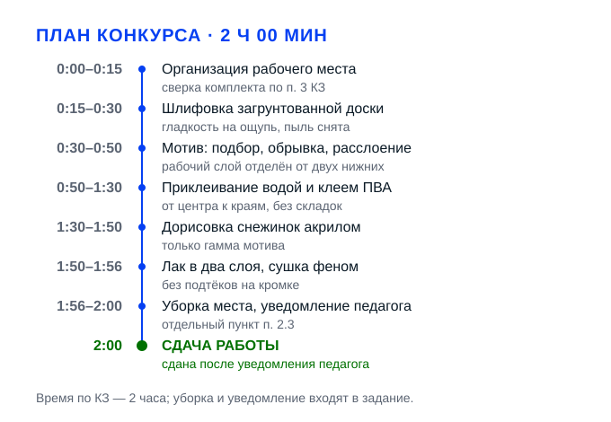
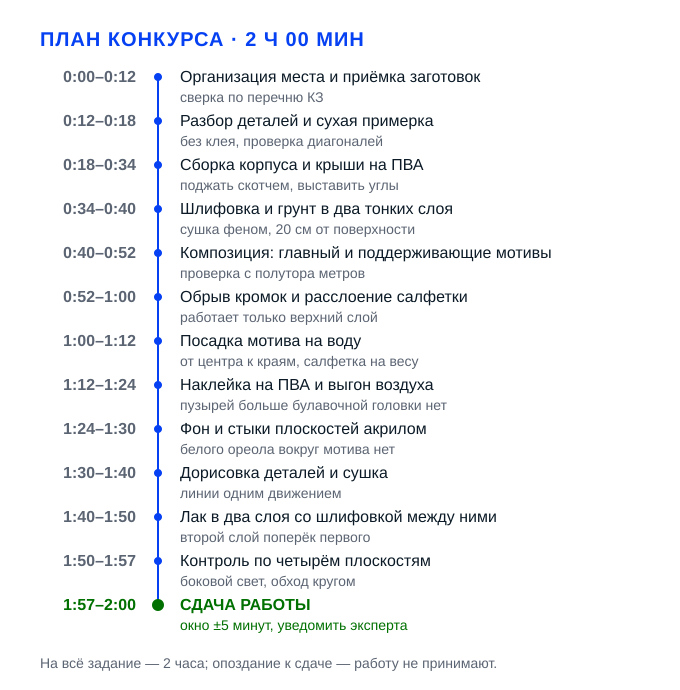
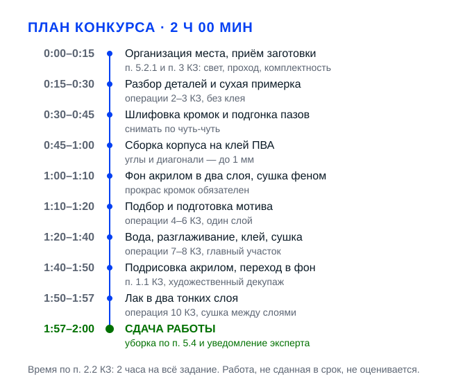

Художественное творчество (Декупаж) (ФВ)
Задания ниже — официальные файлы «Абилимпикс» (источник: abilympics-russia.ru), разложенные по категориям. Решения написаны по тексту задания, регламенту и критериям оценки; в них указано, что именно проверяет эксперт.
Школьник
14–16 лет, базовый уровень заданияВ официальном файле категории не разделены отдельными разделами — приводим задание целиком; различия по категориям смотрите в таблице модулей.
Пошаговое решение
Задание для школьников — выполнить декупаж деревянной дощечки по теме «Зимние узоры», и на всё отведено 2 часа. По описанию конкурсного задания работа идёт так: организовать рабочее место, отшлифовать загрунтованную поверхность, подобрать салфетку и декупажную карту, вырезать или оборвать края мотива, отделить верхний слой от двух нижних, посадить мотив на воду от центра к краям, приклеить его клеем ПВА, дорисовать акрилом точки-снежинки в гамме мотива, покрыть глянцевым лаком, убрать место и уведомить педагога. Материалы выдаются на одного участника: доска, салфетка или карта, клей ПВА, две жёсткие кисти, ножницы, набор акриловых красок, лак, наждачная шкурка и фен. Исход решают два узких места: подготовка поверхности, от которой зависит, ляжет ли тонкая бумага без бугров, и приклеивание, где складка под глянцем уже не исправима.

Задача 1. Организовать рабочее место и разложить материалыЭтап 1 по п. 2.3 КЗ · первые 15 минут из 120
Первый пункт конкурсного задания звучит буднично — «займите место за рабочим столом и приготовьте инструменты», — но именно он решает, сколько времени останется на сам декупаж. На одного участника по перечню оборудования приходится стол и стул, а по перечню материалов — доска, салфетка или декупажная карта, клей ПВА, две жёсткие кисти, небольшие ножницы, набор акриловых красок, глянцевый акриловый лак, наждачная шкурка и фен. Всё это нужно не просто получить, а разложить так, чтобы мокрая салфетка не просохла, пока вы ищете ножницы, и чтобы фен включался в розетку, до которой не надо тянуться через всю доску.
Действие 1.1. Принять заготовку и сверить комплект
Шаг 1.1.1
Берём доску со стола выдачи за кромку, чтобы не засалить лицевую плоскость, и осматриваем её целиком: лицевую сторону, тыльную, все четыре кромки, углы и отверстие под верёвку. Доска приходит уже загрунтованной, поэтому ищем не голое дерево, а дефекты самого грунта — наплывы у кромки, пропуски и просветы, прилипшие волоски кисти, отпечатки пальцев, капли клея. Кладём доску на подкладной лист лицевой стороной вверх и разворачиваем её так, чтобы свет лампы падал сбоку: под боковым светом видно то, чего не видно сверху.
Осмотр до шлифовки — единственный момент, когда брак заготовки ещё можно предъявить, не переделывая работу. Загрунтованная поверхность уже подготовлена за вас, и если на ней остался наплыв, салфетка ляжет на бугор и порвётся именно по нему, а пузырь под тонкой бумагой не разгладится никакой кистью. В задании оговорено, что дощечка выдаётся заранее подготовленной, значит за качество грунта отвечает не участник — но сказать об этом нужно до начала работы.
Доска осмотрена с двух сторон при боковом свете, дефекты перечислены про себя или отмечены едва заметной точкой карандаша на тыльной стороне. Проверьте ладонью: поверхность должна быть прохладной, ровной, без шероховатых островков и без липких мест от плохо высохшего грунта.
Частая ошибка — повертеть доску в руках и сразу взяться за шкурку: наплыв и пропуск грунта обнаруживаются уже под салфеткой, когда исправлять поздно. Вторая ошибка — трогать лицевую сторону пальцами: жирный след на грунте даёт пятно, на котором клей не схватится и салфетка отойдёт пузырём.
Эксперт подходит в первые минуты и смотрит, осматривает ли участник заготовку до работы и держит ли её за кромку. Молчаливая работа с бракованной доской читается как невнимательность к заданию, а не как скромность.
Шаг 1.1.2
Раскладываем выданное на столе и сверяем с перечнем материалов из задания: доска, одна салфетка или декупажная карта, клей ПВА, две жёсткие кисти, небольшие ножницы, набор акриловых красок, глянцевый акриловый лак, наждачная шкурка и фен. Каждую позицию не просто пересчитываем, а проверяем на пригодность: у ножниц смыкаются кончики, у кистей не вылезают волоски, флакон клея не забит сухой коркой, тюбики краски не затвердели, лак прозрачный, а не с плёнкой, шкурка не стёрта до бумаги.
Сверка комплекта — это страховка от простоя в середине работы. Клей ПВА схватывается быстро, салфетка после воды живёт считанные минуты, и в этот момент бегать за ножницами или за второй кистью уже нельзя: мотив придётся перекладывать, а мокрая бумага рвётся. Кроме того, недостача обнаруживается только до старта — потом её оформляют через главного эксперта, и время на это уходит из ваших ста двадцати минут.
Все позиции перечня лежат на столе и названы про себя поимённо, ничего не осталось в упаковке за спиной. Проверьте ножницы на клочке бумаги, а кисть — на тыльной стороне ладони: жёсткая кисть должна стоять упруго и не расходиться веером, иначе ею не разгладить салфетку.
Самая частая ошибка — оставить часть материалов в сумке «чтобы не мешали»: потом выясняется, что лак остался в пакете, а работа уже покрыта клеем. Вторая — не проверить фен: он включается, но дует холодным, и сушка вместо двух минут занимает десять.
Эксперт фиксирует полноту комплекта на старте, а дальше следит, пользуется ли участник всеми выданными материалами: незадействованная декупажная карта при готовой салфетке — повод уточнить, понял ли он задание.
Шаг 1.1.3
Проверяем инструмент в работе, а не на вид. Ножницы пробуем на обрезке салфетки: они должны резать бумагу до самого кончика, а не жевать её. Обе жёсткие кисти смачиваем и промакиваем о салфетку — жёсткая кисть для клея должна держать форму, а не разваливаться. Фен включаем заранее и проверяем тепло на расстоянии вытянутой руки, шкурку сгибаем: она не должна ломаться и осыпаться. Всё, что не работает, меняем сразу, до первого мазка клея.
Инструмент, проверенный до работы, экономит время и нервы в самой уязвимой фазе. Салфетка приклеивается в один проход: если в этот момент ножницы мнут бумагу или фен дует холодом, работа останавливается, а вода с клеем уже начали схватываться. Замена инструмента после старта идёт через эксперта, поэтому дешевле потратить две минуты сейчас, чем объяснять простой потом.
Каждая позиция испытана действием: ножницы режут, кисти держат форму, фен греет, шкурка гнётся. Отложите в сторону то, что вызывает сомнение, и поднимите руку — волонтёр или эксперт подойдёт до начала работы, а не в середине приклеивания.
Типичная ошибка — проверить только фен и забыть про ножницы: тупые кончики рвут тонкую салфетку там, где нужен ровный срез по контуру снежинки, и мотив приходится вырезать заново из остатков. Вторая — работать кистью, из которой лезут волоски: волос приклеивается под салфетку и остаётся под лаком.
Эксперт смотрит на первые пробы: аккуратно ли обращаются с инструментом и понимает ли участник, для чего предназначена каждая кисть. Жёсткая кисть для клея и тонкая для точек — это разные инструменты, и путать их на глазах эксперта не стоит.
Действие 1.2. Разложить материалы по зонам стола
Шаг 1.2.1
Делим столешницу на три зоны и держим это деление до конца работы. В центре — рабочая зона: подкладной лист и на нём доска, развёрнутая длинной стороной к себе. Слева — зона материалов: салфетка или декупажная карта в закрытом виде, клей, лак, краски, палитра, стаканчик с водой. Справа — зона инструмента и сушки: ножницы, обе кисти, шкурка, фен и место под мокрые обрезки. Мусор не складываем в рабочую зону даже временно.
Зоны нужны потому, что декупаж — работа с мокрой тонкой бумагой, и любое лишнее движение над доской заканчивается порванным мотивом. Когда клей и вода стоят слева, а фен справа, рука идёт по короткому и всегда одному пути, и вы не переносите капли через открытую салфетку. Это же деление помогает уборке: в конце задания инструмент собирается из одной зоны, а не ищется по всему столу.
Проверьте расстояния: до флакона с клеем и до стаканчика с водой вы дотягиваетесь не вставая и не наклоняясь над доской, а локоть при этом не задевает салфетку. Подкладной лист выступает за края доски на два-три сантиметра со всех сторон — капли клея и воды должны падать на него, а не на столешницу.
Частая ошибка — поставить стаканчик с водой прямо над доской: одно неловкое движение, и вода льётся на грунт, а размокший грунт приходится сушить и шлифовать заново. Вторая ошибка — держать открытую салфетку на краю стола, где её сдувает сквозняком от двери.
Эксперт оценивает организацию рабочего места как отдельный критерий и смотрит именно на расположение материалов: аккуратно разложенный стол читается как понимание технологии, а куча инструмента в центре — как спешка.
Шаг 1.2.2
Готовим рабочие растворы и воду. В стаканчик наливаем чистую воду примерно на треть, чтобы кисть набирала её свободно, но стакан не опрокидывался от случайного касания. Клей ПВА отливаем в небольшую ёмкость или на палитру — из большого флакона кистью брать неудобно, и на салфетку попадает слишком много клея. Лак пока не открываем: он сохнет на воздухе и тянет пыль, его очередь наступит через полтора часа. Краски оставляем закрытыми до момента дорисовки.
Клей и вода — два разных этапа одной операции, и смешивать их нельзя. Сначала салфетка садится на воду: вода размягчает бумагу и позволяет разгладить её без складок. Только после этого идёт клей, который и держит мотив на доске. Если налить клей сразу, бумага схватится в том положении, в каком легла, и расправить её будет невозможно, а отлитый заранее клей в мелкой посуде позволяет брать его по капле, а не плюхать из флакона.
Вода налита, клей отлит, кисти лежат на подставке или на краю палитры, а не на столе мокрыми. Проверьте, что флакон клея закрыт, если вы им не пользуетесь: открытый ПВА за сорок минут покрывается плёнкой, и потом её приходится вылавливать кистью прямо над салфеткой.
Ошибка — налить полный стакан воды: кисть набирает слишком много, и вода течёт по доске, размывая грунт у кромки. Вторая — держать клей в крышке флакона на весу: посуда опрокидывается, и половина клея уходит на подкладной лист.
Эксперт отмечает, как участник обращается с расходниками: клей по капле, вода в отдельной посуде, флаконы закрыты. Разлитый по столу клей — это и потеря материала, и грязь на изделии.
Шаг 1.2.3
Проверяем условия рабочего места, которые заданы требованиями к оснащению. Свет должен падать на доску слева или спереди, но не в глаза: при недостатке освещения на рабочем месте участника с нарушением зрения предусмотрено индивидуальное равномерное освещение не менее 300 люкс, и если вам темно, об этом надо сказать до старта. Фен включаем в розетку так, чтобы провод лежал вдоль стола и не пересекал рабочую зону. Стул ставим так, чтобы ступни стояли на полу, а предплечье лежало на столе без наклона плеча: при работе с тонкой бумагой дрожь в руке видна сразу.
Освещение и посадка — не формальность, а прямая связь с качеством. Складку и пузырь на мокрой салфетке видно только под косым светом, а при тусклой лампе их замечают уже после лака, когда исправление означает переделку всей работы. Провод фена поперёк стола — типичная причина, по которой мокрая кисть смахивает стакан, а неправильная посадка даёт ошибку в самых мелких точках-снежинках.
Проверьте три вещи: тень от руки не закрывает центр доски, провод фена не касается подкладного листа, ступни стоят на полу. Если в помещении прохладно, а по требованиям для участников с соматическими и ментальными нарушениями температура держится в диапазоне 21–24 градуса и влажность 40–60 процентов, скажите об этом — режим обязаны обеспечить.
Ошибка — работать, стоя согнувшись над доской: через двадцать минут дрожат руки, а точки-снежинки выходят разного размера. Вторая — тянуть шнур фена через рабочую зону и опрокинуть воду в самый неподходящий момент.
Эксперт обращает внимание на посадку и на то, созданы ли участнику необходимые условия: если нужна лупа с подсветкой или дополнительный свет, это решается до старта, а не жалобой после сдачи.
Действие 1.3. Спланировать 120 минут
Шаг 1.3.1
На всё задание отведено два часа, и это время надо разложить по этапам заранее, а не по ходу. Рабочий расклад такой: пятнадцать минут на организацию места и осмотр доски, пятнадцать на шлифовку и обеспыливание, двадцать на подбор мотива, вырезание и расслоение, сорок на приклеивание водой и клеем, двадцать на дорисовку снежинок акрилом, пятнадцать на лакировку с сушкой и последние пять-десять на уборку и сдачу. Контрольные точки запоминаем по часам: к 0:40 мотив должен быть расслоён, к 1:20 — приклеен, к 1:55 — покрыт лаком.
План нужен потому, что декупаж легко «съедает» время на подборе мотива: хочется примерить ещё одну салфетку, потом ещё одну, и на приклеивание остаётся двадцать минут вместо сорока. А приклеивание — единственная операция, которую нельзя ускорить: если торопиться, появляются складки, и работа теряет вид целиком. Плюс уборка и уведомление педагога входят в последовательность задания отдельными пунктами, то есть на них тоже нужно оставить время.
К 0:40 у вас расслоённый мотив и размеченная доска, к 1:20 салфетка сидит на доске без складок, к 1:40 нанесены снежинки, к 1:55 изделие под лаком. Если на контрольной точке вы отстаёте больше чем на десять минут, сокращайте не приклеивание, а декор: две снежинки вместо пяти лучше, чем порванный мотив.
Ошибка — планировать «как получится» и спохватываться на 1:30, когда салфетка ещё не приклеена. Вторая — отдать весь запас времени декору: дорисовка точек не спасёт работу, если под ней пузыри и складки, а лак, нанесённый в спешке на мокрый акрил, даёт мутные пятна.
Эксперт по ходу конкурса видит, укладывается ли участник в этапы: спокойная работа по плану и работа в режиме пожара выглядят по-разному, и на итоговой оценке это сказывается через качество.
Шаг 1.3.2
Отдельно продумываем две операции, где назад пути нет. Первая — приклеивание: после того как клей схватился, снять салфетку, не порвав её, невозможно, поэтому решение о положении мотива принимается до первой капли воды. Вторая — лак: он фиксирует всё, включая ошибки, и снять его без растворителя нельзя. Определяем для себя порядок действий до этих точек: где лежит мотив, какой край доски остаётся чистым, сколько слоёв лака и с какой паузой.
Понимание необратимых шагов меняет поведение: до них работа идёт вдумчиво, после — быстро. Это ровно то, чего ждёт задание, где сначала надо всё подготовить, а потом приклеить, дорисовать и покрыть лаком. Участник, который знает, что примерка бесплатна, а приклеивание — нет, тратит время на примерку и экономит его на исправлениях.
Проговорите про себя порядок: мотив примерен и размечен, доска обеспылена, вода налита, клей отлит. Только после этого первая капля воды. То же с лаком: изделие сухое на ощупь, ворс не липнет, краска не мажется.
Ошибка — начать приклеивать «начерно», рассчитывая поправить: мокрая салфетка тянется и рвётся по уже приклеенному краю. Вторая — покрыть лаком недосушенную доску: под глянцем остаётся мутная плёнка, и вернуть прозрачность уже нельзя.
Эксперт смотрит, есть ли у участника осознанная последовательность: подготовка до приклеивания и проверка сухости до лака — два признака, по которым видно понимание технологии, а не повторение за мастером.
Задача 2. Подготовить поверхность доски под декупажЭтап 2 по п. 2.3 КЗ · около 15 минут вместе с обеспыливанием
Второй пункт задания сформулирован коротко: «шкурим загрунтованную поверхность доски, чтобы сделать совершенно ровной для приклеивания салфетки». За этой строчкой стоит вся дальнейшая судьба работы: тонкая салфетка повторяет рельеф основания с точностью до долей миллиметра, и любой бугор, ворсинка или наплыв грунта проступит через бумагу пузырём. Шлифовка занимает десять-двенадцать минут, но именно она отличает работу, где салфетка лежит как роспись, от работы, где она топорщится и отходит по краям.
Действие 2.1. Оценить заготовку и её грунт
Шаг 2.1.1
Кладём доску на подкладной лист и проходим её ладонью, а потом тыльной стороной ногтей — так чувствуется то, что не видно глазом. Ищем наплывы грунта у кромки, шероховатые островки, прилипшие волоски, капли застывшего клея, следы от пальцев. Отдельно смотрим кромку и углы: там грунт ложится толще всего, и именно на кромке салфетка чаще всего отходит через день после сдачи. Сучки и смоляные кармашки отмечаем, если они есть.
Грунт на доске — это слой, а не пропитка, и он сохнет неравномерно. Наплыв у кромки даёт ступеньку, через которую салфетка не ляжет: она натянется и потом лопнет по этой линии. Смоляной кармашек под грунтом при нагреве феном выступает и даёт жирное пятно, на котором клей не держится. Знать об этом заранее важно потому, что способы борьбы разные: наплыв снимается шкуркой, а кармашек надо обходить или изолировать.
Поверхность на ощупь однородная: нет мест, где палец «запинается», нет бугорков и липких участков. Кромка проверена отдельно, углы тоже. Если нашли смоляное пятно или скол, покажите его эксперту до начала шлифовки — это дефект заготовки, а не вашей работы.
Ошибка — проверять доску только глазами: блик от лампы скрывает наплывы, а рука их находит сразу. Вторая — начать шлифовать, не заметив смоляного кармашка: шкурка размазывает смолу по поверхности, и пятно становится больше, а не меньше.
Эксперт подходит к моменту начала шлифовки и смотрит, осмотрел ли участник кромку и углы. Работа, начатая без осмотра, обычно выдаёт себя пузырями именно по краю доски.
Шаг 2.1.2
Проверяем равномерность грунта на просвет: поднимаем доску на уровень глаз и смотрим вдоль плоскости. Пропуски выглядят как матовые пятна другого оттенка, наплывы — как блестящие полосы. Если грунт где-то пропущен до дерева, этот участок впитает воду и клей сильнее, и салфетка там приклеится пятном с более тёмным ореолом. Отмечаем такие места карандашом на тыльной стороне, чтобы не потерять.
Пропуск грунта — скрытый дефект: до приклеивания он почти не виден, а после воды проявляется тёмным пятном, которое под лаком остаётся навсегда. Понимание этого спасает от главной неприятности декупажа — «мокрых» пятен и разводов, которые заказчик видит первым делом. Кроме того, на пропущенном участке поднимается ворс, и салфетка рвётся при разглаживании.
Доска осмотрена вдоль плоскости при боковом свете, матовые пятна отмечены. Если пропусков много и они крупные, это повод сказать эксперту: возможно, заготовку заменят, и это дешевле, чем бороться с пятнами под лаком.
Ошибка — принять матовое пятно за игру света и не проверить его пальцем. Вторая — зашлифовать пропуск до дерева и не загрунтовать заново: открытое дерево тянет воду и даёт ореол вокруг мотива.
Эксперт смотрит на доску при боковом свете вместе с участником и отмечает, замечены ли пропуски. Это критерий внимательности к материалу, а не к технике приклеивания.
Шаг 2.1.3
Если на доске есть скол, трещина, глубокий сучок или смоляной кармашек, решение принимаем сразу и вслух: обходим это место мотивом, ставим на него плотный элемент декора или просим замену заготовки. Обход — самый частый вариант: скол на кромке закрывается снежинкой, сучок — тёмным элементом рисунка. Замену просим только при дефекте, который нельзя обыграть, и просим до первой капли воды, а не после.
Дефект, о котором не подумали заранее, обязательно окажется под самым светлым участком мотива, где его видно лучше всего. Декупаж тем и хорош, что дефекты обыгрываются: снежный мотив «Зимние узоры» состоит из отдельных пятен и линий, и почти любой скол можно превратить в часть рисунка. Но решение об этом принимается на сухой доске, потому что после приклеивания мотив уже не сдвинуть.
Решение сформулировано и, если оно касается дефекта заготовки, озвучено эксперту. На тыльной стороне отмечено, какой участок закрывается декором. Проверьте себя: сможете ли вы показать это место на готовой работе и объяснить, почему оно выглядит именно так.
Ошибка — промолчать о дефекте и надеяться, что «под салфеткой не видно»: под тонкой бумагой видно всё, включая тёмное пятно сучка. Вторая — просить замену уже после начала приклеивания, когда часть работы сделана.
Эксперт оценивает, умеет ли участник принимать решение по материалу. Спокойный обход дефекта с объяснением читается лучше, чем молчаливая попытка его спрятать.
Действие 2.2. Отшлифовать загрунтованную поверхность
Шаг 2.2.1
Берём наждачную шкурку и начинаем с мелкого зерна — примерно номер 180–240, крупное зерно на грунте оставляет борозды, которые потом видны под салфеткой. Шкурку наматываем на деревянный брусок или на пробку: пальцами вы продавливаете поверхность неравномерно и снимаете грунт пятнами. Движения — вдоль волокон, короткими ходами по десять-пятнадцать сантиметров, с лёгким нажимом: задача не снять грунт, а выровнять его.
Направление вдоль волокон важно потому, что поперёк шкурка подрезает волокна и поднимает ворс, который потом встанет под салфеткой щёткой. Лёгкий нажим и мелкое зерно дают ровную матовую поверхность без борозд. Если давить сильно, грунт снимается до дерева, и участок начинает впитывать воду неравномерно — именно так появляются пятна вокруг мотива.
Поверхность стала равномерно матовой, без блестящих наплывов и без просветов до дерева. Проведите по ней тыльной стороной ладони: она должна быть гладкой и прохладной, без «песка» под пальцами. Кромку проверьте отдельно, скруглив её шкуркой на полмиллиметра.
Ошибка — шлифовать крупным зерном «чтобы быстрее»: остаются борозды, и салфетка ложится на них полосами. Вторая — тереть поперёк волокон: ворс поднимается, и при разглаживании мокрой бумаги он рвёт её изнутри.
Эксперт смотрит на характер движения: вдоль волокон, бруском, без нажима. Это приём, который отличает подготовку от формального «потёр шкуркой».
Шаг 2.2.2
Проходим кромки и углы отдельно, тем же зерном, но ещё легче. Кромку скругляем: у подготовленной доски она должна быть не острой, а мягко снятой, иначе салфетка на повороте натянется и лопнет. Углы проходим шкуркой, сложенной втрое, без сильного нажима, чтобы не снять грунт до дерева. Отверстие под верёвку обрабатываем, обернув шкурку вокруг карандаша.
Кромка — самое уязвимое место декупажа. Салфетка, завёрнутая за острый край, натягивается и при высыхании рвётся по линии кромки, а под лаком это выглядит как отслоение. Скруглённая кромка даёт бумаге плавный переход, и она держится. Углы и отверстие обрабатывают отдельно потому, что именно там чаще всего остаются наплывы грунта, которые не снимаются общим проходом.
Кромка на ощупь мягкая, без заусенцев и без блеска грунта. Проведите по ней ногтем: он не должен цепляться. Углы и отверстие тоже проверены — там нет бугорков, на которых салфетка могла бы приподняться.
Ошибка — обработать только лицевую плоскость, оставив кромку острой: салфетка лопнет по краю при первой же сушке феном. Вторая — снять на углу грунт до дерева: угол начнёт впитывать воду и потемнеет под лаком.
Эксперт проверяет кромку пальцем и смотрит, скруглена ли она. Это мелочь, которая на готовом изделии видна как аккуратность или как небрежность.
Шаг 2.2.3
После шлифовки снимаем пыль и поднятый ворс. Сначала проходим поверхность сухой жёсткой кистью по ходу волокон, затем мягкой салфеткой, смоченной водой и хорошо отжатой: влага приподнимает оставшийся ворс. Даём просохнуть одну-две минуты и проходим шкуркой самого мелкого зерна — ворс снимается легко, почти без нажима. Потом ещё раз обеспыливаем сухой кистью.
Поднятый ворс — главный враг тонкой салфетки. Пока он торчит, бумага ложится на его кончики и при разглаживании рвётся точечно, мелкими проколами, которые под лаком выглядят как крапинки. Влажная протирка приподнимает ворс, а повторная шлифовка его снимает — это стандартный приём подготовки дерева, и на загрунтованной доске он работает так же. Пыль, оставшаяся на поверхности, превращается в клейстер под салфеткой и даёт мутные пятна.
Поверхность сухая, гладкая, без видимой пыли и без торчащих волосков. Проверьте ладонью в боковом свете: пыль видна как серая пудра. Кромка тоже обеспылена — пыль с кромки сдувается или смахивается кистью.
Ошибка — шлифовать, не снимая пыль между проходами: абразив забивается, и шлифовка превращается в размазывание. Вторая — протереть доску влажной тряпкой и сразу начать клеить: влажное дерево отдаёт воду под салфетку, и клей схватывается неравномерно.
Эксперт смотрит на доску перед приклеиванием: чистая, матовая, без пыли. Пыльная доска — самая частая причина мутных разводов под лаком.
Действие 2.3. Проверить готовность поверхности
Шаг 2.3.1
Проверяем плоскость «на просвет»: поднимаем доску и смотрим вдоль неё, как смотрят на столярную заготовку. Любая выпуклость или впадина видна как искажение линии. Затем кладём на доску сухую салфетку и проводим по ней ладонью: сухая бумага показывает рельеф основания лучше, чем глаз. Если под салфеткой чувствуются бугорки, возвращаемся к шкурке — это минута работы, которая экономит полчаса исправлений.
Проба сухой салфеткой — единственный способ проверить именно то, что нужно: не «ровная ли доска», а «ляжет ли на неё бумага». Бугорок, незаметный на грунте, под сухой салфеткой читается сразу, а под мокрой уже поздно — бумага тянется и рвётся. Именно поэтому проверку делают до воды, а не после первой капли.
Под сухой салфеткой нет бугорков, поверхность читается ровной на просвет, салфетка не «клюёт» на отдельных точках. Если всё сходится, переходим к подбору мотива: поверхность готова и больше к ней возвращаться не придётся.
Ошибка — пропустить пробу сухой салфеткой и узнать о бугорке в момент приклеивания, когда бумага уже намокла. Вторая — догладить бугорок ногтем: на грунте остаётся вмятина с валиком по краю, и пузырь образуется по валику.
Эксперт может подойти и провести по доске рукой вместе с участником. Готовность поверхности — прямой критерий качества подготовки, и он оценивается до начала приклеивания.
Шаг 2.3.2
Последняя проверка перед мотивом: доска лежит ровно, не качается на подкладном листе, кромка чистая, пыли нет, руки вымыты и вытерты. Отодвигаем от рабочей зоны всё, что может упасть: стакан с водой, флакон клея, ножницы. Салфетку и декупажную карту достаём из упаковки только теперь — до этого они лежали закрытыми, чтобы не набрали пыли и не залоснились от пальцев.
Момент перехода от подготовки к мотиву — точка, где заканчивается черновая работа. Если на столе остались лишние предметы, они мешают именно в те сорок минут, когда руки заняты мокрой бумагой. Чистые руки нужны по той же причине, что и при осмотре: жирный след на грунте не даёт клею схватиться, и салфетка отходит пузырём ровно по отпечатку.
Стол свободен, доска не качается, руки сухие, упаковка с мотивом вскрыта. Проверьте, что под рукой есть сухая тряпка или бумажное полотенце: ими промокают кисть и убирают случайную каплю, и искать их в момент приклеивания некогда.
Ошибка — оставить на столе раскрытую упаковку и обрезки от прошлой работы: они липнут к мокрой салфетке. Вторая — начать работу с жирными от крема руками: клей на таком участке не держится совсем.
Эксперт фиксирует переход к следующему этапу: чистое место и подготовленный мотив показывают, что участник работает по плану, а не по вдохновению.
Задача 3. Подобрать мотив, вырезать и расслоить салфеткуЭтап 3 по п. 2.3 КЗ · около 20 минут
Третий пункт задания — «подбираем салфетку (мотив) и декупажную карту», а затем «аккуратно вырезаем или обрываем края салфетки» и «отделяем верхний слой салфетки от двух нижних». Тема работы задана заранее — декупаж «Зимние узоры», поэтому мотив выбирается не по принципу «что нравится», а по принципу «что читается на доске и сочетается с дорисовкой акрилом». Здесь же решается композиция: где будет центр, сколько остаётся чистого поля, какой край доски останется без декора.
Действие 3.1. Выбрать мотив под тему «Зимние узоры»
Шаг 3.1.1
Достаём салфетку и декупажную карту, раскладываем на чистом листе бумаги рядом с доской и смотрим на них вместе, а не по отдельности. Для темы «Зимние узоры» подходят мотивы с морозным рисунком, ветками, снегирями, снежинками, еловыми лапами — то, что читается как зима без подписи. Отбрасываем всё, что требует другого фона: летние цветы, яркие фрукты, крупные надписи. Смотрим на размер: мотив должен занимать примерно две трети лицевой стороны доски, оставляя по краям поле.
Мотив — это половина оценки за художественную часть, потому что именно его видят первым. Слишком крупный рисунок упирается в кромку, и его приходится обрезать, теряя целостность; слишком мелкий теряется на доске и выглядит как случайная наклейка. Правило двух третей даёт композиции воздух: по краям остаётся поле, куда лягут дорисованные акрилом снежинки — а они по заданию обязательны, и место для них надо предусмотреть заранее.
Мотив выбран и отложен отдельно, остальные варианты убраны в упаковку. Проверьте взглядом с расстояния вытянутой руки: рисунок должен читаться целиком, без «обрезков» по краям. Если край мотива уже обрезан полиграфией, это допустимо — вы всё равно будете обрывать края.
Ошибка — взять первый попавшийся яркий мотив, не соотнося его с темой: работа называется «Зимние узоры», и летний сюжет сразу читается как невыполненное задание. Вторая — выбрать слишком крупный мотив и потом обрезать его по кромке доски, теряя половину рисунка.
Эксперт подходит на этапе подбора и смотрит, соотносит ли участник мотив с заданной темой. Это первое, что видно о замысле работы, и по выбору мотива уже понятно, будет ли композиция цельной.
Шаг 3.1.2
Примеряем мотив на доске, не приклеивая: кладём сухую салфетку лицевой стороной вверх и двигаем, пока композиция не станет удобной. Ищем положение, при котором крупный элемент не попадает на отверстие под верёвку и на сучок, а свободное поле распределяется равномерно — по одному-два сантиметра с каждой стороны, чуть больше снизу. Отмечаем уголки мотива едва заметными точками карандаша на грунте, чтобы вернуть его на место после расслоения.
Примерка бесплатна, а приклеивание необратимо, поэтому композицию решают именно сейчас. Точки-ориентиры нужны потому, что после отделения двух нижних слоёв салфетка становится почти невесомой и «плывёт» в руках: без метки мотив встанет на полсантиметра в сторону, и это будет заметно по полю. Отверстие под верёвку обходят всегда: декупаж по отверстию выглядит как небрежность, а вырезать его в готовой салфетке почти невозможно.
Мотив лежит ровно, поля одинаковые, отверстие и сучки свободны, метки поставлены. Посмотрите на доску сверху и сбоку: композиция должна читаться без объяснений, а не «раскрываться» после вашего рассказа.
Ошибка — примерить мотив «на глаз» и положить его на отверстие: потом приходится сдвигать уже намокшую салфетку и рвать край. Вторая — ставить жирные метки простым карандашом: графит проступает через тонкую бумагу тёмной точкой.
Эксперт смотрит на композицию до приклеивания: цельный мотив с полями читается как работа по плану, обрезанный по кромке — как спешка.
Шаг 3.1.3
Решаем, как соединить салфетку и декупажную карту. Карта плотнее и даёт чёткий, почти типографский рисунок, салфетка мягче и легче вживляется в фон. Рабочее решение для доски: крупный сюжет берём с карты, а снежинки, иней и мелкие детали — с салфетки или дорисовываем акрилом. Проверяем сочетание по цвету: холодная гамма карты должна совпадать с гаммой салфетки, иначе на стыке появится грязный переход.
Задание даёт на участника и салфетку, и декупажную карту, и это не случайность: карта держит форму и не тянется от воды так сильно, как салфетка, поэтому крупные элементы на ней получаются чище. Но карта плотная, и её край на доске виден как ступенька, поэтому мелкие детали лучше брать с салфетки — она тоньше и садится заподлицо. Совпадение по цвету важно потому, что на стыке двух мотивов глаз сразу замечает разницу оттенков.
Оба материала разложены и распределены по ролям, стык продуман: он должен попадать на тёмный или мелкий участок рисунка, где переход незаметен. Проверьте при боковом свете: если между картой и салфеткой видна разница по холоду-теплу, стык надо перекрыть акриловой дымкой.
Ошибка — наклеить карту поверх салфетки в самом светлом месте: граница видна как линия. Вторая — смешать в одной композиции тёплый и холодный мотив: работа выглядит собранной из двух разных.
Эксперт оценивает, умеет ли участник работать с двумя материалами сразу. Осмысленное разделение ролей между картой и салфеткой — признак понимания техники, а не механического наклеивания.
Действие 3.2. Вырезать или оборвать края мотива
Шаг 3.2.1
Если контур мотива чёткий — ветка, птица, снежинка с ясной границей, — работаем ножницами. Режем по самой границе рисунка, оставляя полоску фона не шире половины миллиметра: белая кайма на цветном фоне читается как наклейка и портит впечатление сильнее, чем неровный край. Ножницы держим кончиками к бумаге и поворачиваем бумагу, а не ножницы: так линия остаётся плавной на изгибах. Режем на весу, не прижимая салфетку к столу ладонью.
Рез по контуру нужен там, где мотив имеет собственный силуэт: у птицы, ветки, отдельной снежинки. Полоска фона вокруг такого мотива сразу выдаёт аппликацию, а по заданию работа должна выглядеть как роспись — именно этого добиваются покрытием лаком. Поворот бумаги вместо ножниц даёт плавную линию, потому что ножницы при повороте в руке «рубят» угол на изгибе. Резать на весу нужно потому, что прижатая ладонью салфетка залоснивается и рвётся по сгибу.
Край мотива повторяет контур рисунка, белой каймы не видно, линия плавная без ступенек. Проверьте на просвет: толщина оставленного фона должна быть одинаковой по всему периметру. Обрезки не выбрасываем сразу — из них получатся мелкие снежинки для декора.
Ошибка — резать с запасом в два-три миллиметра «чтобы не испортить»: этот запас потом виден белой рамкой. Вторая — прижать салфетку ладонью и резать по столу: бумага заламывается, и на мотиве остаётся белая полоса по сгибу.
Эксперт смотрит на готовый край: ровный, без каймы, без заломов. Обрезанный с запасом мотив на цветном фоне виден сразу, и это стоит баллов за качество.
Шаг 3.2.2
Там, где у мотива нет чёткого контура — снежный фон, размытые края, ветки с инеем, — работаем обрывом. Смачиваем кисть водой и проводим влажную линию на расстоянии двух-трёх миллиметров от рисунка, ждём несколько секунд, пока бумага набухнет, и аккуратно тянем край пальцами вдоль линии. Бумага расходится по волокну, и край получается мягким, ворсистым, почти растворённым в фоне. Тянем медленно, небольшими участками по сантиметру.
Обрыв — приём, который отличает декупаж от аппликации. Рваный край не имеет чёткой границы, поэтому после лака он сливается с фоном доски и выглядит как живопись. Влажная линия задаёт направление разрыва: сухая бумага рвётся как получится, а намокшая — по волокну, ровно там, где провели кистью. Медленное движение нужно потому, что при рывке вместе с лишним краем отрывается часть самого рисунка, и восстановить его нечем.
Край мягкий, волокнистый, без прямых участков и без «ступенек». Ширина перехода — один-два миллиметра, дальше начинается чистый рисунок. Проверьте на просвет: в зоне обрыва не должно быть просветов до грунта, иначе там останется светлое пятно.
Ошибка — рвать сухую салфетку: край выходит рваным клочьями, а рисунок теряет куски. Вторая — мочить слишком близко к изображению: вода затекает под рисунок и он расплывается вместе с краской.
Эксперт смотрит именно на край мотива: обрыв по волокну читается как владение техникой, а ровный рез ножницами на размытом мотиве — как непонимание разницы приёмов.
Шаг 3.2.3
Раскладываем подготовленные фрагменты на доске по меткам и проверяем композицию целиком: крупный мотив на месте, мелкие снежинки распределены по полю неравномерно, но уравновешенно — две-три у верхнего края, одна у нижнего, ни одна не липнет к кромке ближе чем на пять миллиметров. Запоминаем или зарисовываем схему расположения: на память надеяться нельзя, фрагменты после намокания сдвигаются.
Раскладка до приклеивания — последняя возможность увидеть композицию целиком. Пять миллиметров от кромки — практическое правило: ближе к краю салфетка при высыхании натягивается и отходит, а на самой кромке её придётся заворачивать, и там почти всегда образуется складка. Схема расположения нужна потому, что приклеивать приходится по одному фрагменту, и без плана мелкие детали съезжают в одну сторону.
Все фрагменты разложены и не пересекаются, поля соблюдены, схема закреплена на бумаге или в памяти по порядку. Посмотрите на доску прищуренными глазами: композиция должна держать равновесие, а не крениться в один угол.
Ошибка — приклеивать фрагменты по одному без общей раскладки: к концу работы выясняется, что снежинки сбились в кучу. Вторая — ставить мелкий фрагмент вплотную к кромке, где он отойдёт при сушке.
Эксперт оценивает композицию как единое целое, и раскладка до приклеивания показывает, планирует ли участник работу или действует наугад.
Действие 3.3. Расслоить салфетку
Шаг 3.3.1
Салфетка состоит из трёх слоёв, и клеить можно только верхний — тот, на котором напечатан рисунок. Отделяем его так: подцепляем ногтем или кончиком ножниц уголок и медленно тянем верхний слой на себя, придерживая остальные два пальцами другой руки. Если слои схватились, помогаем себе тонкой кистью, смоченной водой: влага размягчает соединение. Тянем по диагонали от угла к углу, а не от середины.
Декупажная карта и салфетка ведут себя по-разному, но принцип один: работать должен только красочный слой. Если приклеить все три слоя, нижние размокнут и превратятся в кашу под рисунком, дадут бугры и мутный белый фон. Диагональное расслоение нужно потому, что слои соединены по всей площади и при отрыве от середины бумага рвётся: угол даёт точку, за которую можно тянуть без разрыва.
Верхний слой отделён целиком, без разрывов и заломов, рисунок на нём читается полностью. Нижние два слоя отложены в сторону — они пойдут на вытирание кисти. Проверьте на просвет: рабочий слой должен быть полупрозрачным, без белых пятен от прилипших волокон.
Ошибка — тянуть слой от середины: салфетка рвётся пополам, и мотив уже не спасти. Вторая — начать расслоение на весу над доской: оторвавшийся угол падает на влажный грунт и прилипает.
Эксперт смотрит, отделён ли рабочий слой до приклеивания: работа с тремя слоями — грубая техническая ошибка, которая видна на готовом изделии мутными буграми.
Шаг 3.3.2
Рабочий слой расправляем на чистом листе бумаги и накрываем вторым листом, чтобы не сдуло и не прилипла пыль. Держим его именно так — между листами, а не в руках: тонкая бумага после расслоения почти невесома, мнётся от малейшего касания и впитывает влагу с пальцев. Если работаете с несколькими фрагментами, каждый хранится отдельно и подписан, а порядок приклеивания записан на схеме.
Расслоённая салфетка — самый хрупкий материал в работе. Она рвётся от сквозняка, прилипает к потной ладони и мгновенно схватывает пыль, которая потом видна под лаком. Хранение между листами бумаги — простой приём, который сохраняет мотив целым до момента приклеивания. Раздельное хранение фрагментов нужно потому, что после намокания они липнут друг к другу и разделить их без разрыва невозможно.
Фрагменты лежат между листами, не смяты, рисунок целый. Перед приклеиванием проверьте каждый на просвет: трещин и заломов быть не должно. Если фрагмент всё-таки заломился, его лучше вырезать заново из остатков, чем клеить с заломом.
Ошибка — держать расслоённую салфетку в руке, пока примеряете: она мнётся и прилипает к пальцам. Вторая — положить фрагменты стопкой: они слипаются, и разделить их без потерь уже не получится.
Эксперт обращает внимание на аккуратность обращения с материалом: целый рабочий слой к моменту приклеивания — признак того, что участник понимает, насколько он хрупок.
Задача 4. Приклеить мотив водой и клеемЭтап 4 по п. 2.3 КЗ · около 40 минут, главная часть работы
Сердце задания — приклеивание. В конкурсном описании оно разбито на два прохода: сначала салфетка садится на воду («капаем воду в центр салфетки», «постоянно набирая воду на кисть, разглаживаем от центра к краям, держа салфетку за края на весу»), и только потом идёт клей («капаем клей на салфетку и также от центра к краям кистью разравниваем»). Два прохода нужны не для надёжности: вода расправляет бумагу, клей фиксирует уже расправленное. Если поменять порядок, складки останутся под клеем навсегда.
Действие 4.1. Посадить мотив на воду
Шаг 4.1.1
Берём рабочий слой салфетки за два противоположных угла, поднимаем и переносим на доску, ориентируясь по карандашным меткам. Кладём не прижимая: сначала касается центр мотива, потом края опускаются сами. Поправляем положение, держа бумагу за углы на весу, пока мотив не встанет точно по меткам. Прижимать ладонью нельзя: сухая салфетка прилипает к пальцам и рвётся, а сдвинуть её после касания уже трудно.
Перенос на весу — единственный способ положить мотив точно. Тонкая бумага при касании стола мгновенно цепляется за грунт, и любая поправка означает разрыв. Ориентация по меткам нужна потому, что после намокания салфетка растянется на миллиметр-два в каждую сторону, и без ориентира этот сдвиг не заметить. Кладём центром вниз, а не краем: тогда бумага ложится равномерно, без натяжения в одну сторону.
Мотив лежит по меткам, углы совпадают, бумага не смята и не прижата. Проверьте, что под салфеткой нет обрезков и пыли: они не дадут бумаге сесть на грунт. Пальцами не трогаем — только за углы.
Ошибка — бросить салфетку на доску и разглаживать ладонью: бумага прилипает к пальцам и рвётся в самом центре мотива. Вторая — положить мотив со сдвигом и потом тянуть за угол: растянутая салфетка садится волной.
Эксперт смотрит на посадку мотива: точное положение по меткам и целая бумага показывают, что участник умеет обращаться с материалом.
Шаг 4.1.2
Набираем воду на жёсткую кисть и капаем ею в центр салфетки — не мажем, а именно капаем, давая воде растечься под бумагой. Ждём несколько секунд, пока бумага набухнет и потемнеет, и прижимаем центр мягким движением кисти от себя. Воды берём столько, чтобы она шла под бумагой, но не стояла лужей на поверхности: при избытке вода затекает под край и размывает грунт у кромки.
Вода делает две вещи: размягчает бумагу и работает как смазка между салфеткой и грунтом. Пока бумага влажная, её можно двигать и растягивать, разгоняя складки к краям — именно поэтому в описании задания сначала идёт вода, а клей только вторым проходом. Капать в центр нужно потому, что влага распространяется от центра к краям и выгоняет воздух в том же направлении, в котором вы потом будете разглаживать.
Бумага потемнела и обмякла, центр прижат, под ним не осталось сухого пятна. Проверьте кончиком кисти: влага должна чувствоваться по всей площади мотива, но на поверхности луж быть не должно.
Ошибка — сразу мазать воду кистью по всей салфетке: сухая бумага тянется за кистью и рвётся. Вторая — налить столько воды, что она стоит на поверхности: салфетка «плывёт», а грунт под ней размокает.
Эксперт отмечает сам приём: капля в центр, ожидание, прижатие. Именно так работает техника, и это видно на каждом движении.
Шаг 4.1.3
Разглаживаем от центра к краям, не отрывая кисть от бумаги. Держим салфетку за края другой рукой так, чтобы она была на весу, а не лежала на доске: тогда бумага натягивается и складка уходит, не успевая заломиться. Кисть держим почти плашмя, нажим лёгкий, движения короткие, по сантиметру. Постоянно набираем воду: как только кисть начинает «скрипеть» по бумаге, влаги уже мало.
Разглаживание от центра — единственное направление, которое выгоняет воздух к краям и не загоняет его под бумагу. Если вести от края к центру, воздух собирается в середине и остаётся пузырём, который потом виден под лаком. Держать салфетку на весу нужно потому, что лежащая бумага не имеет запаса на растяжение: складка не разглаживается, а заламывается в линию. Воду набираем постоянно по той же причине, по которой в описании задания сказано «не жалея, но и не так, чтобы лилось».
Салфетка лежит без складок, край не подвёрнут, пузырей нет. Проведите ладонью над бумагой, не касаясь: поверхность должна быть ровной, как натянутая. Посмотрите под углом к свету — складки видны как тонкие тени.
Ошибка — разглаживать от краёв к центру и собрать воздух в середину. Вторая — работать сухой кистью: бумага тянется за ворсом, рвётся, и на мотиве остаются волокнистые борозды.
Эксперт смотрит на направление движения кисти и на то, держит ли участник салфетку на весу. Это главный технический приём всей работы, и он оценивается в процессе, а не только по результату.
Действие 4.2. Промазать мотив клеем ПВА
Шаг 4.2.1
Когда салфетка разглажена водой, начинаем клеить. Клей ПВА берём из отлитой порции, при необходимости разводим водой примерно один к одному — густой клей не проходит сквозь тонкую бумагу и оставляет белые полосы. Капаем клей в центр мотива и распределяем кистью от центра к краям, тем же движением, что и воду. Следим за количеством: слой должен быть тонким, влажно-блестящим, без белых сгустков.
Клей фиксирует уже расправленную бумагу, поэтому его задача — пропитать салфетку насквозь и схватиться с грунтом, а не лежать сверху. Разведение один к одному нужно потому, что неразведённый ПВА слишком вязкий: он не проходит через волокна и остаётся мутной плёнкой, которая под лаком выглядит как белое пятно. Движение от центра сохраняет то же направление выгона воздуха — если менять направление на этом этапе, можно снова загнать воздух под бумагу.
Клей распределён равномерно, поверхность влажно блестит, белых сгустков и полос нет. Проверьте край: он должен быть пропитан клеем, но не залит лужей. Если клей стекает на подкладной лист, значит его слишком много.
Ошибка — налить клей из флакона прямо на мотив: слой получается толстым, бумага идёт волной, а под лаком остаётся мутное пятно. Вторая — мазать густым неразведённым ПВА: он не проходит сквозь салфетку и создаёт плёнку, которая отслаивается.
Эксперт смотрит на консистенцию клея и на толщину слоя. Белые полосы и сгустки на готовой работе — прямой признак ошибки на этом шаге.
Шаг 4.2.2
Разравниваем клей от центра к краям, прижимая бумагу к доске и выгоняя остатки воздуха к кромке мотива. Работаем жёсткой кистью почти плашмя, короткими движениями, не отрывая ворс от поверхности. Особое внимание — краям и мелким деталям: там бумага тоньше всего натянута и легче всего поднимается. Дойдя до края, снимаем излишек клея кистью, отжатой о край посуды, а не размазываем его по доске.
Второй проход по клею — это уже не разглаживание, а прижим: бумага должна приклеиться каждой точкой, без воздушных карманов. Пузырь, оставшийся под клеем, при высыхании превращается в бугорок, который под глянцевым лаком блестит особенно заметно. Излишек клея на краю мотива сохнет плёнкой и образует видимый валик по периметру — именно поэтому его снимают, а не растирают.
Поверхность ровная, край прижат, валика клея по периметру нет. Проверьте боковым светом: пузырь виден как светлая точка с тенью. Пройдите по мотиву тыльной стороной ногтя — он не должен цепляться за бугорки.
Ошибка — водить кистью в разных направлениях и загонять воздух под бумагу. Вторая — оставить излишек клея у края: после сушки там остаётся блестящий валик, который не перекрывается даже лаком.
Эксперт проверяет мотив на просвет и на ощупь, ищет пузыри и валик по краю. Ровно прижатая бумага без валика — признак аккуратной работы с клеем.
Действие 4.3. Убрать складки, пузыри и подтёки
Шаг 4.3.1
Пока клей не схватился, осматриваем мотив при боковом свете, наклоняя доску к лампе. Ищем три вида дефектов: пузырь — светлая выпуклость с тенью, складка — тонкая линия, идущая поперёк рисунка, подтёк клея — блестящая полоса за пределами мотива. Каждый дефект отмечаем взглядом и решаем, что с ним делать: пузырь прокалывают, складку разгоняют к краю влажной кистью, подтёк сразу снимают отжатой кистью или уголком салфетки.
Осмотр при боковом свете — единственный надёжный способ найти дефекты: при прямом свете пузырь и складка почти не видны, а под глянцевым лаком проступают рельефом. Действовать надо именно сейчас, пока клей влажный: через десять минут он схватится, и складку уже не разогнать, а только замаскировать декором. Подтёк за пределами мотива опасен тем, что сохнет блестящей плёнкой, которая не шлифуется и не перекрывается краской.
Дефекты найдены и перечислены, доска осмотрена с четырёх сторон. Если дефектов нет — переходите к сушке. Если есть, работаем по одному, начиная с самых крупных: мелкие часто уходят сами при разглаживании соседних участков.
Ошибка — осматривать мотив сверху вниз и не наклонять доску: половина дефектов остаётся незамеченной до лакировки. Вторая — начать сушить феном сразу после клея, не осмотрев работу: под струёй горячего воздуха складки закрепляются мгновенно.
Эксперт может подойти в этот момент и посмотреть на доску вместе с участником. Умение видеть дефект до сушки — это то, что отличает ремесленника от новичка.
Шаг 4.3.2
Пузырь убираем так: прокалываем его тонкой иглой или самым кончиком ножниц под углом, прижимаем влажной кистью и выгоняем воздух к проколу. Складку разгоняем: смачиваем участок водой, приподнимаем край мотива за угол и ведущим движением кисти от складки к ближайшему краю разглаживаем бумагу заново, затем снова промазываем клеем. Подтёк снимаем отжатой кистью, пока он влажный, и промокаем уголком сухой салфетки.
Каждый дефект имеет свой способ устранения, и путать их нельзя. Прокол работает только на пузыре: воздух уходит через отверстие, а бумага садится на клей. Складку проколом не исправить — она останется линией, а прокол добавит точку. Смачивание возвращает бумаге подвижность, и складку можно разогнать, пока клей не схватился. Подтёк надо снимать до сушки, потому что высохший ПВА прозрачен, но блестит иначе, чем лак, и это пятно видно.
После правки поверхность ровная, прокол не виден, складки нет, следов клея за мотивом не осталось. Проверьте отремонтированный участок под углом к свету ещё раз: часто рядом с крупным дефектом обнаруживается мелкий.
Ошибка — проколоть складку: остаётся линия с точкой, и под лаком это читается как брак. Вторая — снимать подтёк сухой тряпкой: клей размазывается по грунту тонким слоем и после сушки блестит шире, чем был.
Эксперт смотрит, умеет ли участник исправлять работу по ходу, не разрушая сделанное. Аккуратная правка не снижает оценку, а грубая попытка «затереть» дефект видна сразу.
Действие 4.4. Просушить мотив до состояния «не липнет»
Шаг 4.4.1
Сушим феном на тёплом режиме, держа сопло на расстоянии двадцати-двадцати пяти сантиметров от доски и постоянно двигая его. Струю направляем не в одну точку, а круговыми движениями по всей площади мотива, начиная с краёв и заканчивая центром. Горячий режим не включаем: тонкая салфетка от направленного жара сохнет неравномерно и коробится, а акриловый грунт может пойти пузырями.
Сушка феном — разрешённый заданием приём, но он же и самая частая причина порчи работы. В описании задания прямо сказано: подсушиваем феном, если есть такая возможность, — то есть фен ускоряет процесс, но не отменяет правил. Расстояние и движение сопла нужны для равномерного испарения: если греть точку, влага уходит из центра быстрее, чем из краёв, и бумага стягивается к середине, образуя волну по периметру мотива.
Поверхность на ощупь не липнет, не блестит мокрым блеском, при касании пальцем не остаётся отпечатка. Проверьте края: они сохнут последними. Если у кромки мотива бумага ещё влажная, дайте ей минуту без фена — досохнет сама.
Ошибка — сушить горячей струёй в одну точку: бумага коробится, а на грунте вокруг мотива появляются мелкие пузыри. Вторая — держать фен вплотную: струя сдвигает неприклеенный край и подворачивает его.
Эксперт смотрит на режим и расстояние. Работа, высушенная наспех горячим феном, выдаёт себя волной по краю мотива и мелкими пузырями вокруг.
Шаг 4.4.2
Даём работе постоять пять минут после фена, чтобы влага выровнялась по всей толщине. За это время проверяем мотив целиком: нет ли поднявшихся краёв, не проступили ли волокна салфетки, не появились ли новые пузыри — они часто проявляются именно после испарения влаги. Поднявшийся край подклеиваем: подводим под него немного клея кистью и прижимаем через чистый лист бумаги.
Пауза после сушки нужна потому, что первая проверка всегда обманчива: поверхность кажется сухой, а внутри бумага ещё отдаёт влагу, и через несколько минут край приподнимается. Подклейка поднявшегося края через лист бумаги — приём, который не даёт пальцам прилипнуть к мотиву и не оставляет на нём отпечатков. Пять минут — небольшая плата за то, чтобы под лак не ушла отслаивающаяся кромка.
Мотив лежит целиком, края прижаты, новых пузырей нет, ворс не проступил. Проведите по краю подушечкой пальца: он не должен подниматься. Только после этого можно переходить к дорисовке акрилом.
Ошибка — начать дорисовку сразу после фена, не выждав паузу: кисть цепляет недосохший край и поднимает его. Вторая — приклеивать поднявшийся край пальцем, без клея: он поднимется снова после лака.
Эксперт проверяет края мотива перед этапом дорисовки. Прижатая кромка — признак того, что участник контролирует результат, а не надеется на лак.
Задача 5. Дорисовать снежный мотив акриловыми краскамиЭтап 5 по п. 2.3 КЗ · около 20 минут
Пункт задания звучит так: «подбираем краски, подходящие по цветовой гамме к тем, что на салфетке, кистью дорисовываем точки в виде снежинок». Это то, что превращает наклеенную картинку в декупаж: мотив получает продолжение на чистом поле доски, граница салфетки исчезает, и работа читается как роспись. Здесь важно не количество точек, а гамма и ритм: цвет берётся с самого мотива, а не из баночки «как получилось», и расстояние между снежинками должно выглядеть случайным, оставаясь при этом равномерным.
Действие 5.1. Подобрать краски в гамму мотива
Шаг 5.1.1
Открываем набор акриловых красок и выкладываем перед собой мотив. Смотрим на его палитру: у зимнего сюжета это, как правило, белый, голубой, синий, сине-зелёный и серебристо-серый. Выбираем из набора три-четыре банки, которые попадают в эту гамму, и откладываем их отдельно от остальных. Тёплые цвета — охра, красный, жёлтый — не берём даже для «искорки»: на холодном мотиве они дают грязный контраст.
Гамма — первое, что связывает дорисовку с мотивом. Если точки выпадают из цвета салфетки, они читаются как чужие пятна, и работа распадается на наклейку и раскраску. Зимний мотив держится на холодных оттенках, и тёплая краска в нём выглядит как ошибка, даже если нанесена аккуратно. Кроме того, ограничение тремя-четырьмя цветами дисциплинирует: смешивать на палитре проще, и оттенки получаются повторяемыми от точки к точке.
Отобраны три-четыре банки, они стоят отдельно, остальные закрыты. Проверьте себя простым способом: приложите каплю краски на обрезок салфетки рядом с мотивом — она должна выглядеть частью рисунка, а не отдельным пятном.
Ошибка — взять все цвета набора «чтобы было чем украсить»: в работе появляются пятна, не связанные с мотивом. Вторая — добавить тёплый акцент для яркости: он разрушает зимнюю гамму, и мотив перестаёт быть главным.
Эксперт смотрит на палитру, которую участник держит перед собой: совпадение цветов с мотивом — часть оценки художественной целостности работы.
Шаг 5.1.2
Выдавливаем по капле выбранные краски на палитру, не смешивая, и пробуем оттенок на обрезке салфетки или на тыльной стороне доски. Если нужного оттенка нет, смешиваем: голубой с белым даёт цвет инея, синий с белым — цвет тени на снегу, а капля сине-зелёного делает белый холоднее. Густоту регулируем водой: краска должна ложиться как сливки, а не как паста и не как вода.
Проба на обрезке нужна потому, что акрил на палитре и акрил на изделии выглядят по-разному: он светлеет при высыхании на один-два тона. Если проверять цвет только на палитре, готовые точки окажутся бледнее задуманного. Смешивание с белым — основной способ получить зимнюю гамму: чистые краски из банки почти всегда слишком насыщены для снежного мотива. Густота важна потому, что жидкая краска растекается по грунту каплей с тёмным краем, а густая не даёт ровной точки.
Оттенок проверен на обрезке, при высыхании он остался в гамме мотива. Проверьте консистенцию: кисть оставляет ровный след без наплыва по краям. Если краска растекается — добавьте на палитру немного краски, если тянется за кистью — каплю воды.
Ошибка — набирать краску прямо из банки густым слоем: точка получается выпуклой и после лака блестит бугорком. Вторая — развести краску до состояния воды: она растекается по грунту кляксой с тёмным ободком.
Эксперт может посмотреть палитру и пробный мазок: умение попасть в цвет — это то, что отличает дорисовку от случайных точек.
Шаг 5.1.3
Готовим инструмент для точек: тонкую кисть из набора, стаканчик с водой и сухую салфетку. Кисть смачиваем, промакиваем о салфетку и только потом набираем краску — сухая кисть берёт краску неровно, мокрая разбавляет её на кончике. Для точек разного размера используем разный кончик: крупные ставим торцом кисти с нажимом, мелкие — самым кончиком. Палитру держим рядом с доской, но не над ней.
Кисть и вода — половина успеха в дорисовке. Мокрая кисть без промакивания о салфетку разбавляет краску на кончике, и первая точка выходит бледной, а вторая уже нужного цвета: получается разнобой в одном рисунке. Разный кончик кисти даёт разный диаметр точки без второй кисти — это приём, который позволяет рисовать снежинки одной рукой и не менять инструмент на каждом элементе. Палитру не ставим над доской, чтобы капля не упала на готовый мотив.
Кисть держит форму, краска на кончике ровная, проба точки на обрезке даёт круглый след без хвоста. Проверьте нажим: слабый даёт бледную точку, сильный — кляксу с тёмным краем.
Ошибка — работать одной мокрой кистью без промакивания: точки плывут и расползаются. Вторая — ставить палитру над доской: упавшая капля краски на готовом мотиве уже не исправляется.
Эксперт обращает внимание на подготовку кисти: промакивание о салфетку и проба точки — приёмы, которые показывают, что участник контролирует инструмент, а не просто обмакивает его в краску.
Действие 5.2. Нанести точки-снежинки
Шаг 5.2.1
Прежде чем ставить точки, намечаем их расположение взглядом и лёгкими карандашными точками по краю доски, где не видно под лаком. Правило простое: снежинки идут от края мотива к краю доски, расстояние между ними — два-три сантиметра, от кромки доски отступаем не меньше сантиметра. Крупные точки ставим ближе к мотиву, мелкие — дальше, к краю: так взгляд идёт от центра композиции наружу.
Расположение точек — это композиция, а не украшение. Если сыпать снежинки равномерно по всему полю, работа выглядит как обои; если только в один угол — как незаконченная. Переход от крупных точек у мотива к мелким у края создаёт ощущение глубины: снег как будто лежит слоями. Отступ от кромки нужен практически: близко к краю точка ложится на скруглённую поверхность и вытягивается в овал.
Разметка нанесена, точки не сбиваются в кучу, расстояние между ними выдержано, от кромки есть отступ. Посмотрите на доску прищуренными глазами: распределение должно читаться как снегопад, а не как строгий орнамент.
Ошибка — ставить точки интуитивно, по ходу работы: ближе к концу они сгущаются в одном углу, потому что рука сама тянется к свободному месту. Вторая — начать с кромки и получить вытянутые овалы вместо кругов: на скруглённой поверхности краска стягивается к одной стороне, и снежинка теряет форму уже на первом элементе.
Эксперт оценивает композицию в целом, и равномерность снегопада видна сразу. Сгусток точек в углу читается как то, что работа закончилась не там, где планировалась.
Шаг 5.2.2
Ставим точки концом кисти, слегка проворачивая её вокруг оси: тогда след получается круглым, а не грушевидным. Каждую снежинку дорисовываем: из центральной точки короткими мазками в четыре-шесть сторон выводим лучики длиной один-два миллиметра, не длиннее. Крупные снежинки делаем только у мотива, на чистом поле — точки и мелкие звёздочки. Между элементами меняем краску: рядом стоящие снежинки лучше делать разными оттенками из выбранной гаммы.
Проворот кисти — приём, который даёт ровный круг: без него краска стягивается к одной стороне, и точка выходит каплей. Лучики длиной в миллиметр-два читаются как снежинка, а длиннее — как паутина и спорят с мотивом. Чередование оттенков нужно потому, что одинаковые точки одного цвета выглядят механическим штампом, а снег в природе неоднороден: где-то он голубее, где-то серее. Именно это делает дорисовку художественной.
Точки круглые, лучики короткие и симметричные, оттенки чередуются. Проверьте количество: если снежинок больше, чем помещается на поле без тесноты, лишние лучше убрать сразу — стереть акрил потом будет нечем.
Ошибка — рисовать лучики длинными линиями «чтобы было видно снежинку»: они превращаются в паутину и перекрывают мотив. Вторая — ставить точки в один цвет по всей доске: поле становится плоским, а работа — однообразной.
Эксперт смотрит на характер мазка: проворот кисти, короткий лучик, чередование оттенков. Это те детали, по которым видно, работал ли участник с краской раньше.
Действие 5.3. Просушить дорисовку и оценить целое
Шаг 5.3.1
Сушим акрил феном на тёплом режиме, на расстоянии двадцати сантиметров, двигая соплом по всей площади. Акрил сохнет быстро, но толстая точка просыхает дольше тонкого мазка, поэтому крупные снежинки проверяем отдельно — легким касанием тыльной стороны ногтя, не подушечкой пальца: подушечка оставляет отпечаток на недосохшей краске. Не липнет — значит готово.
Недосохший акрил под лаком — это мутное пятно и смазанный рисунок. Лак наносится кистью, и если краска под ним подвижна, кисть тянет её за собой, превращая снежинку в полосу. Проверка ногтем, а не пальцем, нужна потому, что отпечаток пальца на недосохшей точке остаётся навсегда и под глянцем виден как вмятина. Особое внимание — крупным снежинкам у мотива: в них больше всего краски.
Краска не липнет, не тянется за кистью, цвет не смазывается при легком касании. Проверьте самые толстые точки и места, где слои краски перекрывались. Если точка ещё мягкая — дайте минуту без фена, акрил досохнет сам.
Ошибка — покрыть лаком тёплый, но не высохший акрил: под глянцем появляется мутность, а снежинки смазываются в одном направлении. Вторая — сушить горячей струёй в упор: краска вскипает мелкими пузырьками.
Эксперт проверяет сухость перед лакировкой. Работа, покрытая лаком по сырому акрилу, выдаёт себя смазанными точками и мутными разводами.
Шаг 5.3.2
Отходим от доски на расстояние вытянутой руки и смотрим на работу целиком, а не на отдельные элементы. Проверяем три вещи: мотив читается как главный, снежинки поддерживают его и не спорят с ним, поле вокруг не пустует и не перегружено. Если композиция кренится — добавьте одну-две мелкие точки в пустующей части. Если снежинки перекрывают мотив — сотрите лишние влажной тряпкой, пока акрил свежий.
Взгляд с расстояния — единственный способ увидеть композицию так, как её увидит эксперт. Вблизи видно качество каждой точки, но не видно равновесия: работа может быть безупречна в деталях и разваливаться в целом. Пустое поле и перегруз — две стороны одной ошибки: в первом случае дорисовка не выполнена по сути, во втором она перекрывает мотив, ради которого делался декупаж. Правки на этом этапе ещё возможны, после лака — нет.
Композиция уравновешена, мотив главный, дорисовка его поддерживает. Проверьте по чек-листу задания: мотив на месте, точки-снежинки есть, гамма совпадает. Всё три пункта — и можно переходить к лаку.
Ошибка — оценивать работу вплотную и не отойти: перегруз замечают только эксперты, а исправлять уже поздно. Вторая — добавлять точки «для симметрии» механически, не глядя на композицию: поле заполняется, но равновесия нет.
Эксперт оценивает работу целиком именно с расстояния, и целостность композиции входит в итоговую оценку наравне с техникой приклеивания.
Задача 6. Покрыть лаком, убрать место и сдать изделиеЭтап 6 по п. 2.3 КЗ · последние 20 минут из 120
Финальная часть задания: «покрываем поверхность лаком, подсушиваем феном», затем «приводим рабочее место в порядок» и «уведомляем педагога об окончании работы». Лак — это то, что делает декупаж декупажем: под глянцевой плёнкой салфетка исчезает, и работа начинает выглядеть как роспись. Одновременно лак фиксирует все ошибки, поэтому наносится он только на проверенную, полностью сухую работу, а последние минуты нужны на уборку и сдачу.
Действие 6.1. Нанести первый слой лака
Шаг 6.1.1
Перед лакировкой проверяем всё сразу: мотив приклеен, края прижаты, акрил сухой, пыли на поверхности нет. Сдуваем или смахиваем пыль мягкой сухой кистью. Открываем глянцевый акриловый лак и наливаем немного в чистую посуду — кистью из флакона лак набирается неровно, а в банку попадает краска с кисти. Кисть для лака должна быть чистой и сухой: вода в лаке даёт мутные пятна.
Лак фиксирует всё, что есть на доске, включая пыль и подтёки. Пылинка под глянцевой плёнкой видна как точка с тенью, и убрать её можно только вместе с лаком. Отдельная посуда нужна, чтобы не тянуть краску с кисти во флакон: попавший в лак акрил даёт цветные разводы по всей поверхности. Сухая кисть — обязательное условие: капля воды в лаке создаёт мутное пятно, которое проявляется уже после высыхания.
Поверхность чистая, лак отлит в отдельную посуду, кисть сухая и чистая. Проверьте на тыльной стороне доски, как лак ложится и как он пахнет: резкий запах — признак того, что работать нужно в проветренном помещении, а по требованиям охраны труда вредных веществ на площадке быть не должно.
Ошибка — макать кисть прямо во флакон после клея или краски: лак мутнеет и даёт цветные полосы. Вторая — начинать лакировку, не смахнув пыль: она остаётся под плёнкой точками.
Эксперт смотрит на подготовку к лакировке: чистая поверхность, отдельная посуда, сухая кисть. Именно на этом шаге чаще всего теряется прозрачность покрытия.
Шаг 6.1.2
Наносим первый слой тонко, вдоль волокон, длинными движениями от одного края до другого, не останавливаясь на середине. Кисть ведём почти плашмя, слегка прижимая, чтобы лак ложился ровной полосой. Не возвращаемся по полусухому лаку: он начинает тянуться и оставляет полосы. За один проход покрываем всю лицевую сторону, включая поля вокруг мотива, затем проходим кромку — тонко, без потёков.
Тонкий слой вдоль волокон сохнет равномерно и не тянет за собой салфетку. Если нанести лак толсто, он сохнет сверху, оставаясь липким внутри, и через сутки даёт липкую поверхность с отпечатками. Возврат по полусухому лаку — главная причина полос: кисть прилипает к уже схватившейся плёнке и рвёт её. Кромку покрывают отдельно и тоньше потому, что с неё лак стекает и образует подтёк-каплю, который потом застывает бугорком.
Поверхность покрыта ровно, без полос и наплывов, лак лежит тонкой влажной плёнкой. Посмотрите под углом к свету: полосы видны как светлые линии. Кромка покрыта, капель на ней нет.
Ошибка — налить лак лужицей и размазать: слой сохнет неравномерно, появляются мутные участки. Вторая — водить кистью туда-сюда по одному месту: на поверхности остаются полосы, которые не перекрываются вторым слоем.
Эксперт смотрит на ровность первого слоя: полосы и наплывы видны сразу и не исчезают после второго слоя, а только усиливаются.
Шаг 6.1.3
Сушим первый слой феном на тёплом режиме, на расстоянии двадцати сантиметров, постоянно двигая соплом. Акриловый лак сохнет до отлипа за пять-семь минут, полностью — дольше. Проверяем готовность к второму слою легким касанием тыльной стороны ногтя в незаметном месте: если палец не прилипает и не остаётся вмятина, слой можно перекрывать.
Пауза между слоями — не формальность. Второй слой по сырому первому размывает его, и вместо двух тонких слоёв получается один толстый, который сохнет сутками и липнет. Проверка ногтем в незаметном месте — потому что на глянцевой поверхности отпечаток пальца остаётся навсегда. Фен ускоряет процесс, но не отменяет правило: сначала тепло, потом проверка, потом второй слой.
Плёнка не липнет, вмятин нет, поверхность на ощупь сухая и гладкая. Проверьте по краю: там лак тоньше и сохнет быстрее. Если на кромке остались липкие места, дайте ещё минуту без фена.
Ошибка — наносить второй слой сразу, «пока лак свежий, чтобы схватилось»: слои сливаются, сохнут вместе и дают липкую поверхность. Вторая — сушить феном вплотную: лак вскипает мелкими пузырьками, которые остаются в плёнке.
Эксперт проверяет покрытие на отлип перед вторым слоем. Работа со слипшимися слоями выдаёт себя липкой поверхностью и пузырьками.
Действие 6.2. Нанести второй слой и оценить глянец
Шаг 6.2.1
Второй слой наносим поперёк первого — поперёк волокон, короткими движениями, тонко. Перекрёстное нанесение перекрывает полосы первого слоя и выравнивает плёнку. Работаем быстро и равномерно, не задерживаясь на местах: глянцевый лак не прощает остановок. Если на кисти образовался сгусток, снимаем его о край посуды, а не размазываем по доске.
Перекрёстные слои — стандартный приём лакировки: каждый следующий слой перекрывает направление предыдущего, и в результате поверхность становится ровной, без продольных полос. Именно так в описании декупажа добиваются эффекта росписи: под ровной глянцевой плёнкой бумага перестаёт читаться. Сгусток лака на кисти оставляет на поверхности бугор, который не сходит ни при сушке, ни при полировке.
Плёнка ровная, полос первого слоя не видно, бугров нет. Проверьте под углом: поверхность должна отражать свет одинаково по всей площади, без матовых участков. Кромка покрыта, подтёков нет.
Ошибка — наносить второй слой в том же направлении: полосы первого проступают отчётливее. Вторая — оставить сгусток на кисти и размазать его по доске: под глянцем он виден бугром.
Эксперт смотрит на отражение света: ровный глянец читается как законченная работа, полосы и бугры — как спешка в конце.
Шаг 6.2.2
Финальный осмотр: ставим доску вертикально и смотрим на неё под углом к свету, медленно поворачивая. Ищем подтёки на кромке и тыльной стороне, прилипшие пылинки, непрокрашенные участки, следы пальцев. Подтёк с кромки снимаем сразу, пока лак не застыл, — отжатой кистью. Пылинку убираем кончиком сухой кисти, не касаясь плёнки пальцем.
Вертикальное положение и косой свет — единственный способ увидеть подтёки: на плоскости доски их не видно, а на кромке они собираются в каплю и застывают. Тыльную сторону проверяют потому, что при наклоне доски лак затекает за край, и на обратной стороне остаётся липкая полоса. Финишный осмотр занимает минуту, но именно он отделяет работу, которую приятно взять в руки, от работы с огрехами по краю.
Подтёков нет ни на лицевой стороне, ни на кромке, ни на тыльной; пылинок под плёнкой нет; отражение ровное. Проверьте отверстие под верёвку — лак не должен его затянуть.
Ошибка — осматривать доску только лежа: подтёк на кромке остаётся незамеченным и застывает каплей. Вторая — стирать пылинку пальцем: на глянце остаётся матовое пятно, которое уже не заполировать.
Эксперт осматривает изделие именно так — под углом к свету и с кромки. Работа без подтёков по краю читается как аккуратная целиком.
Действие 6.3. Привести рабочее место в порядок
Шаг 6.3.1
Закрываем банки и флаконы: клей, лак, краски, воду. Кисти промываем тёплой водой до полного удаления краски и лака, отжимаем и кладём ворсом вверх на сухую салфетку — на столе они не должны лежать ворсом вниз, иначе помнутся и потеряют форму. Ножницы складываем и убираем в отведённое место, шкурку стряхиваем. Фен выключаем и даём остыть, провод сматываем.
Уборка входит в последовательность выполнения задания отдельным пунктом, и по ней видно, довёл ли участник работу до конца. Промытые кисти — это ещё и сохранность инструмента: акрил и лак в волосе засыхают намертво, и кисть приходится выбрасывать. Банки, закрытые сразу, не дают плёнки, а фен, выключенный и остывший, не тянет пыль на мокрое покрытие — струя тёплого воздуха поднимает её с пола.
Кисти чистые, банки закрыты, инструмент на местах, фен выключен. Проверьте, что на столе не осталось открытой посуды с лаком: глянцевый лак на воздухе покрывается плёнкой за десять минут.
Ошибка — бросить кисти в стакан с водой «пусть отмокнут»: ворс заламывается, и кисть теряет форму. Вторая — оставить открытый флакон лака: он густеет и часть материала теряется.
Эксперт проходит по рабочим местам после сдачи. Чистый инструмент и закрытые банки — часть оценки организации работы.
Шаг 6.3.2
Убираем мусор: обрезки салфетки и карты, использованные салфетки, подкладной лист с каплями клея — всё в отведённые контейнеры, раздельно. Протираем стол: сначала влажной тряпкой места, где был клей, потом насухо, чтобы не осталось разводов. Проверяем пол под столом — капли лака и краски падают вниз, а по требованиям охраны труда пол должен быть сухим: скользкий пол на площадке это ещё и риск падения для следующего участника.
Порядок на столе — не косметика, а вопрос безопасности и отношения к работе. Обрезки салфетки, оставленные на столе, прилипают к мокрым кистям и потом оказываются на изделии; капли клея на столешнице засыхают и отрываются вместе с краской. Мокрый пол — прямое нарушение требований охраны труда, которые перечислены в задании отдельным разделом, и его фиксируют. Сухая протирка после влажной нужна потому, что разводы от воды на тёмной столешнице выглядят как грязь.
Стол чистый и сухой, мусор разделён по контейнерам, пол под столом сухой, подкладной лист убран. Проверьте углы стола и место под доской — там остаются обрезки, которые не видно сверху.
Ошибка — смести всё в одну кучу и оставить на краю стола: к приходу эксперта мусор уже лежит на полу. Вторая — протереть стол влажной тряпкой и не вытереть насухо: остаются разводы и липкие места.
Эксперт оценивает рабочее место после сдачи: чистый сухой стол и разделённый мусор — часть итоговой оценки, наравне с изделием.
Действие 6.4. Сдать изделие и уведомить педагога
Шаг 6.4.1
Перед сдачей проходим по работе по чек-листу задания, пункт за пунктом: доска отшлифована, мотив вырезан или оборван и расслоён, салфетка приклеена без складок и пузырей, точки-снежинки нанесены в гамме мотива, поверхность покрыта лаком и просушена. Проверяем кромку, углы, отверстие под верёвку и тыльную сторону. Изделие держим за кромку, чтобы не оставить отпечатков на глянце.
Сдача — это момент, когда работа оценивается целиком, и последняя проверка по пунктам задания спасает от обидных мелочей: незамеченного пузыря, подтёка на кромке, пятна от пальца на свежем лаке. В задании прямо перечислена последовательность, и оценивают именно её выполнение, поэтому проверка по тем же пунктам — самый надёжный способ убедиться, что ничего не пропущено. Держать за кромку надо потому, что глянцевый лак сохнет до отлипа быстро, а до полной твёрдости — часами.
Все пункты чек-листа выполнены, изделие осмотрено с двух сторон, отпечатков нет. Если что-то не сделано и время позволяет — доделайте сейчас, а не после сдачи: работу, взятую со стола, обратно не принимают.
Ошибка — сдать работу, не осмотрев её: подтёк на кромке или палец на глянце замечают именно при приёмке. Вторая — тянуть с доделкой до момента, когда педагог уже подошёл: время сдачи фиксируется.
Эксперт принимает изделие и осматривает его при хорошем свете. Аккуратно сданная работа без отпечатков и подтёков читается как доведённая до конца.
Шаг 6.4.2
Уведомляем педагога об окончании работы — подходим и говорим, что работа готова, называя изделие и коротко перечисляя этапы: доска подготовлена, мотив вживлён водой и клеем, снежинки дорисованы акрилом, покрыто лаком в два слоя. Если педагог задаёт вопросы по технологии — отвечаем по делу, называя материалы и приёмы, которые использовали. Не отходим от рабочего места до окончания приёмки.
Уведомление входит в задание отдельным пунктом, и без него работа считается не сданной, даже если изделие готово. Короткий и точный рассказ об этапах показывает, что участник понимает, что именно он сделал, а не просто повторил движения: это часть оценки коммуникации и владения технологией. Оставаться у места нужно потому, что при приёмке могут задать уточняющий вопрос или попросить показать участок работы.
Педагог уведомлён, этапы названы, вопросы закрыты. Проверьте, что рабочее место осталось в порядке: сдача изделия не отменяет требования убрать стол и инструмент, и это проверяется после.
Ошибка — молча положить изделие на стол и уйти: работа может остаться непринятой. Вторая — рассказывать длинно и не по делу, теряя время, которого в конце конкурса всегда не хватает.
Эксперт слушает объяснение и может задать вопрос по технологии — например, чем отличается приклеивание водой от приклеивания клеем. Ответ по существу показывает реальное понимание работы.
Студент
учащиеся колледжей и техникумовВ официальном файле категории не разделены отдельными разделами — приводим задание целиком; различия по категориям смотрите в таблице модулей.
Пошаговое решение
Решение разобрано по официальному конкурсному заданию регионального чемпионата «Абилимпикс» 2026 для категории «Студенты» по компетенции «Художественное творчество (Декупаж)». Задание одно и умещается в одну строку: собрать заготовку чайного домика из фанеры и выполнить декупаж модели, результат — чайный домик «Чаепитие в Париже», на всё два часа. Внутри этих двух часов шесть задач: организация места и приёмка заготовок, сборка корпуса с крышей, подготовка поверхности, подбор и подготовка мотива, наклейка салфетки с дорисовкой акрилом, лакировка в два слоя и сдача работы. Больше всего времени теряется на сборке, где клей схватывается за десять минут и на наклейке, где вода и клей идут от центра к краям, а салфетка держится на весу. Набор дают один: салфетка или декупажная карта, ПВА, две жёсткие кисти, ножницы, акриловые краски, глянцевый лак, шкурка и фен — второй попытки не будет.

Задача 1. Организовать рабочее место и принять заготовки0:00–0:12 из 2:00 · подготовка
Первые двенадцать минут из ста двадцати уходят не на домик, а на то, чтобы домик было чем и на чём делать. За это время нужно проверить саму зону — свет, розетку под фен, устойчивость стола, — разложить инструмент так, чтобы правая рука не искала кисть, и сверить выданный набор с перечнем конкурсного задания: салфетка или декупажная карта, ПВА, две жёсткие кисти, ножницы, акриловые краски, глянцевый лак, шкурка, фен и заготовка чайного домика. Здесь же выясняется, в каком состоянии фанера: сколы, заусенцы и расслоение кромки дешевле заметить сейчас, чем после первого слоя лака.
Действие 1.1. Осмотреть зону и разложить инструмент
Шаг 1.1.1
Ставим стул так, чтобы локти лежали на столе, а не висели: высота столешницы должна быть примерно на уровне локтя согнутой руки. Стол отодвигаем от стены на ладонь — иначе домик не развернуть, а развёртка у него шире, чем кажется. Свет проверяем сразу: лампа должна стоять слева и чуть впереди, чтобы тень от руки не падала на рабочую зону, а на поверхности было видно каждую пылинку. Фен включаем в розетку и проверяем, что шнур не тянется через проход.
Рабочее место по конкурсному заданию организуется до начала работы и проверяется внешним осмотром на соответствие требованиям безопасности, достаточность освещения и комплектность. Для участников с нарушением зрения норматив отдельный — не менее 300 люкс на рабочей поверхности, и если света не хватает, лампу просят до старта, а не в середине модуля. Неудобная посадка стоит времени: за два часа рука на весу устаёт, и кромки салфетки начинают рваться под кистью.
Сядьте и положите обе ладони на стол: предплечья лежат, спина не наклонена вперёд больше чем на десять градусов. Посмотрите на стол сверху — на поверхности должен быть ровный свет без резкой тени от вашей руки. Проверьте, что до розетки с феном вы дотягиваетесь, не вставая.
Самая частая ошибка — сесть на первый попавшийся стул и подложить под него куртку «чтобы выше»: конструкция шатается, и при нажиме кистью домик едет по столу. Вторая — поставить лампу справа: тень от правой руки закрывает именно тот участок, который вы обрабатываете, и пузырь под салфеткой виден только на просвет.
Эксперт обходит рабочие места в первые минуты и отмечает, готова ли зона: свет, посадка, отсутствие вещей в проходе. Дальше к этому не возвращаются, но первое впечатление о дисциплине участника складывается именно здесь.
Шаг 1.1.2
Раскладываем инструмент по зонам, а не в кучу перед собой. Слева — то, что берут в начале: шкурка, ножницы, карандаш и линейка. По центру — рабочее поле под домик, освобождённое полностью. Справа — кисти в стакане ворсом вверх, тюбик ПВА, баночка с водой, палитра или одноразовая тарелка под краски, бумажные полотенца. Лак и фен держим на дальнем краю стола: они понадобятся не раньше второй половины работы, а мешать будут всё время.
Правило «слева — начало, справа — продолжение» экономит не меньше пяти минут на двухчасовом задании: кисть, которую ищут в общей куче, ищут в среднем двадцать секунд, а берут её за работу больше сотни раз. Кроме того, ПВА и лак в открытом виде текут, и если они стоят вплотную к рабочему полю, капля попадает на фанеру именно там, где будет мотив. Пятно от лака под салфеткой проступает тёмным бугром и не шлифуется, потому что плёнка уже закрыла поры.
Проверьте, что рабочее поле перед вами пустое: на нём нет ни стакана, ни тюбика, ни телефона. Рука с кистью должна проходить над столом, ничего не задевая, в пределах тридцати сантиметров в каждую сторону. Все ёмкости с жидкостью стоят на подложке, а не на голой столешнице.
Классическая ошибка — поставить открытый ПВА прямо перед собой и уронить тюбик на заготовку: лужа клея впитывается в фанеру за секунды, и после высыхания там остаётся глянцевое пятно, которое видно через любой мотив. Вторая — держать кисти ворсом вниз в банке с водой: щетина загибается, и кисть перестаёт разглаживать салфетку ровно.
Эксперт смотрит на порядок в зоне в начале и в конце: разложенный инструмент и чистое поле читаются как понимание технологии, а не как аккуратность ради аккуратности.
Шаг 1.1.3
Застилаем стол: под домик кладём лист плотной бумаги или кусок клеёнки размером больше развёртки на десять сантиметров с каждой стороны. Ножницы ложим кольцами к себе, лезвиями от края стола. Лак и ПВА ставим на бумажную салфетку, крышку от лака не откручиваем до момента работы. Фен держим на подставке соплом вверх и в сторону от лица. Помещение проветриваем до старта — лак на водной основе пахнет слабо, но за два часа в закрытой аудитории запах накапливается.
Защита стола — это не про чистоплотность, а про качество работы: капля лака на столешнице прилипает к обратной стороне домика, и при переворачивании заготовки на лицевой стороне остаётся отпечаток. Требования охраны труда в конкурсном задании прямо говорят об использовании инструмента только по назначению и о безопасном обращении с ним, а ножницы, лежащие лезвиями к проходу, — типичное нарушение, которое фиксируют до старта.
Проверьте тремя движениями: проведите ладонью по подложке — она лежит ровно, без складок; возьмите ножницы — они берутся за кольца, не за лезвия; наклонитесь к столу — запаха растворителя нет. Если подложка скользит, подклейте её малярным скотчем к столешнице.
Работать без подложки «аккуратно» — самая дорогая экономия: лак и клей попадают на стол, а потом переносятся на заготовку ладонью. Вторая ошибка — оставить фен включённым в розетку рядом с открытым лаком и включить его мокрыми руками.
Эксперт по охране труда и главный эксперт проверяют зону до старта; нарушения по безопасности могут стоить не баллов, а допуска к работе. Отдельно отмечают, закрыт ли лак и не лежит ли фен на проходе: это два пункта, по которым чаще всего делают замечание до старта.
Действие 1.2. Принять заготовки и материалы по перечню
Шаг 1.2.1
Берём перечень из конкурсного задания и отмечаем выданное: заготовка чайного домика — одна штука, салфетка или декупажная карта — одна, клей ПВА — один, жёсткие кисти — две, ножницы — одни, набор акриловых красок — один, акриловый глянцевый лак — один, шкурка — одна, фен — один. Считаем не «на глаз», а поштучно, и каждую позицию ставим на своё место сразу после счёта. Если чего-то не хватает или пришло в негодном виде, идём к эксперту сейчас.
Перечень оборудования и расходных материалов в задании рассчитан ровно на одного участника, и замена после старта идёт только через главного эксперта. Второй кисти в наборе две не случайно: одной наносится клей и лак, второй разглаживается салфетка и добирается краска, и если одна из них окажется жёсткой и слипшейся, работать придётся одной на всё — а это и разводы клея, и потеря темпа.
Все девять позиций отмечены, количество совпадает, ничего не лежит на полу и не убрано «потом». Отдельно проверьте, что кистей именно две и обе сухие: мокрая кисть, оставленная в стакане с вечера, к работе не годится, её нужно заменить до старта.
Не считать кисти и краски, потому что «набор и так полный»: к середине работы выясняется, что белой краски нет вовсе, а именно ею делается дымка вокруг мотива. Вторая ошибка — обнаружить недостачу в 1:50 и просить замену, когда до сдачи пятнадцать минут.
Эксперт сверяет комплектность при выдаче и фиксирует претензии; после старта ссылка на «мне не дали» не рассматривается. Если участник сам называет недостающую позицию до старта, это работает в плюс; обнаружение недостачи после начала работы в протокол не идёт вовсе.
Шаг 1.2.2
Разбираем заготовку домика и пересчитываем детали: две боковые стенки, две торцевые, дно, два ската крыши и конёк. Каждую деталь осматриваем с обеих сторон на просвет: сколы по кромке, тёмные смоляные карманы, расслоение фанеры, следы клея от пресса. Кромки проводим подушечкой пальца — заусенцы чувствуются как шершавые гребешки. Детали с расслоением откладываем в сторону и показываем эксперту до начала сборки.
Декупаж не скрывает дефектов фанеры, а подчёркивает их: тонкая салфетка садится в поры и повторяет каждый бугорок, а лак даёт глянец, на котором скол виден как белая точка. Заусенец на кромке опасен ещё и тем, что рвёт салфетку в момент разглаживания — вы тянете мокрую бумагу, она цепляется за гребешок и рвётся именно по кромке, где запасовать её труднее всего.
Все детали на месте, сколов и расслоений нет, кромки гладкие на ощупь. Проверьте стык двух деталей: приложите стенку к дну — зазор не больше полумиллиметра, качания нет. Если деталь «гуляет», отметьте её карандашом с внутренней стороны.
Начать сразу с проклейки, не пересчитав детали: не хватает конька, и домик стоит с открытой щелью на крыше, которую потом закрашивают краской в цвет и получают тёмную полосу на светлом фоне. Вторая ошибка — счесть скол «не страшным»: под лаком он превращается в белое пятно ровно в центре лицевой стенки.
Эксперт осматривает заготовку вместе с участником при выдаче; дефект, зафиксированный до старта, — основание для замены, после старта — уже ошибка участника.
Шаг 1.2.3
Проверяем расходники до первого мазка. Салфетку разворачиваем и смотрим на просвет: заломы, потёртости, следы пальцев на лицевой стороне. Декупажную карту проверяем на изгиб — она не должна ломаться и белеть по сгибу. ПВА выдавливаем каплю на палитру и растираем кистью: свежий клей уходит в белёсую плёнку, загустевший тянется комками и не разводится водой. Лак наклоняем к свету — он должен быть прозрачным, без желтизны и хлопьев. Краски открываем и проверяем, что не засохли в баночках.
Салфетка в наборе одна, второй не будет, и порванный мотив уже не заменить: поэтому все дефекты бумаги выясняются до того, как она намокла. Загустевший ПВА — отдельная ловушка: он ложится толстым слоем, не разглаживается и оставляет мутные полосы, которые под глянцевым лаком выглядят как грязь. Пожелтевший лак меняет цвет всей работы, а на белом фоне это заметно сразу.
Капля ПВА, растёртая по палитре, стала прозрачной и ровной; лак на просвет бесцветный; салфетка без заломов по лицу мотива; краски берутся на кисть, а не отковыриваются. Всё сомнительное отложено и показано эксперту до старта — дальше это ваша ответственность.
Разводить загустевший ПВА водой «до консистенции»: комки не расходятся полностью и дают бугры под салфеткой. Вторая ошибка — не проверить лак и получить к финалу жёлтую плёнку на белом фоне, что читается как грязная работа.
Эксперт видит, проверял ли участник материалы, по первым же мазкам: ровный клей и прозрачный лак не оставляют следов, а сэкономленная проверка видна на готовом изделии.
Задача 2. Собрать макет чайного домика0:12–0:40 из 2:00 · сборка и грунт
Двадцать восемь минут на то, чтобы плоские детали из фанеры стали коробочкой с двускатной крышей. Это самый необратимый этап: клей в пазах схватывается за десять минут, и перекошенный корпус уже не выправить — диагонали разъедутся на три-четыре миллиметра, крыша ляжет с щелью, и весь декупаж придётся вести по кривой геометрии. Поэтому сборка идёт в два прохода: сначала сухая примерка без клея, где проверяются соединения и прямоугольность, и только потом проклейка. После сборки поверхность шлифуется и грунтуется — салфетка садится только на матовую, обеспыленную и закрытую грунтом фанеру.
Действие 2.1. Разложить детали и проверить соединения
Шаг 2.1.1
Раскладываем детали на подложке так, как они встанут в собранном виде: дно в центре, вокруг него стенки лицевой стороной вверх, скаты крыши и конёк — выше, за рабочей зоной. Внутреннюю сторону помечаем карандашом лёгкой буквой «в»: на фанере лицо и изнанка отличаются слабо, а шлифовать и грунтовать нужно обе, но мотив садится только на лицо. Детали с одинаковым рисунком текстуры ставим парами, чтобы потом не искать, какой скат был левым.
Порядок на развёртке — это порядок сборки. Если детали лежат кучей, при проклейке вы берёте первую попавшуюся стенку и обнаруживаете, что она короче нужной, уже с каплей клея на торце. Пометка изнанки нужна потому, что при сборке корпус несколько раз переворачивают, и без метки легко зашлифовать лицо до ворса, а потом удивляться, почему салфетка легла шершаво.
Все семь деталей на месте, каждая лежит на своём месте развёртки, метки изнанки видны. Проверьте пары: два ската одинаковой длины, две торцевые стенки одинаковой высоты. Если деталь не совпадает с парой по длине больше чем на миллиметр, отложите её и позовите эксперта.
Разложить детали «как получится» и потерять десять минут на поиск нужного ската в разгар работы с клеем на кисти. Вторая ошибка — не пометить изнанку: шлифуете лицо, снимаете верхний слой фанеры и получаете ворс, на который салфетка не ложится ровно.
Эксперт подходит к столу в начале сборки и смотрит, разобрался ли участник в конструкции: разложенная развёртка видна сразу, а собранный «наугад» домик выдаёт себя щелями.
Шаг 2.1.2
Проверяем соединения сухой примеркой: вставляем шип торцевой стенки в паз боковой без клея и без нажима. Соединение должно входить от руки, с лёгким сопротивлением на последних двух миллиметрах, и сидеть плотно, без качания. Если шип входит туго, проходим кромку шкуркой два-три движения вдоль волокна, а не поперёк: поперёк снимается лишнее и соединение становится слабым. Если шип болтается, отмечаем карандашом — при проклейке в паз добавим клей с опилками.
Плотность соединения — это жёсткость всей коробки. Домик держит форму за счёт пазов, а не за счёт клея: клей только фиксирует. Разболтанный паз даёт люфт, корпус складывается ромбом, и крыша садится с перекосом в два-три миллиметра. Тугое соединение опаснее, чем кажется: при забивании шипа фанеру ведёт, и по лицевой стенке идёт трещина от паза.
Все четыре соединения проверены по очереди: шип входит от руки, сидит без качания, кромки деталей совпадают заподлицо. Проверьте на просвет — между торцом и пазом не должно быть полосы света шире половины миллиметра.
Забивать шип ладонью или молотком «чтобы плотнее»: фанера трёхмиллиметровая, и трещина идёт по пазу, после чего деталь годится только в отход. Вторая ошибка — подшлифовать паз «на всякий случай» и получить болтающееся соединение.
Эксперт смотрит на посадку соединений в момент сборки: аккуратная примерка без клея — признак того, что участник работал с фанерой раньше. Отдельно фиксируется, пользовался ли участник шкуркой на примерке: подшлифованная кромка видна по светлой полосе на торце.
Шаг 2.1.3
Кладём каждую деталь на стол и проверяем плоскостность: прижимаем ладонью по диагонали и смотрим, качается ли угол. Затем смотрим на кромки с торца — фанера не должна быть выгнутой дугой. Детали с небольшим изгибом укладываем вогнутой стороной внутрь корпуса: при проклейке изгиб стянется и станет незаметным. Сильно выгнутую деталь сразу показываем эксперту — из неё корпус не собрать.
Плоская стенка — залог того, что мотив ляжет без пузырей. На выгнутой детали салфетка натягивается при разглаживании и отходит по краям через сутки, а на конкурсе это видно сразу после лака: кромка мотива стоит белой полосой. Кроме того, кривая стенка не даёт корпусу встать на все четыре точки, и домик качается на столе при осмотре.
Приложите к каждой детали линейку ребром: просвет между линейкой и фанерой не больше миллиметра на десяти сантиметрах. Положите деталь на ровный стол — она не должна качаться при нажатии на угол. Положите деталь на стекло или на плитку — на ровной поверхности любой изгиб читается как качание одного угла.
Собирать корпус из деталей «как есть», надеясь, что клей вытянет: выгнутая стенка тянет за собой соседние, и весь корпус идёт винтом. Вторая ошибка — выпрямлять деталь, продавливая её коленом: фанера ломается по внутреннему слою, и на лице появляется белая полоса залома.
Эксперт проверяет геометрию на сдаче, обводя домик взглядом с угла; но причина видна уже на разложенных деталях. Выгнутую деталь эксперт видит на просвет между линейкой и фанерой, а на готовом изделии — по зазору между крышей и стенкой.
Действие 2.2. Собрать корпус без клея
Шаг 2.2.1
Собираем корпус всухую: дно кладём на стол, вставляем две боковые стенки, соединяем их торцевыми. Держим корпус двумя руками за противоположные стенки и слегка сжимаем — детали должны сесть в пазы без стука. Собранную коробку ставим на стол и смотрим сверху: все четыре угла должны быть видны как прямые, а верхние кромки — лежать в одной плоскости. Крышу пока не ставим, она идёт последней.
Сухая сборка — это репетиция. Она занимает три минуты и показывает всё, что пойдёт не так при клее: какой паз надо поджать, какая стенка короче, куда поведёт корпус. После клея исправлять эти вещи нельзя — ПВА схватывается за десять-пятнадцать минут, а разбирать склеенное соединение значит рвать волокна фанеры по кромке.
Корпус стоит на столе без поддержки, стенки не заваливаются внутрь и не расходятся наружу. Верхние кромки образуют ровный прямоугольник — проверьте, положив на них линейку: она должна лечь на все четыре кромки одновременно, без качания.
Собирать сразу на клей, пропустив сухую примерку: через пять минут выясняется, что торцевая стенка стоит не той стороной, и вы разбираете мокрое соединение, раздавливая кромку. Вторая ошибка — собирать корпус на весу, держа детали на коленях.
Эксперт обходит столы в середине модуля А и смотрит, как участник обращается с заготовкой: спокойная сухая сборка видна по тому, что корпус встаёт с первого раза.
Шаг 2.2.2
Проверяем прямоугольность по диагоналям: измеряем линейкой или рулеткой расстояние от внутреннего угла до противоположного по дну и по верху. Разница между двумя диагоналями дна не должна превышать одного миллиметра. Если разница больше, корпус стоит ромбом — поджимаем длинную диагональ, поставив корпус на угол и слегка надавив на противоположные стенки, и меряем снова.
Диагонали — единственный честный способ поймать перекос: на глаз ромб с разницей в три миллиметра почти не читается, а крыша на такой корпус садится с щелью по коньку. Щель потом закрашивают краской, и на светлом фоне остаётся тёмная полоса, которая портит всю лицевую сторону. Проверка занимает минуту и спасает весь этап сборки.
Две диагонали дна отличаются не больше чем на миллиметр, то же по верху. Углы проверьте угольником, если он есть в наборе: просвет между угольником и стенкой не больше половины миллиметра. Корпус не качается, когда вы нажимаете на один из верхних углов.
Мерить диагонали «примерно», растягивая рулетку через крышу: замер идёт только по внутренним углам. Вторая ошибка — выправлять перекос силой, продавливая стенку: паз расходится, и после проклейки корпус складывается в ту же сторону.
Эксперт проверяет диагонали и углы на сдаче, прикладывая угольник; ровный корпус виден и без инструмента — по одинаковым зазорам между крышей и стенками.
Шаг 2.2.3
Разбираем корпус и раскладываем детали в порядке сборки, отмечая карандашом на изнанке, какая стенка с какой стыкуется: 1–2, 2–3, 3–4, 4–1. На каждом пазу ставим маленькую точку там, где будет клей, — это спасает от лишнего ПВА, который при сжатии выдавливается наружу и течёт по лицевой стороне. Одновременно раскладываем под рукой бумажное полотенце и влажную тряпку для немедленного снятия капель.
Порядок и метки нужны потому, что при проклейке работает счёт на секунды: ПВА начинает схватываться, как только уходит вода, и корпус надо успеть собрать и выставить до этого момента. Лишний клей в пазу — главная причина потёков на лице: он выдавливается при сжатии и оставляет глянцевую дорожку, которая под салфеткой проступает тёмным пятном и не шлифуется.
Порядок сборки записан, точки клея намечены, полотенце и тряпка лежат в пределах вытянутой руки. Проверьте, что вы можете дотянуться до тряпки, не вставая и не отрывая вторую руку от корпуса, — именно так придётся работать.
Наносить клей «побольше, чтобы держалось»: излишек выдавливается и течёт по лицу, а стирать его с негрунтованной фанеры уже поздно — он впитался. Вторая ошибка — не приготовить тряпку заранее и искать её с перепачканными руками.
Эксперт видит культуру работы по чистоте кромок: аккуратный участник снимает каплю сразу, и на готовом домике нет клеевых дорожек. Смотрит и на то, где стоит открытый тюбик: если он лежит на рабочем поле рядом с заготовкой, риск потёка уже создан.
Действие 2.3. Склеить корпус и поставить крышу
Шаг 2.3.1
Наносим ПВА в пазы жёсткой кистью, а не из тюбика: кисть кладёт тонкий ровный слой и не оставляет лужиц на дне паза. Клея нужно столько, чтобы он закрыл дно паза и слегка выступил при сжатии. Стенки вставляем по порядку 1–2–3–4, каждую сразу поджимая ладонью на две-три секунды. Дно промазываем по периметру и ставим корпус на него сверху, а не прикладываем дно снизу.
Тонкий слой клея сохнет быстрее и держит крепче толстого: ПВА набирает прочность за счёт воды, которая уходит в фанеру, и в толстом слое вода остаётся внутри, шов сохнет сутками и «плывёт». Кроме того, тонкий слой не выдавливается наружу, а значит, на лицевой стороне не будет глянцевых дорожек, которые под глянцевым лаком выглядят как вмятины.
Клей виден в пазу ровной полосой без комков, при сжатии выступает тонкой ниткой по кромке. Проверьте стык сразу после поджима: выступивший клей снимается влажной тряпкой одним движением, не размазываясь по фанере.
Лить клей прямо из тюбика в паз: слой получается неравномерным, в одном углу лужа, в другом сухо, и при сжатии клей выходит на лицо толстым валиком. Вторая ошибка — ставить дно снизу, приподнимая корпус: стенки расходятся, и диагонали уезжают.
Эксперт смотрит на швы в процессе: клеевые потёки на лице снимаются вместе с оценкой за аккуратность. На сдаче видно и то, как наносился клей: тонкий слой даёт чистую кромку, толстый — глянцевую дорожку по стыку.
Шаг 2.3.2
Собранный корпус стягиваем: обматываем малярным скотчем по периметру в двух поясах — у дна и под верхней кромкой, — натягивая ленту так, чтобы она поджала стенки, но не вдавилась в фанеру. Скотч клеим на изнанку, а на лицо пускаем только узкую полоску по кромке. Затем ставим корпус на ровную поверхность и выравниваем диагонали до разницы в миллиметр, пока клей ещё скользкий.
Скотч заменяет струбцины, которых в наборе нет, и работает ровно столько, сколько нужно: ПВА набирает начальную прочность за десять-пятнадцать минут, и всё это время корпус должен быть поджат. Выравнивание диагоналей идёт именно сейчас, пока клей не схватился: через двадцать минут корпус станет жёстким, и любая правка пойдёт за счёт разрыва волокон.
Скотч держит стенки без зазоров, диагонали сравнялись, углы прямые. Проведите пальцем по стыку снаружи: ступеньки между стенками больше половины миллиметра быть не должно. Если стенка выступает, подожмите её ладонью через ткань.
Обмотать корпус скотчем внатяг, как посылку: лента вдавливает кромку, и после снятия остаётся вмятина, которая под салфеткой читается как трещина. Вторая ошибка — не выровнять диагонали сразу и «подправить потом».
Эксперт проверяет корпус после схватывания клея, обводя угольником и сравнивая зазоры; выправленный на этом этапе корпус дальше не поведёт. На сдаче проверяются зазоры по всем четырём углам: разница между ними больше миллиметра читается как перекос корпуса.
Шаг 2.3.3
Ставим крышу: два ската сажаем на клей по верхним кромкам стенок, сводим их по коньку и прижимаем коньковой планкой. Скаты должны сойтись без щели по всей длине — если между ними виден свет, снимаем один скат и подшлифовываем кромку, а не закрашиваем щель. Свесы по краям делаем одинаковыми: выступание ската за стенку должно быть равно с обеих сторон, разница не больше миллиметра.
Крыша — самая заметная часть домика: она читается первой, и щель по коньку или разная ширина свесов сразу видна с любого расстояния. На щель потом уйдёт краска, а краска на глянцевом лаке лежит пятном. Одинаковые свесы важны ещё и потому, что мотив на скатах должен встать симметрично относительно конька, а при разной ширине скатов симметрии не получится.
Скаты сомкнуты по коньку без просвета, конёк лежит ровно, свесы одинаковые с двух сторон. Посмотрите на домик с торца: линия конька горизонтальна, скаты образуют равнобедренный треугольник. Проверьте, что крыша не качается при нажатии на свес.
Сажать скаты «на глаз», без примерки: между ними остаётся щель в миллиметр, которую видно на просвет. Вторая ошибка — прижать конёк с усилием и продавить скат, получив вмятину на лицевой плоскости, где будет мотив.
Эксперт осматривает крышу на сдаче со всех четырёх сторон; симметрия свесов и чистота конька — первое, что бросается в глаза. Крышу осматривают и снизу, подняв домик на уровень глаз: щель по коньку видна на просвет только с этой стороны.
Действие 2.4. Подготовить поверхность под декупаж
Шаг 2.4.1
Шлифуем собранный домик шкуркой средней зернистости, двигая её вдоль волокон, а не поперёк и не кругами. Сначала проходим все плоскости, потом кромки — их шлифуем с лёгким нажимом, снимая заусенцы, но не скругляя угол. Стыки и внутренние углы проходим сложенной вдвое шкуркой. Пыль не сдуваем ртом: она смахивается сухой кистью в сторону от рабочего поля.
Шлифовка решает две задачи сразу: убирает ворс, который поднимается после склейки от влаги ПВА, и создаёт шероховатость, за которую цепляется грунт. Неворсистая поверхность нужна салфетке: тонкая бумага, положенная на ворс, ложится неровно, и под лаком видна рябь. Скругленный угол — отдельная проблема: на нём салфетка не держится и отходит первой.
Проведите ладонью по плоскости: поверхность должна быть гладкой на ощупь, без «кошачьих языков» и гребешков. Посмотрите на свет под углом — ворс виден как мелкие блестящие волоски. Кромка не острая, но и не закруглённая: палец скользит по ней без зацепа.
Шлифовать поперёк волокон: поднимается ворс, и поверхность становится пушистой, салфетка на неё не садится. Вторая ошибка — давить на шкурку у кромки: угол скругляется, и по всему периметру потом идёт светлая полоса недокраса.
Эксперт проверяет подготовку поверхности рукой и на свет; ворс виден и на готовом изделии — по матовым пятнам под глянцевым лаком. Отдельно смотрит на кромки: скруглённый угол выдаёт себя светлой полосой, которая после лака становится заметной.
Шаг 2.4.2
Обеспыливаем поверхность: сухой жёсткой кистью смахиваем пыль сверху вниз, затем проходим слегка влажной (не мокрой) тряпкой и даём высохнуть одну-две минуты. Влажная тряпка поднимает ворс повторно, поэтому после неё проходим шкуркой самой мелкой зернистости в один лёгкий проход и снова смахиваем пыль кистью. Домик ставим на чистый лист бумаги, а не на подложку, где уже лежит стружка.
Пыль под грунтом — это бугры. Грунт ложится на пылинку, салфетка ложится на грунт, и в этом месте остаётся точка, которая не разглаживается ни кистью, ни пальцем. На глянцевом лаке каждая такая точка видна как крапина, и убрать её можно только снятием слоя, то есть полной переделкой участка.
Проведите по поверхности белой бумажной салфеткой: на ней не должно остаться серого следа. Посмотрите на домик против света — пылинки видны как искры. Поверхность сухая на ощупь, без холодных влажных пятен.
Протирать пыль мокрой тряпкой и сразу грунтовать: вода остаётся в порах, грунт не схватывается, и через час поверхность липнет. Вторая ошибка — сдувать пыль ртом: капли слюны оставляют пятна, которые проступают через грунт.
Эксперт смотрит на поверхность перед наклейкой: чистая матовая плоскость — половина успеха декупажа. Пыль в порах видна на готовом изделии как мелкая крапина под глянцем, и убрать её можно только переделкой участка.
Шаг 2.4.3
Грунтуем: белой акриловой краской или ПВА, разведённым водой один к одному, наносим тонкий слой жёсткой кистью в одном направлении. Слой должен закрыть текстуру фанеры, но не лечь толстой плёнкой: при толщине больше полумиллиметра он сохнет неравномерно и даёт полосы. Через десять минут проходим второй тонкий слой поперёк первого и подсушиваем феном на тёплом режиме, держа сопло в двадцати сантиметрах.
Грунт нужен по двум причинам. Первая: салфетка тонкая и полупрозрачная, и без белой подложки тёмная фанера глушит цвета мотива — парижские улицы становятся серо-коричневыми. Вторая: грунт закрывает поры, и клей не уходит в фанеру целиком, а остаётся на поверхности, где работает как плёнка. Два тонких слоя держат лучше одного толстого и сохнут быстрее.
Грунт закрыл текстуру: при взгляде под углом не видно тёмных прожилок фанеры. Поверхность матовая, без блеска и без полос от кисти. На ощупь сухая, не липнет к пальцу. Если просветы остались — пройдите ещё раз тонким слоем, а не замазывайте пятном.
Грунтовать одним толстым слоем «чтобы наверняка»: верх сохнет, низ остаётся сырым, и при наклейке салфетка проваливается в мягкий грунт. Вторая ошибка — сушить феном вплотную: акрил вскипает пузырями, и поверхность становится рябой.
Эксперт оценивает ровность и укрывистость грунта визуально; пятнистый грунт выдаёт себя на готовой работе неравномерным цветом фона вокруг мотива. Смотрит и на расход грунта: если белая краска ушла на треть баночки, слой слишком толстый и сохнуть будет долго.
Задача 3. Подобрать мотив и подготовить салфетку0:40–1:00 из 2:00 · композиция и бумага
Двадцать минут на то, чтобы решить, как работа выглядит целиком, и превратить салфетку в материал. Темы задания — «Чаепитие в Париже», и это значит, что на четырёх плоскостях домика должен читаться один сюжет: главный мотив на лицевой стенке, поддерживающие мотивы на торцах и скатах крыши, между ними — цветовые связки. Здесь же салфетка расслаивается на три слоя, из которых работает только верхний: два нижних белых слоя дают мутную плёнку и комки под кистью. Всё, что выбрано и вырезано на этом этапе, определит следующие полтора часа, поэтому торопиться здесь дороже всего.
Действие 3.1. Разложить композицию по плоскостям домика
Шаг 3.1.1
Кладём домик перед собой и обходим его взглядом, как зритель: лицевая стенка — главная, два торца — боковые, крыша — верхняя. Прикидываем главный мотив на лицевую стенку: он должен занимать не меньше половины её высоты, но не упираться в кромки. Салфетку пока не режем — прикладываем целиком и отодвигаемся на полтора метра, чтобы увидеть пропорцию. Если мотив кажется мелким на расстоянии, он и будет мелким.
Композиция оценивается как единое целое, а не как набор наклеенных картинок: домик с одиноким мотивом в центре лицевой стенки и пустыми торцами читается как незаконченная работа. Крупный мотив, упирающийся в кромку, обрезается при загибе и теряет смысл. Расстояние в полтора метра нужно потому, что вблизи глаз достраивает картинку, а на выставке работа смотрят именно с такого расстояния.
Отойдите и посмотрите: мотив читается с полутора метров, вокруг него остаётся поле не меньше сантиметра до кромки. Проверьте, что мотив не перекрывает отверстия и стыки, если они есть на стенке. Если приходится щуриться, чтобы понять, что изображено, — мотив мелкий.
Брать самый крупный фрагмент «чтобы было видно» и упирать его в кромки: при загибе верхняя часть композиции уходит на торец и рвётся. Вторая ошибка — оценивать композицию, держа домик в двадцати сантиметрах от глаз.
Эксперт смотрит работу с расстояния и оценивает целостность композиции: главный мотив, поддерживающие и связки должны читаться как один сюжет. Отмечает и то, примерялся ли участник к кромкам: работа, где мотив стоит с равным полем со всех сторон, читается как продуманная.
Шаг 3.1.2
Раскладываем поддерживающие мотивы: на торцах — небольшие фрагменты в той же гамме, на скатах крыши — либо продолжение сюжета, либо цветочный или архитектурный фрагмент, перекликающийся с главным. Вырезаем их пока условно, по крупному контуру, и раскладываем на домике, не приклеивая. Ищем связки: повторяющийся цвет — например, тёплый беж парижских фасадов — переносим на торцы, чтобы взгляд шёл по кругу, а не останавливался на лицевой стенке.
Связки — это то, что отличает декупаж от аппликации. Если торцы и крыша живут своей жизнью, работа рассыпается на части, и эксперту нечего оценивать, кроме аккуратности наклейки. Повтор цвета работает даже при разных сюжетах: глаз считывает единство по гамме быстрее, чем по содержанию, и работа выглядит сделанной одним движением.
Обойдите домик кругом: взгляд должен переходить с лицевой стенки на торец, потом на крышу и возвращаться. Проверьте, что ни один поддерживающий мотив не крупнее главного и не спорит с ним по насыщенности цвета.
Наклеить на торцы всё, что осталось от салфетки, — получается лоскутное одеяло, где главный мотив теряется. Вторая ошибка — поставить на торец фрагмент ярче лицевого: внимание уходит в сторону от центра композиции.
Эксперт оценивает композицию по всем четырём сторонам, обходя изделие; перекос композиции видно сразу. Смотрит, есть ли на торцах и крыше хоть один элемент, повторяющий цвет лицевого мотива.
Шаг 3.1.3
Проверяем гамму на совместимость с акриловыми красками из набора: выкладываем на палитру мазки тех цветов, которые есть в мотиве, и сравниваем с бумагой. Нужно понять заранее, какими красками будете подрисовывать фон и тени: если в наборе нет нужного оттенка, его смешивают из двух соседних — например, тёплый беж из белой и капли охры. Записывать пропорции не нужно, достаточно один раз попасть в тон и держать эту смесь на палитре до конца работы.
Подрисовка — обязательная часть художественного декупажа: без неё мотив выглядит наклеенной картинкой с белой кромкой. Краски нужны именно те, что в мотиве, иначе вокруг салфетки появится цветное пятно другого оттенка, и стык станет заметен. Смесь, приготовленная один раз, гарантирует одинаковый тон на всех плоскостях — а повторно попасть в тот же оттенок на глаз почти невозможно.
Мазок на палитре, высохнув, совпадает с цветом мотива: приложите палитру вплотную к салфетке и посмотрите на стык. Разница должна быть не больше одного тона. Если мазок темнее — добавьте белой, если светлее — каплю основного цвета.
Подрисовывать «первым похожим» цветом из баночки: вокруг мотива появляется розовая или голубая кайма, которая спорит с бумагой. Вторая ошибка — смешать тон на глаз и не проверить его на высохшем мазке: акрил темнеет при высыхании на один тон.
Эксперт смотрит на стык мотива с фоном: совпадение тона — главный признак художественного декупажа. Проверяет стык мотива и фона на границе: разница в тон читается как светлая или тёмная кайма вокруг салфетки.
Действие 3.2. Вырезать, оборвать и расслоить салфетку
Шаг 3.2.1
Определяем способ обработки кромки для каждого фрагмента. Тонкие детали — ветки, провода, тонкие линии — вырезаем ножницами с острыми кончиками, держа их вертикально и поворачивая бумагу, а не ножницы. Плотные цветовые пятна — фасады, купола, крупные цветы — обрываем по контуру влажной кистью: проводим мокрой кистью в двух миллиметрах от нужной линии, ждём десять секунд и тянем бумагу от края к центру.
Обрыв даёт мягкую, растворяющуюся под лаком кромку, вырезание — чёткую линию. На плотном цветовом пятне вырезанная кромка видна как белый контур, и мотив читается как наклейка. На тонких линиях обрыв невозможен: волокна рвутся поперёк и деталь теряет форму. Мокрая кисть размягчает волокна и направляет разрыв точно по нужной линии, поэтому обрыв идёт не «на сухую».
Кромка обрыва тонкая и полупрозрачная: при взгляде на просвет видно, что бумага истончается к краю. Вырезанная деталь повторяет контур без ступенек. Проверьте, что у обрыва нет бахромы длиннее миллиметра — она потом ляжет складкой.
Вырезать всё подряд, включая крупные цветовые пятна: белый контур по периметру виден на готовой работе и выдаёт аппликацию. Вторая ошибка — обрывать сухую бумагу: волокна тянутся и уводят разрыв в сторону от контура.
Эксперт осматривает кромки мотивов на сдаче и смотрит, растворяется ли граница бумаги в фоне. Смотрит на кромку на просвет: у правильно оборванного края бумага истончается, у вырезанного — обрывается ступенькой.
Шаг 3.2.2
Расслаиваем салфетку: подцепляем ногтем или кончиком ножниц уголок и разделяем три слоя. Верхний — цветной — оставляем, два нижних белых откладываем в сторону и больше не используем. Разделять нужно на весу, держа салфетку за угол, чтобы слои не слиплись обратно. Если слои не расходятся, помогаем себе двумя пальцами, ведя их от угла к центру по диагонали. Декупажную карту не расслаиваем — она однослойная.
Два нижних слоя — это лишняя толщина, из-за которой мотив не садится в текстуру и даёт мутную плёнку. Под кистью с клеем трёхслойная салфетка размокает неравномерно, нижние слои сбиваются в комки, и на поверхности появляются бугры, которые невозможно разгладить. Кроме того, три слоя сохнут вдвое дольше, а время на конкурсе расписано по минутам.
Верхний слой полупрозрачный: через него видно рисунок на ладони. На просвет не должно быть белых уплотнений и двойного контура. Проверьте края — они не должны заворачиваться сами: заворачивающийся край означает, что нижний слой остался и тянет бумагу.
Клеить всю салфетку целиком, «чтобы крепче было»: под глянцевым лаком видны бугры от нижних слоёв, а цвет мотива становится мутным. Вторая ошибка — расслаивать, положив салфетку на стол: слои слипаются обратно, и работу приходится начинать заново.
Эксперт смотрит на плотность мотива: тонкий, «вросший» в поверхность рисунок — признак правильного расслоения. Отмечает и толщину мотива на ощупь: правильно расслоенная салфетка не выделяется рельефом над грунтом.
Шаг 3.2.3
Раскладываем подготовленные фрагменты на домике по местам, найденным при компоновке, и фиксируем порядок: сначала лицевая стенка, потом торцы, потом крыша. Салфетку держим за края двумя пальцами и не сдвигаем по грунту — на матовой поверхности она цепляется и рвётся. Каждый фрагмент прикрываем сверху сухой бумагой, чтобы не сдуло феном и не задеть кистью. Если фрагментов больше, чем плоскостей, лишние убираем в сторону.
Порядок наклейки определён технологией: лицевая стенка сохнет дольше всех, и её надо начать первой, чтобы к моменту лакировки все плоскости были одинаково сухими. Фиксация мест экономит время: искать, куда именно лёг тот или иной фрагмент, с мокрой кистью в руке — верный способ порвать бумагу. Проверка на сдвиг нужна потому, что грунт матовый и цепкий.
Все фрагменты разложены по местам, порядок понятен, ничего не свисает с кромок. Проверьте, что до каждого фрагмента вы дотягиваетесь, не сдвигая соседние. Накройте разложенное листом бумаги, если в помещении сквозняк.
Начать с крыши, потому что она сверху: пока вы работаете с лицевой стенкой, мокрый мотив на крыше уже подсох и его кромка поднялась. Вторая ошибка — оставить фрагменты неприкрытыми на сквозняке: они сдвигаются и рвутся.
Эксперт наблюдает за последовательностью работы и за тем, насколько участник владеет своим планом. Смотрит, в каком порядке участник берётся за плоскости: лицевая стенка первой — признак продуманного плана.
Задача 4. Наклеить мотив без складок и пузырей1:00–1:30 из 2:00 · наклейка и дорисовка
Тридцать минут — ядро всей работы. Мотив сажается в два приёма: сначала на воду, которая расправляет бумагу и позволяет двигать её по поверхности, потом на клей, который фиксирует. Вода идёт от центра к краям, клей — тем же движением и той же кистью, и всё это время салфетка должна быть на весу, а не лежать на фанере: лежащая бумага прилипает в случайных точках, и разгладить её уже нельзя. Ошибки этого этапа необратимы — пузырь, высохший под лаком, остаётся навсегда, а порванную салфетку второй раз не выдать.
Действие 4.1. Посадить салфетку на воду
Шаг 4.1.1
Берём чистую кисть, окунаем в воду и капаем воду в центр фрагмента — не размазываем, а именно капаем, две-три капли с кончика кисти. Салфетка сразу темнеет в центре и начинает расправляться сама. Держим её за противоположные края двумя руками так, чтобы она была натянута над поверхностью, и только после этого опускаем центр на влажное пятно. Проверьте, что кисть для воды чистая и не несёт на ворсе краски от предыдущей операции.
Вода работает как временный клей и как смазка: намокшая бумага перестаёт быть хрупкой, растягивается и позволяет выгнать воздух без разрывов. Пятно в центре нужно потому, что именно от центра идёт разглаживание; если намочить край, бумага прилипнет у кромки, и воздух окажется запертым в середине, откуда его уже не выгнать.
Салфетка намокла в центре, но края остались сухими и держат форму. Проверьте, что под ней нет крупных капель: вода должна впитаться в бумагу, а не стоять лужей. Если воды слишком много, промокните край сухой кистью.
Налить воду на всю салфетку сразу: бумага размокает, тянется под собственным весом и идёт волной, которую потом не разгладить. Вторая ошибка — бросить сухую салфетку на поверхность и лить воду сверху: она прилипает в случайных точках, и под ней остаются пузыри.
Эксперт смотрит на первый контакт бумаги с поверхностью: правильная посадка на воду видна по тому, что салфетка ложится без натяжения. Отмечает, капал ли участник воду или лил: на мокрой поверхности это видно по лужицам у кромок.
Шаг 4.1.2
Разглаживаем от центра к краям, постоянно набирая воду на кисть: кисть держим почти плашмя, под углом пятнадцать-двадцать градусов к поверхности, и ведём короткими движениями по десять-пятнадцать миллиметров, каждый раз возвращаясь к центру. Салфетку при этом держим за края пальцами левой руки, чтобы она была на весу. Воду берём не жалея, но так, чтобы она не текла по фанере ручьём — поверхность должна блестеть, а не плавать.
Движение от центра выгоняет воздух к краям, где ему есть куда выйти; движение от края к центру, наоборот, загоняет воздух в середину и создаёт пузырь, который невозможно убрать, не порвав бумагу. Положение кисти плашмя распределяет нажим по площади и не тянет волокна. Салфетка на весу нужна потому, что прилипшая к поверхности бумага уже не расправится: её можно только снять и испортить.
Под салфеткой нет светлых пятен и пузырей, поверхность блестит ровно. Посмотрите на свет под углом тридцать градусов: складки видны как тёмные полосы, пузыри — как светлые пятна. Проведите по салфетке сухим пальцем — она должна лежать плотно, без хруста.
Разглаживать, нажимая на кисть: мокрая салфетка рвётся под кистью, и разрыв идёт по рисунку. Вторая ошибка — экономить воду: полусухая бумага не скользит и прилипает комками, которые потом видны как бугры.
Эксперт оценивает поверхность на свет; складки и пузыри — главный дефект наклейки, который виден и под лаком. Пузырь размером больше булавочной головки эксперт видит и на расстоянии метра, когда наклоняет изделие к свету.
Шаг 4.1.3
Разобравшись с центром, проходим края: поднимаем край салфетки кистью, смоченной водой, и укладываем его на поверхность движением от середины к кромке, придерживая бумагу свободной рукой. Углы и сложные контуры проходим кончиком кисти, слегка подворачивая бумагу на кромку домика. Если фрагмент ложится на стык двух плоскостей, сначала расправляем его на большей плоскости, потом заводим на меньшую.
Края — самое уязвимое место: именно там бумага заворачивается и приклеивается к себе, образуя валик, который под лаком выглядит как шов. Загиб на кромку нужен для того, чтобы мотив не заканчивался обрывом на плоскости: подвёрнутая кромка читается как часть поверхности и не отходит при высыхании.
Края лежат ровно, без валиков и заломов, на кромке бумага подвёрнута и держится. Проведите пальцем по периметру: не должно быть мест, где бумага отходит или топорщится. На стыке плоскостей не должно быть складки.
Заводить край на кромку, натягивая бумагу: она лопается по контуру, и в месте разрыва остаётся белая полоса. Вторая ошибка — оставить край свисать за кромку: после высыхания он заворачивается трубкой.
Эксперт осматривает кромки изделия отдельно: именно там видно, умеет ли участник работать с тонкой бумагой. Смотрит на подвёрнутые края: ровный загиб говорит о том, что участник работал кистью, а не пальцами.
Действие 4.2. Приклеить на ПВА и выгнать воздух
Шаг 4.2.1
Когда салфетка разглажена водой, начинаем клеить: набираем ПВА на жёсткую кисть и капаем клей в центр фрагмента, а затем разравниваем его от центра к краям теми же короткими движениями, что и воду. Клей разводим водой один к одному, если он густой: неразведённый ПВА ложится толстым слоем и не разглаживается. Кисть ведём плашмя, с лёгким нажимом, продавливая бумагу к грунту и выгоняя остатки воды и воздуха к краям.
Клей наносится поверх салфетки, а не под неё: ПВА проходит сквозь тонкую бумагу и схватывает её с грунтом по всей площади, а не только по контуру. Разведение водой нужно для того, чтобы клей успевал растекаться под кистью, а не схватывался в момент нанесения. Движение от центра повторяет логику разглаживания водой и не даёт загнать воздух под середину.
Поверхность салфетки ровная, клей не собрался в лужицы, под бумагой не видно светлых пятен. Посмотрите под углом: не должно быть ни одного пузыря размером больше булавочной головки. Клей не течёт по кромке на соседнюю плоскость.
Наносить клей мазками в разных направлениях: под бумагой остаются полосы воздуха, которые после высыхания превращаются в пузыри. Вторая ошибка — налить клей из тюбика прямо на салфетку: мокрая бумага не выдерживает веса капли и рвётся.
Эксперт смотрит на наклейку в момент работы и после высыхания: пузыри и складки — прямой минус за качество. Оценивает и количество клея: лужица на палитре и тонкий слой на кисти видны в момент работы.
Шаг 4.2.2
Выгоняем воздух и остатки воды: проходим кистью от центра к краям, затем поднимаем край салфетки мокрой кистью и прижимаем обратно, если под ним остался пузырь. Крупный пузырь прокалывать не нужно — его выгоняют к ближайшей кромке. Мелкие пузыри разглаживаются нажимом через влажную тряпку: кладём тряпку на пузырь и проводим по ней ногтем от центра пузыря к краю.
Воздух под салфеткой — единственный дефект, который невозможно исправить после высыхания: под глянцевым лаком пузырь даёт блик и тень, и он виден даже с расстояния двух метров. Прокалывание помогает только на толстой бумаге; на тонкой салфетке прокол превращается в разрыв, который идёт по рисунку. Разглаживание через тряпку распределяет нажим и не рвёт мокрую бумагу.
Под салфеткой нет ни одного пузыря: проверьте на просвет фонариком или настольной лампой, водя источник света вдоль поверхности. Вода и клей не выступают за кромку мотива. Бумага прилегает к грунту по всей площади.
Давить на пузырь сухой кистью: мокрая бумага рвётся по волокну, и разрыв идёт через лицо мотива. Вторая ошибка — оставить мелкие пузыри «они разгладятся под лаком»: лак их только закрепит. Третья ошибка — разглаживать пузырь сухой тряпкой: она тянет мокрую бумагу и сдвигает мотив с места.
Эксперт проверяет поверхность на свет перед лакировкой и после неё; пузырь, закреплённый лаком, снимает оценку за качество наклейки. Проверяет на просвет лампой, водя источник вдоль поверхности: пузырь даёт светлое пятно и тень.
Шаг 4.2.3
Проходим кромки мотива ещё раз, уже с клеем: подвёрнутые края прижимаем кистью с клеем, чтобы они приклеились к кромке домика, а не остались на весу. Выступивший за контур клей сразу снимаем влажной тряпкой, не размазывая. Если клей попал на грунт рядом с мотивом, промокаем тряпкой и проходим сухой кистью: ПВА на грунте оставляет глянцевое пятно, которое потом не перекрыть краской.
Кромка мотива — то место, где работа либо выглядит росписью, либо выдаёт себя как аппликация. Подвёрнутый и приклеенный край не поднимается при высыхании и не даёт белой полосы. Клеевые пятна на грунте опасны тем, что акрил на плёнке ПВА не держится: краска скатывается или ложится неровным пятном.
Кромка приклеена по всему периметру, приподнятых мест нет. На грунте вокруг мотива нет блестящих участков: посмотрите под углом к свету — ПВА блестит, грунт матовый. Выступивший клей убран полностью. Проведите по кромке тыльной стороной ногтя: приподнятый край чувствуется как ступенька высотой в десятую долю миллиметра.
Размазывать клей по грунту тряпкой: он впитывается в поры и оставляет матово-глянцевую полосу, которая проступает после лака. Вторая ошибка — не прижать подвёрнутый край: он сохнет на весу и заворачивается трубочкой.
Эксперт осматривает кромки мотива вблизи: чистая граница бумаги и фона — признак аккуратной работы. Осматривает кромку мотива вблизи и на просвет: приклеенный край не даёт белой полосы.
Действие 4.3. Закрыть фон и стыки акрилом
Шаг 4.3.1
Пока клей не высох полностью, закрываем акрилом пустые участки вокруг мотива: набираем на кисть краску, подобранную по гамме, и наносим её тонким слоем от кромки мотива к краю плоскости. Краску кладём «на сырое» — так граница смазывается и стык исчезает. Если грунт успел высохнуть, смачиваем его водой из кисти, чтобы акрил лёг ровно и не дал сухого контура.
Подрисовка фона — то, что превращает наклеенный мотив в роспись. Без неё вокруг салфетки остаётся белое поле грунта, и глаз читает границу бумаги. Работа «на сырое» даёт плавный переход: сухой акрил на сухом грунте оставляет видимую границу мазка, и вместо дымки получается полоса.
Граница между мотивом и фоном не читается: отойдите на полтора метра и посмотрите — не видно, где кончается бумага. Пятен грунта вокруг мотива не осталось. Цвет фона совпадает с цветом в мотиве по тону.
Закрашивать фон густо, в один слой, поверх мокрого клея: акрил смешивается с ПВА и идёт мутными разводами. Вторая ошибка — оставить белый ореол вокруг мотива: он виден как светлая кайма. Третья ошибка — наносить фон до того, как клей подсох: акрил смешивается с ПВА и идёт серыми разводами.
Эксперт оценивает, читается ли работа как роспись; белый ореол вокруг мотива — типичный признак незавершённого декупажа. Отходит на полтора метра и смотрит, читается ли граница бумаги.
Шаг 4.3.2
Проходим стыки плоскостей: там, где мотив переходит с лицевой стенки на торец или с крыши на стенку, краской закрываем шов и выравниваем тон. Шов проходим в два движения — по одной стороне и по другой, не растягивая краску через ребро. Если на ребре осталась белая линия от грунта, её закрываем полусухой кистью, а не мокрой: мокрая краска стечёт по ребру вниз.
Ребро — самое заметное место на изделии: оно ловит свет и показывает любую белую полосу. Краска, стекающая по ребру, собирается у нижней кромки в каплю, которая после высыхания превращается в бугор. Полусухая кисть кладёт тонкий слой, который держится на ребре и не течёт.
На рёбрах нет белых линий и потёков, тон совпадает с плоскостями. Проведите пальцем по ребру: краска должна быть сухой и не липнуть. Посмотрите на домик с торца — рёбра читаются как единая линия. Проверьте рёбра на свет с торца: белая линия грунта видна как тонкая полоса по всей длине.
Красить ребро мокрой кистью: краска стекает и собирается каплей внизу, оставляя тёмную полосу. Вторая ошибка — не закрыть шов вовсе, оставив белую линию грунта на виду. Третья ошибка — проходить ребро в один мазок с сильным нажимом: краска снимается до грунта.
Эксперт обводит изделие взглядом по рёбрам: белые полосы на них видны сразу и снимают впечатление от всей работы. Смотрит на рёбра при боковом свете: белые полосы видны и на фотографии работы.
Шаг 4.3.3
Добавляем фактуру: на свободных участках фона проходим полусухой кистью с малым количеством краски, чтобы получить лёгкую зернистость, повторяющую фактуру парижской штукатурки. Кисть держим вертикально и «припудриваем» поверхность короткими тычками. На крыше, если там небо, добавляем мягкий переход от светлого к тёмному, ведя кисть по скату. Набирайте краску так, чтобы ворс был почти сухим: излишек снимайте о бумажное полотенце, а не о край палитры.
Фактура и мягкие переходы — то, что отличает художественный декупаж от прямого. Ровный залитый фон выглядит как крашеная фанера, а зернистость и переходы дают глубину, на которой мотив читается как часть поверхности. Тычок полусухой кистью не оставляет полос и работает даже на маленьких плоскостях.
Зернистость видна как мелкая равномерная крапина, без крупных мазков и комков. Переход на крыше плавный: полосы не читаются. Проверьте на расстоянии вытянутой руки — фактура должна быть заметна, но не спорить с мотивом.
Набирать на кисть много краски: вместо зернистости получаются жирные пятна. Вторая ошибка — делать переход мокрой кистью по мокрому на большой плоскости: краска идёт полосами и не успевает высыхать. Третья ошибка — «припудривать» мокрый фон: краска ложится пятнами и не даёт зернистости.
Эксперт оценивает живописность фона: работа с фактурой видна даже на фотографии. Смотрит на фон с расстояния вытянутой руки: фактура должна читаться, но не перебивать мотив.
Шаг 4.3.4
Дорисовываем детали, которых не хватает мотиву: тонкие линии, блики, точки. Делаем это кончиком тонкой кисти, обмакнув её в краску и сняв излишек о край палитры, чтобы линия была ровной, а не капала. Точки ставим торцом кисти, слегка проворачивая её, — тогда они круглые, а не вытянутые. Каждую линию ведём одним движением от начала до конца, без остановок посередине.
Детали связывают мотив с фоном: пара линий, продолжающих архитектуру, или блик на стекле делают наклейку частью рисунка. Точки и линии нужны ещё и для того, чтобы закрыть мелкие дефекты кромки — там, где бумага легла неровно, точка маскирует переход. Линия, проведённая с остановкой, имеет утолщение в месте остановки, и это видно на глянце.
Линии ровные по толщине, точки круглые и одинаковые по размеру. Проверьте, что детали не выходят за границы плоскости и не перекрывают главное в мотиве. Краска не растеклась по мокрому клею. Посмотрите на детали вблизи и с расстояния метра: линия должна быть ровной в обоих случаях.
Рисовать мокрой кистью по мокрому фону: линия расплывается и превращается в пятно. Вторая ошибка — ставить точки кистью, лежащей плашмя: вместо круга получается штрих. Третья ошибка — поправлять линию, пока она мокрая: кисть снимает краску и оставляет светлую борозду.
Эксперт смотрит на детали вблизи: именно они показывают уровень владения кистью. Оценивает, продолжают ли дорисованные линии логику мотива и нет ли штрихов, которых в исходной салфетке не было.
Задача 5. Закрыть работу лаком в два слоя1:30–1:50 из 2:00 · лакировка
Двадцать минут на лак. Глянцевый акриловый лак делает две вещи: фиксирует всё, что вы наклеили и нарисовали, и меняет вид поверхности — под глянцем проявляется каждый пузырь, каждая кромка и каждый непрокрашенный участок, которые до этого были незаметны. Поэтому лакировка идёт в два тонких слоя с промежуточной сушкой феном, а не одним толстым: толстый слой сохнет неравномерно, тянет за собой салфетку и даёт мутные полосы. Именно на этом этапе работа либо становится изделием, либо остаётся заготовкой с картинкой.
Действие 5.1. Подготовить поверхность и нанести первый слой
Шаг 5.1.1
Перед лаком проверяем, что всё высохло: акрил сохнет пятнадцать-двадцать минут, клей под салфеткой — не меньше тридцати. Проверяем тыльной стороной пальца у кромки: если чувствуется холод, значит внутри ещё сыро. Влажные места подсушиваем феном на тёплом режиме, держа сопло в двадцати сантиметрах и водя им вдоль поверхности, а не в одну точку. Проверьте и температуру в помещении: при жаре лак схватывается быстрее, и вести кисть надо размашистее.
Лак по сырому клею — это помутнение: вода из ПВА не может выйти через плёнку лака и остаётся внутри, давая белые разводы, которые уже не убрать. Проверка тыльной стороной пальца точнее, чем на ощупь ладонью: ладонь чувствует только поверхностную сухость. Точечная сушка феном опасна тем, что в одной точке температура доходит до восьмидесяти градусов, и акрил вскипает.
Поверхность не липнет и не холодная на ощупь, на кромках нет влажных пятен. Посмотрите на домик под углом: не должно быть мест с более тёмным оттенком — это признак непросохшего клея. Если сомневаетесь, дайте ещё пять минут, они есть в плане.
Начинать лакировку сразу после наклейки, «пока стол свободен»: под глянцем появляются белые облака, и вся работа идёт в переделку, на которую времени нет. Вторая ошибка — сушить феном вплотную и вскипятить акрил пузырями.
Эксперт проверяет готовность поверхности перед лакировкой и после: мутные разводы под глянцем видны сразу. Отмечает, проверял ли участник сухость клея: на готовой работе это видно по отсутствию белых разводов.
Шаг 5.1.2
Наносим первый слой лака жёсткой кистью: набираем немного, снимаем излишек о край банки и ведём по поверхности в одном направлении длинными движениями от одного края к другому, без возвратов и без круговых движений. Кисть держим под углом сорок пять градусов, прижимаем ровно, чтобы не оставалось полос. Слой должен быть тонким: при взгляде на свет видно, что лак блестит, но не образует лужиц в углублениях.
Тонкий слой сохнет за десять-пятнадцать минут и не тянет салфетку за собой; толстый сохнет час и при этом стягивается, поднимая кромки мотива. Движение в одном направлении нужно потому, что лак на водной основе схватывается быстро, и при возврате кисти она тянет уже начавшую сохнуть плёнку, оставляя борозды. Круговые движения дают видимые дуги на глянце.
Слой ровный, без потёков и полос, блестит одинаково по всей плоскости. Проверьте на свет под углом: не должно быть видно следов кисти. В углах и на рёбрах нет скоплений лака. Посмотрите на плоскость под углом в тридцать градусов: следы кисти видны как светлые полосы.
Макать кисть в банку и вести по поверхности, не снимая излишек: лак течёт по вертикальным стенкам и собирается каплями у нижней кромки. Вторая ошибка — водить кистью туда-сюда: на глянце остаются полосы, которые не разглаживаются.
Эксперт оценивает ровность покрытия на свет: полосы и потёки — типичный дефект лакировки. Смотрит на глянец при боковом свете: полосы и потёки видны как тёмные линии.
Шаг 5.1.3
Подсушиваем первый слой феном на тёплом режиме: держим сопло в двадцати сантиметрах, водим вдоль поверхности возвратно-поступательными движениями, не задерживаясь на одном месте. Сушка занимает три-пять минут, до состояния, когда лак перестаёт липнуть к тыльной стороне пальца. Затем проходим поверхность шкуркой самой мелкой зернистости в один лёгкий проход — только чтобы снять пылинки и шагрень, не снимая слой до грунта.
Промежуточная шлифовка нужна потому, что первый слой ложится на ворс и пыль и получается слегка шершавым; второй слой по шершавому даёт матовые пятна вместо глянца. Сушить феном вплотную нельзя: при температуре выше шестидесяти градусов акрил размягчается и идёт волной. Лёгкий проход шкуркой не снимает плёнку, а выравнивает её.
Поверхность после шлифовки матовая и гладкая, без пыли. Проведите пальцем в целлюлозной перчатке или через бумажную салфетку: не должно быть зацепов. Сдуйте или смахните пыль кистью перед вторым слоем.
Шлифовать с нажимом: снимается весь слой и обнажается салфетка, которую уже не спасти. Вторая ошибка — не смахнуть пыль после шлифовки: она остаётся в лаке крупинками, и глянец получается рябым. Третья ошибка — шлифовать, не дождавшись сухости: шкурка собирает лак в катышки.
Эксперт смотрит на поверхность под лампой: крупинки пыли в лаке видны как точки. Смотрит на поверхность под лампой: крупинки пыли в лаке видны как мелкие точки.
Действие 5.2. Нанести второй слой и дать работе встать
Шаг 5.2.1
Наносим второй слой так же, как первый: тонко, в одном направлении, с обязательной сменой направления на девяносто градусов по отношению к первому слою. Кисть берём чистую или хорошо промытую: засохшие крупинки лака на ворсе оставляют на поверхности борозды. Второй слой накрывает шагрень первого и даёт ровный глянец, поэтому его нельзя делать толще первого — ровность достигается не количеством, а техникой.
Смена направления нужна для того, чтобы полосы первого слоя перекрылись полосами второго: два слоя в одном направлении дают заметные линии на глянце. Второй слой — тот, который оценивают: именно он даёт глубину цвета и защиту от влаги, а чайный домик стоит на столе рядом с чашками. Толстый второй слой сохнет неравномерно и даёт волну по плоскостям.
Поверхность ровно глянцевая, без полос и матовых пятен. На свету виден чёткий блик, повторяющий форму плоскости. Края мотива полностью закрыты лаком и не выделяются рельефом. Проверьте блик на каждой плоскости: он должен быть одинаково чётким, без размытых участков.
Класть второй слой поверх непросохшего первого: плёнка собирается в складки, и работа идёт в переделку. Вторая ошибка — лакировать той же кистью, что и клеили, не промыв её: ПВА в ворсе даёт мутные разводы.
Эксперт оценивает глянец и глубину цвета: ровный блик — признак правильной лакировки. Оценивает глубину цвета: второй слой даёт насыщенность, которой нет после первого.
Шаг 5.2.2
Сушим изделие: две-три минуты феном на тёплом режиме на расстоянии двадцати сантиметров, затем оставляем на столе при комнатной температуре до полного высыхания. Домик ставим на подставку так, чтобы лак не касался стола: подложите под дно две деревянные линейки или крышки от баночек. Если время поджимает, сушим феном дольше, но не горячим воздухом.
Лак на водной основе набирает окончательную прочность за сутки, но перестаёт липнуть за двадцать-тридцать минут, и для сдачи этого достаточно. Постановка на подставку нужна потому, что свежий лак прилипает к бумаге и к столу, и при отрыве на дне остаётся рваный след. Горячий воздух фена даёт пузыри в толще плёнки.
Поверхность не липнет к пальцу, при наклоне домика лак не течёт. Проверьте углы и нижнюю кромку — там сохнет дольше всего. Подложка под дном не оставляет отпечатков. Проверьте нижнюю кромку и углы — там сохнет дольше всего, и именно там остаётся липкость.
Поставить домик прямо на стол: свежий лак прилипает, и при подъёме на нижней кромке остаётся рваная полоса. Вторая ошибка — сушить горячим воздухом, чтобы быстрее: в плёнке появляются пузыри. Третья ошибка — убирать подложку до высыхания: на дне остаётся след от линейки.
Эксперт берёт изделие в руки при осмотре: липкий лак фиксируется как нарушение технологии. Берёт изделие в руки и проверяет дно: липкость и отпечатки фиксируются сразу.
Шаг 5.2.3
Пока лак сохнет, готовим место сдачи: освобождаем на столе площадку размером с домик, ставим его так, чтобы лицевая стенка смотрела на зрителя, убираем инструмент из зоны осмотра. Подписываем работу, если требуется: номер участника или имя ставят на дно мягким карандашом по сухому лаку, а не на лицевую сторону. Рядом с домиком не оставляем ничего, что может его заслонить.
Порядок на месте сдачи влияет на оценку не меньше, чем сама работа: эксперту нужно обойти изделие и посмотреть все четыре плоскости, а если вокруг лежат ножницы, тряпки и банки, осмотр идёт второпях. Подпись на дне нужна для идентификации работы, а на лицевой стороне она испортит композицию и не снимется.
Домик стоит устойчиво, лицевая стенка развёрнута к зрителю, вокруг свободно на две ладони с каждой стороны. Инструмент убран в сторону, стол чистый. Подпись есть и читается. Проверьте, что домик не стоит на сквозняке: поток воздуха даёт шагрень на свежем лаке.
Оставить работу среди инструмента: при осмотре эксперт задевает рукавом свежий лак, и на поверхности остаётся след. Вторая ошибка — подписать лицевую стенку, испортив композицию. Третья ошибка — ставить работу под лампу для сушки: сверху плёнка сохнет быстрее и стягивается.
Эксперт осматривает изделие на столе участника; подготовленное место позволяет увидеть работу целиком. Смотрит, как организовано место сдачи: свободный обход позволяет осмотреть все четыре плоскости.
Задача 6. Проверить работу, убрать место и сдать её1:50–2:00 из 2:00 · контроль и сдача
Последние десять минут — не про то, чтобы что-то успеть дописать, а про то, чтобы увидеть работу глазами эксперта и убрать за собой. Конкурсное задание прямо требует привести рабочее место в порядок и уведомить педагога об окончании работы, и оба пункта оцениваются. Обход изделия по четырём сторонам занимает три минуты и почти всегда находит то, что не видно с рабочего места: непрокрашенное ребро, пылинку в лаке, след пальца у кромки. На исправление есть время только до сдачи, после — уже нет.
Действие 6.1. Обойти изделие и проверить по плоскостям
Шаг 6.1.1
Берём домик двумя руками за дно и крышу, поднимаем на уровень глаз и обходим кругом, поворачивая его на девяносто градусов за раз. На каждой плоскости смотрим три вещи: ровность лака на свет, целостность мотива и чистоту кромок. Смотрим при боковом свете — настольная лампа сбоку показывает то, чего не видно при прямом освещении. Поворачивайте домик на подложке, а не в воздухе: свежий лак не терпит захвата пальцами за плоскости.
С рабочего места видна только лицевая стенка и часть крыши, а оценивают изделие целиком. Боковой свет — единственный способ увидеть шагрень, пыль в лаке и поднятые кромки: при прямом свете глянец скрывает рельеф. Обход по сторонам занимает три минуты и находит почти все дефекты, которые ещё можно исправить.
На всех четырёх плоскостях лак ровный, мотив целый, кромки приклеены. Проверьте рёбра и свесы крыши — там чаще всего остаётся непрокрашенная полоса. Ничего не качается и не отходит под пальцем. Проверьте рёбра и свесы крыши: там чаще всего остаётся непрокрашенная полоса.
Осматривать работу, не поворачивая её: тогда дефект на торце обнаруживается уже на сдаче, когда исправлять нечем. Вторая ошибка — смотреть при прямом свете сверху: глянец маскирует все неровности. Третья ошибка — осматривать работу в спешке, за минуту до сдачи: дефект находится, но исправить уже нечем.
Эксперт обходит изделие так же, как вы сейчас: по четырём сторонам и при боковом свете. Осматривает работу на площадке вокруг неё: посторонние предметы рядом мешают обходу и читаются как небрежность.
Шаг 6.1.2
Проверяем мелкие дефекты и решаем, что исправлять. Пылинку в лаке снимают кончиком ногтя или очень мелкой шкуркой и закрывают каплей лака. Поднятую кромку мотива приклеивают каплей ПВА под бумагу и прижимают через тряпку. След пальца на глянце стирается мягкой тряпкой, а не растворителем. Непрокрашенное ребро закрывают полусухой кистью в цвет. Правку делайте на сухой поверхности: капля лака на влажном месте даёт мутное пятно.
Правило простое: исправляется только то, что займёт меньше двух минут и не потребует переделки соседнего участка. Капля лака на пылинку сохнет пять минут и не видна; попытка снять пузырь ножом оставляет царапину, которая заметнее дефекта. Растворитель на акриловом лаке размывает плёнку и добирается до салфетки.
После правки дефект не виден с расстояния вытянутой руки, соседние участки не задеты. Проверьте место правки на свет под углом: не должно быть более тёмного или более глянцевого пятна. Проверьте место правки на свет: не должно быть пятна другого блеска.
Браться за крупные дефекты за десять минут до сдачи: переделка одного участка тянет за собой лак по всей плоскости, и работа становится хуже, чем была. Вторая ошибка — тереть глянец растворителем и размыть плёнку.
Эксперт отличает аккуратную правку от переделки: следы подкраски видны как локальные пятна другого блеска. Отличает аккуратную правку от переделки по локальным пятнам другого блеска.
Шаг 6.1.3
Проверяем устойчивость и «поведение» изделия: ставим домик на стол, слегка нажимаем на крышу — он не должен качаться и скрипеть. Проверяем, что внутри нет капель лака и клея, что крышка или дверца, если они есть, ходят свободно. Смотрим, не осталось ли на дне подтёков: домик берут в руки при осмотре, и дно видно. Проверьте и то, что внутри нет обрывков салфетки и стружки: их видно, когда домик открывают.
Чайный домик — предмет, которым пользуются: внутрь кладут чай, его переставляют по столу. Качание читается как дефект сборки, даже если геометрия в порядке, а подтёк на дне виден каждому, кто возьмёт изделие в руки. Скрип означает, что одно из соединений не проклеено до конца.
Домик стоит на четырёх точках без качания, при нажиме не скрипит. Внутри сухо и чисто, подтёков на дне нет. Все подвижные элементы работают свободно. Проверьте дно: подтёки лака и клея видны как глянцевые пятна на матовой фанере.
Не проверять устойчивость: перекошенное дно обнаруживается на столе эксперта, и изделие качается у него в руках. Вторая ошибка — оставить капли лака внутри: они липнут и пачкают чайные пакетики. Третья ошибка — проверять устойчивость на неровном столе: качание списывают на стол, а оно в геометрии.
Эксперт ставит изделие на стол и берёт в руки; качание и подтёки фиксируются сразу. Заглядывает внутрь домика и нажимает на крышу: скрип и качание фиксируются как дефект сборки.
Действие 6.2. Убрать рабочее место и сдать работу
Шаг 6.2.1
Убираем инструмент по местам: кисти промываем тёплой водой с мылом до полного исчезновения пены с цветом, сушим ворсом вверх; ножницы протираем и закрываем; шкурку стряхиваем над мусорным ведром; краски закрываем до щелчка; лак закрываем и протираем горлышко. Палитру с остатками краски не выбрасываем в общий мусор, а складываем туда, куда скажет эксперт.
Промытые кисти — это не вежливость, а требование: акрил в ворсе засыхает в камень за двадцать минут, и кисть приходит в негодность. Кроме того, порядок на месте входит в требования охраны труда по окончании работы: убрать инструмент в отведённое место, разложить его в правильном порядке и убрать рабочее место. Открытый лак и краски на столе — нарушение, которое фиксируют.
Кисти чистые, вода с них стекает прозрачной; на столе не осталось открытых банок и тюбиков; ножницы закрыты. Инструмент лежит так, как лежал в начале работы. Мусор в ведре, а не на столе. Проверьте, что кисти сушатся ворсом вверх: на боку ворс заминается.
Бросить кисти в стакан с водой «пусть отмокнут»: ворс загибается, и кисть уже не восстановить. Вторая ошибка — оставить открытый лак: он затягивается плёнкой и при следующем использовании даёт комки. Третья ошибка — вылить воду из стакана на стол: она попадает под подложку и на работу.
Эксперт проходит по рабочим местам после сдачи: чистота стола и состояние инструмента учитываются в общей оценке. Отмечает состояние инструмента: чистая кисть и закрытый лак идут в общую оценку организации.
Шаг 6.2.2
Убираем стол: снимаем подложку, скатываем её от краёв к центру, чтобы мусор не рассыпался; протираем столешницу влажной тряпкой, затем насухо. Стул задвигаем. Проверяем пол под столом — там остаются обрывки салфетки, стружка и капли лака, которые потом липнут к обуви. Столешницу протирайте от дальнего края к себе, а не кругами: так мусор не размазывается по площади.
Уборка пола — часть санитарных требований и элемент безопасности: капля лака на полу превращается в скользкое пятно, а обрывок салфетки под столом выдаёт небрежность. Стол, вытертый насухо, нужен и вам: работу ставят на него для осмотра, и влажное пятно под домиком испортит свежий лак.
Стол сухой и чистый, пол под столом без мусора и капель, стул на месте. Подложка свёрнута и убрана. На столе осталась только готовая работа. Проверьте пол под столом и вокруг стула: обрывки салфетки и капли лака видны на светлом полу.
Протереть стол «на скорую руку» и оставить влажные разводы: при постановке работы на стол вода попадает на нижнюю кромку. Вторая ошибка — не посмотреть под стол. Третья ошибка — оставить подложку на столе: на ней остаются капли клея, и работу ставят на липкое.
Эксперт оценивает состояние рабочего места при обходе; чистый пол и сухой стол видны без измерений. Обходит места после сдачи и смотрит на пол: чистота вокруг стола видна без вопросов.
Шаг 6.2.3
Сдаём работу по правилам: поднимаем руку или подходим к эксперту и говорим коротко, что задание выполнено, работа готова к осмотру. Называем изделие — чайный домик «Чаепитие в Париже» — и показываем его на подготовленном месте, не передавая из рук в руки без просьбы. Если эксперт задаёт вопросы о технике, отвечаем по существу: какая салфетка, какой клей, сколько слоёв лака.
Конкурсное задание заканчивается уведомлением педагога об окончании работы, и это не формальность: до уведомления время ещё идёт, после — работа считается сданной, и что-то менять уже нельзя. Спокойный и точный ответ на вопросы показывает, что участник понимает свою технологию, а не просто выполнил движения по инструкции.
Эксперт уведомлён, время сдачи зафиксировано, работа стоит на осмотровой площадке. Вы можете назвать все материалы, которые использовали, и порядок операций. Проверьте, что время сдачи зафиксировано и работа стоит на осмотровой площадке лицом к зрителю.
Молча ждать, пока эксперт сам подойдёт: время может истечь, а работа останется несданной. Вторая ошибка — начать объяснять всё, что делали, вместо короткого ответа на конкретный вопрос. Третья ошибка — начинать с извинений и объяснений, что не успели: короткий ответ по делу звучит увереннее и оценивается выше.
Эксперт фиксирует время сдачи и задаёт два-три вопроса по технологии; уверенные ответы работают в плюс. Задаёт вопросы о материалах и порядке операций: точные ответы показывают понимание технологии.
Специалист
работающие профессионалыВ официальном файле категории не разделены отдельными разделами — приводим задание целиком; различия по категориям смотрите в таблице модулей.
Пошаговое решение
Категория «Специалисты» по п. 2.2 КЗ выполняет ту же работу, что и студенты: за 2 часа нужно собрать макет чайного домика из фанеры и выполнить на нём декупаж модели — изделие «Чаепитие в Париже». Задание идёт одной непрерывной цепочкой из десяти операций (п. 2.3): организация места, разбор деталей и проверка соединений, сборка корпуса, подбор материала для декора, вырезание салфетки, отделение верхнего слоя, приклейка водой, клей, просушка феном, лак. Материалов на участника немного — салфетка или декупажная карта, клей ПВА, две жёсткие кисти, ножницы, набор акриловых красок, глянцевый лак, наждачная шкурка и фен, — и весь запас времени уходит не на количество, а на аккуратность: два слоя фона, разглаживание без складки, переход мотива в фон, ровный глянец. Ниже — полная последовательность по задачам: что делать, чем, до какого состояния и по какому признаку проверять, что получилось.

Задача 1. Организовать рабочее место и принять заготовку домикаЭтап 1 · 0:00–0:15 · п. 5.2 и п. 3 КЗ
Первые пятнадцать минут из двух часов, отведённых на всё задание по п. 2.2 КЗ, уходят не на декупаж, а на то, чтобы дальше не отвлекаться. Нужно осмотреть место по требованиям п. 5.2.1 (освещённость, комплектность, свободный проход), разложить девять позиций из перечня п. 3 по зонам и принять фанерную заготовку чайного домика: пересчитать детали, проверить кромки и убедиться, что салфетка, клей, краски и лак на месте. Ошибка на этом этапе стоит дороже всего, потому что исправлять её придётся в ущерб сборке и сушке.
Действие 1.1. Осмотреть место и разложить оснащение по зонам
Шаг 1.1.1
Ставим стул так, чтобы колени свободно уходили под стол, а локти лежали на столешнице без подъёма плеч: на этом месте вы проведёте два часа почти без перерыва. Проверяем по п. 5.2.1 КЗ свет, комплектность и свободный проход. Свет должен падать спереди-слева или сверху: по п. 4 для рабочего места с нарушением зрения норма не менее 300 люкс, и если лампа стоит за спиной, тень от руки ложится ровно на ту грань, где вы разглаживаете салфетку. Проход между столами по п. 4 — 1,5 м; всё, что вы поставите в эту полосу, придётся убирать под взглядом эксперта.
Организация рабочего места входит в последовательность выполнения задания по п. 2.3 КЗ отдельным первым пунктом, то есть оценивается как самостоятельная работа, а не как фон. Требования п. 5.3.3 запрещают загромождать проходы к другим рабочим местам, и на площадке с коляской это не формальность: полтора метра нужны, чтобы человек проехал. Свет решает практическую задачу: при свете справа не видно ни пузыря под салфеткой, ни шагрени лака.
Сядьте на своё место и посмотрите на стол: рабочая зона освещена ровно, без пятна тени от собственного корпуса; за спиной остаётся полоса не меньше 1,5 м; на столе нет ничего, что не входит в перечень п. 3. Проверьте температуру: по п. 4 для лёгкой работы это 21–24 °C, а при 26 °C и выше ПВА схватывается быстрее, чем вы разгладите салфетку.
Типичная ошибка — сесть боком к свету и поставить сумку или рюкзак в проход «на минутку». Через час вы ищете тень, наклоняясь над домиком, а эксперт, проходящий по площадке, фиксирует нарушение п. 5.3.3. Вторая ошибка — устроиться на торце стола, где нет места под лоток с мусором: обрезки салфетки начинают лежать на мокром лаке.
Эксперт обходит места в первые минуты и отмечает именно стартовое состояние: свет, проход, отсутствие лишних предметов. Позже он смотрит, сохранилось ли это к моменту сдачи.
Шаг 1.1.2
Делим столешницу на две зоны и закрепляем деление физически. Слева, в пределах вытянутой руки, кладём то, чем работают: две жёсткие кисти — широкая для клея и лака, узкая для акрила, — ножницы с сомкнутыми лезвиями, наждачную шкурку и фен. Справа ставим материалы: баночку клея ПВА, набор акриловых красок, глянцевый акриловый лак, салфетку или декупажную карту в файле, чтобы не сминалась. По центру — подложка из клеёнки или двух листов плотной бумаги формата А3: она примет воду, клей и капли лака, а не столешница. Мусорный лоток ставим справа у края, но не в проход.
По перечню п. 3 на одного участника приходится девять расходных позиций и два инструмента, и почти все они жидкие: клей, лак, вода, краска. Когда банка стоит вплотную к изделию, первое круговое движение кистью сшибает её, и пятно ПВА приходится шлифовать уже после сборки. Деление на «чем работаю» и «чем крашу» экономит движения: к воде и клею вы тянетесь десятки раз, к краскам — единицы.
Проверьте тремя признаками: до каждой банки и кисти вы дотягиваетесь, не вставая; подложка закрывает всё пространство, куда может капнуть; между изделием и краем стола остаётся не меньше 10 см, чтобы домик можно было повернуть, не сдвигая его к обрыву. Шнур фена должен идти по дальнему краю стола, а не через рабочую зону.
Самая частая ошибка — поставить открытую банку лака рядом с домиком и держать кисть ворсом вниз на столе. Ворс собирает пыль и стружку от шкурки, а потом несёт их в лак, и на глянце остаются бугорки. Вторая ошибка — работать без подложки: капля клея на столешнице засыхает в плёнку, и её снимают ножом при сдаче места.
Смотрит, разложен ли инструмент по назначению и есть ли подложка. Отсутствие подложки и открытые банки эксперт отмечает сразу, не дожидаясь финала. Отдельно отмечается, поддерживается ли порядок по ходу: банки закрыты, кисти лежат на подставке.
Шаг 1.1.3
Проверяем фен до начала работы: включаем, продуваем на своей руке с расстояния 15–20 см, убеждаемся, что идёт тёплый, а не горячий поток, и что решётка не забита пылью. Ставим его на подставку или на край подложки соплом вверх, чтобы не засасывал обрезки салфетки. Если розетка далеко, сразу договариваемся с тьютором или волонтёром — по п. 5.1.7 КЗ он закреплён за участником — и протягиваем удлинитель по стене, а не через проход. Заодно наливаем воду в небольшую ёмкость: по п. 2.3 КЗ салфетка сначала приклеивается водой, и вода должна стоять на столе, а не бегать за ней в другой конец кабинета.
Фен в перечне п. 3 стоит отдельной строкой не для удобства, а потому что в задании дважды предусмотрена ускоренная сушка: после клея и после лака. При двух часах на сборку и декупаж ждать естественного высыхания некогда, и неисправный или слишком горячий фен — это либо срыв графика, либо вспученная салфетка. Проверка на руке занимает десять секунд и снимает риск прожечь верхний слой, который вы только что разгладили.
Поток тёплый, ровный, без запаха горелой пыли; шнур лежит по краю стола и не натягивается при движении; вода налита, кисть рядом. Проверьте, что фен включается одной кнопкой и не требует второй руки: мокрая рука на кнопке — это уже нарушение по п. 5.3.4 КЗ.
Ошибка — включить фен на максимум «чтобы быстрее» и держать его в 5 см от салфетки: мокрая бумага сохнет неравномерно, края подворачиваются, а на глянцевом лаке появляются матовые пятна. Вторая ошибка — тянуть шнур через рабочую зону: при повороте домика вы дёргаете провод и роняете фен на мокрое изделие.
Отмечает, проверен ли инструмент и лежит ли провод безопасно. Работа с непроверенным электроинструментом идёт в зачёт требований п. 5.3.4. Неисправный фен — повод сказать об этом до старта, а не искать обходной путь в процессе.
Действие 1.2. Принять и осмотреть фанерную заготовку
Шаг 1.2.1
Выкладываем детали чайного домика на подложку и пересчитываем: дно, две боковые стенки, задняя стенка, две детали крыши, конёк, передняя стенка с вырезом под дверцу, внутренняя перегородка-полка. Раскладываем не кучей, а в том порядке, в котором они будут собираться: дно внизу, стенки над ним, крыша сверху. Каждую деталь поворачиваем к свету и смотрим кромку под углом — так видно заусенцы и сколы шпона, которые на плоскости не заметны. Комплектность сверяем с перечнем п. 3 КЗ, где заготовка чайного домика указана одной позицией.
По п. 2.3 КЗ первая операция после организации места — разложить детали домика и проверить, как они соединяются друг с другом. Порядок разложения задаёт порядок сборки: если детали лежат как попало, вы будете искать нужную стенку среди уже проклеенных и перевернёте мокрую от клея плоскость. Подсчёт защищает от худшего сценария — обнаружить нехватку конька или перегородки после того, как корпус собран и зашлифован.
Все детали из перечня на месте, количество совпадает, ни одна не лежит лицевой стороной вниз на мокром. Сколы и заусенцы отмечены — их немного, и они уйдут при шлифовке. Если детали не хватает, вопрос решается сразу у эксперта, а не через сорок минут.
Ошибка — высыпать детали из упаковки одной кучей и начинать с той, что попалась под руку. Через полчаса выясняется, что передняя стенка с вырезом поставлена назад, а пазы не совпадают, и разбирать приходится по живому клею. Вторая ошибка — молча принять комплект с недостающей деталью: доделать домик будет нечем.
Смотрит, разложены ли детали по порядку сборки и сверялся ли участник с перечнем. Это читается как понимание задания, а не как педантизм. Сверка с перечнем п. 3 занимает минуту и снимает половину проблем следующего этапа.
Шаг 1.2.2
Проверяем геометрию и состояние фанеры. Кладём каждую плоскость на стол и смотрим, не качается ли она: у тонкой фанеры бывает поводок, и деталь с прогибом больше 1–1,5 мм на 100 мм длины не ляжет в паз без зазора. Проходим пальцем по кромкам — заусенец чувствуется как заноза; такие места сразу помечаем карандашом с внутренней стороны, чтобы шлифовать их первыми. Смотрим на лицевую сторону: пятна клея, следы карандаша и полосы от шлифмашины на заводе закрываются фоном, а вот расслоение шпона по кромке — нет, его придётся проклеивать.
Декупаж не скрывает геометрию, а подчёркивает её: салфетка ложится на плоскость и обтягивает все неровности, а лак делает их глянцевыми. Деталь с прогибом даст зазор в стыке, и на готовом домике будет видна щель, через которую проходит свет, — при оценке качества сборки это первое, что бросается в глаза. Расслоение шпона опаснее: под мокрой салфеткой оно поднимается, и мотив приходится снимать.
Приложите деталь кромкой к кромке стола: просвет не больше 1 мм. Проведите ладонью по лицевой стороне — поверхность должна быть гладкой, без шероховатых полос. Постучите ногтем по кромке: глухой звук в одном месте означает, что шпон отходит.
Частая ошибка — начать клеить салфетку на первую попавшуюся стенку, не проверив, что она не поведена. Мотив ложится, сохнет, а потом деталь встаёт в паз с перекосом, и вся композиция на лицевой грани уезжает относительно крыши. Вторая ошибка — срезать заусенец ножом против волокон: получается борозда, которую видно под лаком.
Обращает внимание, отбракованы ли дефектные детали до начала работы. Попытка скрыть скол под мотивом на финале читается как небрежность. Дефект, замеченный и названный вслух, читается как работа с материалом, а не как брак.
Шаг 1.2.3
Проверяем расходники и сразу решаем, что из них пойдёт на лицевую сторону. Салфетку или декупажную карту достаём из файла и раскладываем на чистой бумаге: смотрим, не помята ли она, хватает ли размера на самую большую грань домика с припуском 1,5–2 см на подгиб. Флакон ПВА переворачиваем и проверяем, не засохла ли горловина; лак смотрим на просвет — в глянцевом акриле не должно быть сгустков и плёнки. Краски из набора откручиваем по одной и проверяем, что каждая закрыта и не заветрена: подсохший акрил разбавляется водой, но цвет после этого уходит в серость.
По п. 2.2 КЗ результат задания — чайный домик «Чаепитие в Париже», то есть тема задана, и мотив должен ей соответствовать. Если салфетка меньше грани, её придётся стыковать, а стык на плоскости под лаком виден всегда. Проверка лака и клея на просвет экономит самый дорогой ресурс — время: загустевший лак не растекается, тянет за собой салфетку и оставляет полосы, а исправлять придётся шлифовкой по мокрому.
Салфетка целая, не мятая, размером закрывает грань с припуском; клей свободно выходит из флакона; лак прозрачный, без плёнки и осадка; в наборе есть цвет, близкий к фону салфетки. Если чего-то не хватает или материал испорчен — сразу к эксперту, до старта работы.
Ошибка — взять салфетку в обрез и рассчитывать «дотянуть» мотив подрисовкой: не хватит именно на краю, где подгиб, и край поднимется после первой сушки. Вторая ошибка — не проверить горловину ПВА и выдавить на салфетку густой комок: он не разгладится, а продавит бумагу насквозь.
Смотрит на выбор материала: соответствует ли мотив теме «Чаепитие в Париже» и хватает ли его на изделие. Несоответствие теме — потеря по критерию композиции, а не по технике.
Задача 2. Собрать макет чайного домика из фанерыЭтап 2 · 0:15–0:45 · п. 2.3 КЗ, операции 2–3
Тридцать минут на сборку корпуса: разложить детали, провести сухую примерку, подогнать кромки и посадить всё на клей ПВА. По п. 2.3 КЗ это операции 2 и 3 — «разложить детали и проверить, как они соединяются» и «собрать чайный домик из фанеры». Сборка задаёт всё, что будет дальше: перекошенный корпус не даст ровно наклеить салфетку, щель в стыке проступит под лаком, а клей, выдавленный наружу, придётся снимать уже по загрунтованной поверхности. Поэтому сначала примерка без клея, потом шлифовка, и только затем посадка на клей.
Действие 2.1. Провести сухую примерку деталей
Шаг 2.1.1
Собираем домик насухо, без клея: дно на стол, боковые стенки в пазы дна, передняя стенка с вырезом, задняя, затем внутренняя перегородка и крыша. Каждую деталь вставляем без нажима, ладонью, а не кулаком. Если паз входит туго, деталь откладываем в сторону и помечаем карандашом — её кромку будем подгонять шкуркой. Собранный насухо корпус оставляем стоять и смотрим на него сбоку, на уровне стола.
Пункт 2.3 КЗ прямо требует сначала проверить, как детали соединяются, и только потом собирать. Смысл в том, что фанера — материал с допуском: паз бывает на 0,3–0,5 мм уже шипа, и сила здесь только вредит. Насухо видно, какая деталь просит подгонки, а какая встаёт с зазором, который надо будет закрыть клеем со шпатлёвкой.
Корпус стоит без поддержки, не качается, все пазы закрыты до упора, крыша лежит на стенках без просвета. Проверьте рукой: если деталь ходит в пазу на 1 мм и больше, это зазор, который нужно устранить до клея.
Ошибка — сразу сажать детали на клей, не примерив. Через минуту выясняется, что перегородка не входит в паз, а клей уже схватился, и деталь приходится выламывать вместе с куском шпона. Вторая ошибка — вбивать паз кулаком: фанера скалывается по кромке, и скол остаётся на лицевой стороне.
Отмечает, была ли примерка. Работа «сразу на клей» на этой компетенции читается как отсутствие технологической дисциплины. Порядок на столе в этот момент тоже виден: детали разложены по схеме сборки, а не кучей.
Шаг 2.1.2
Проверяем соединения по трём признакам: глубина посадки, плотность и направление. Глубину смотрим на просвет — деталь должна сидеть до упора, без полоски света между кромкой и дном паза. Плотность проверяем ногтем: если ногтя не проходит в стык, соединение плотное; если проходит — будет щель. Отдельно смотрим углы: у домика четыре вертикальных стыка, и все они должны сходиться в одной точке, без «ступеньки».
Щель в стыке на фанере не закрывается лаком и не маскируется салфеткой: салфетка повторяет рельеф, а лак делает шов глянцевым и заметным. Кроме того, через неплотный стык уходит клей — его не хватает внутри, и соединение держит хуже. Ступенька на углу означает, что деталь встала с перекосом, и тогда диагонали корпуса разойдутся.
Ноготь не входит в стык, света между деталями нет, углы сходятся без уступа. Приложите к углу линейку: отклонение кромки от прямой не должно быть больше 0,5 мм на длине 100 мм. Щель ищут и в местах, закрытых от прямого света: там она видна как тёмная полоса.
Частая ошибка — оставить зазор «его закроет клей». Клей даёт усадку при высыхании, и через час в этом месте появляется тёмная линия, которая проступает под светлым фоном. Вторая ошибка — не заметить ступеньку на углу и начать декупаж: мотив ляжет с изломом на ребре.
Проверяет стыки на просвет и углы. Ровность корпуса — база для оценки качества сборки по п. 2.3. Зазор удобно проверять ребром линейки: оно показывает щель точнее, чем глаз.
Шаг 2.1.3
Ставим собранный насухо домик на стол и проверяем устойчивость: он должен стоять на всех четырёх точках, без качания. Затем измеряем диагонали дна и сравниваем: расхождение больше 1 мм говорит о перекосе. Смотрим на крышу сверху — конёк должен идти параллельно передней стенке, а свесы быть одинаковыми с двух сторон. Записывать результат не нужно: достаточно сравнить две цифры.
Диагонали — самый быстрый способ поймать перекос, который глазом не виден, но который проявится, когда вы начнёте клеить мотив на две соседние грани: линия крыши и линия мотива разойдутся. Качание корпуса означает, что дно поведено или кромки не подогнаны; на мокрой салфетке такой домик начнёт шататься, и разглаживать будет неудобно.
Домик стоит без качания, диагонали дна равны с точностью до 1 мм, свесы крыши одинаковые, конёк параллелен передней стенке. Проверьте, положив линейку на конёк и на нижнюю кромку передней стенки. Качание проверяют, нажимая поочерёдно на каждый угол корпуса.
Ошибка — не проверить диагонали и узнать о перекосе после покраски, когда исправлять уже нельзя. Вторая — оставить качание и подложить под дно бумажку: под весом мокрой салфетки корпус поведёт ещё сильнее.
Смотрит геометрию до покраски. Перекошенный корпус под лаком виден по блеску: грани отражают свет под разными углами. Устойчивость проверяют на чистой ровной столешнице, а не на подложке с обрезками.
Действие 2.2. Подогнать кромки и зашлифовать поверхности
Шаг 2.2.1
Берём наждачную шкурку из перечня п. 3, складываем вчетверо и проходим кромки вдоль волокон, а не поперёк: 10–15 движений на кромку, средним нажимом, без фанатизма. Снимаем заусенцы и заводскую бахрому, скругляем ребро буквально на 0,3–0,5 мм — этого достаточно, чтобы салфетка не подрезалась об угол. Затем проходим лицевые плоскости короткими движениями по диагонали, чтобы убрать ворс, поднятый фанерой после распила.
Под салфеткой любой бугорок превращается в пузырь: бумага натягивается на выступ и не прилегает вокруг него, а после сушки там остаётся воздушная подушка. Скруглённое ребро — это ещё и защита от подрыва: на острой кромке мокрая салфетка рвётся при разглаживании, и разрыв приходится маскировать подрисовкой.
Проведите ладонью по кромке в обе стороны: заусенцев нет, ребро гладкое и чуть скруглённое. Посмотрите на плоскость под углом к свету: полос и царапин от крупного зерна не осталось, поверхность матовая и ровная.
Ошибка — шлифовать поперёк волокон: на фанере остаются поперечные царапины, которые проявляются под светлым фоном как тёмные полосы. Вторая ошибка — давить изо всех сил и протереть верхний слой шпона до основания.
Проверяет кромки пальцем и на просвет. Сколы и заусенцы под салфеткой — прямая потеря по качеству подготовки поверхности. Направление шлифовки видно по рискам, если посмотреть на кромку против света.
Шаг 2.2.2
Подгоняем те детали, которые на сухой примерке входили туго. Кладём шкурку на ровную поверхность, прижимаем деталь кромкой и делаем 5–8 движений, поворачивая деталь, чтобы снять равномерно. Через каждые несколько движений проверяем посадку — лучше снять меньше и добавить, чем расширить паз. Если деталь наоборот ходит свободно, ничего не подкладываем: этот зазор закроет клей с древесной пылью, которую мы соберём после шлифовки.
Пазы в фанерных заготовках фрезеруют с допуском, и разница в 0,5 мм — норма. Расширить паз легко, вернуть обратно невозможно, поэтому правило одно: снимать по чуть-чуть и проверять. Пыль от шлифовки — не мусор, а материал: смешанная с ПВА, она даёт шпатлёвку в цвет фанеры, которая держит лучше любой покупной.
Деталь входит в паз ладонью, без удара, и сидит до упора. Соберите узел насухо: зазор по кромке не больше 0,3 мм, деталь не выпадает при переворачивании корпуса. Проверка занимает секунды, а снятый лишний слой вернуть уже нельзя.
Классическая ошибка — снять лишнее «чтобы точно вошло»: паз становится широким, деталь болтается, и стык приходится заполнять шпатлёвкой по всей длине. Вторая ошибка — подгонять паз ножом: кромка получает скол, и щель появляется именно там, где вы резали.
Смотрит посадку деталей и аккуратность подгонки. Разбитые пазы и следы ножа на кромке фиксируются. Аккуратность подгонки оценивается по посадке деталей после сборки, а не по процессу.
Шаг 2.2.3
Собираем пыль: сметаем её мягкой кистью с плоскостей в отдельную крышечку и оставляем — она пойдёт в шпатлёвку. Сами детали обдуваем феном на холодном потоке или протираем сухой тканью, не смачивая: мокрая фанера поднимает ворс, и шлифовать придётся заново. После обеспыливания ещё раз собираем корпус насухо и проверяем, что все посадки сохранились.
Пыль в пазах мешает клею: он схватывается не с деревом, а с пылью, и соединение получается рыхлым. Кроме того, пыль на лицевой стороне под салфеткой даёт серый налёт, который просвечивает через тонкую бумагу и портит цвет мотива. Собранная пыль в крышечке экономит время позже, когда нужно будет заделать щель в стыке.
На тёмной ткани, проведённой по плоскости, не остаётся светлого следа; в пазах пыли нет. Корпус после обеспыливания собирается так же, как до него, без люфта. Отдельно продувают пазы: пыль в них видна на просвет.
Ошибка — протереть детали влажной тряпкой «для чистоты»: ворс поднимается, поверхность становится шершавой, и салфетка ложится с мелкими точками. Вторая ошибка — сдуть пыль ртом: на фанере остаются капли слюны, которые проявляются под лаком как тёмные пятна.
Смотрит чистоту поверхностей перед сборкой. Пыль под салфеткой и в стыках видна на финале как серые точки. Чистота перед сборкой проверяется до нанесения клея: потом пыль уже внутри шва.
Действие 2.3. Посадить корпус на клей и проверить геометрию
Шаг 2.3.1
Собираем в правильном порядке: сначала дно, в него боковые стенки, затем передняя и задняя, после них внутренняя перегородка, и последней — крыша. Клей наносим на паз тонкой полоской, не больше 1 мм, деревянной палочкой или узкой кистью: излишек всё равно выйдет наружу и его придётся снимать. Деталь вставляем до упора и держим 30–60 секунд, пока ПВА не схватится.
Порядок сборки задан конструкцией: крыша закрывает доступ к перегородке, а стенки нельзя поставить после крыши. Тонкая полоска клея нужна потому, что выдавленный ПВА на лицевой стороне оставляет после высыхания глянцевый след, который под салфеткой проступает бугром. Тридцать секунд удержания — это время, за которое клей набирает начальную прочность и деталь перестаёт выдавливаться из паза.
Все пазы закрыты, клей не выступил на лицевую сторону, корпус держит форму без поддержки. Если капля выступила — снимаем её сразу влажной салфеткой, а не после высыхания. Проверьте также, что клей не выступил на внутренние поверхности.
Ошибка — нанести клей щедро, «чтобы держало»: излишек выдавливается на плоскость, и после сушки его снимают шлифовкой по уже собранному корпусу, повреждая соседние грани. Вторая ошибка — не удержать деталь: она выходит из паза на 1–2 мм, и об этом узнают только по перекошенной крыше.
Смотрит порядок сборки и чистоту стыков. Выдавленный клей на лицевых гранях — заметный дефект на готовом изделии. Кисть для клея держат отдельно от кисти для лака: смешивать их нельзя.
Шаг 2.3.2
Пока клей в стыках свежий, выводим геометрию: ставим корпус на ровную поверхность, проверяем угольником все четыре вертикальных угла, при необходимости подтягиваем детали ладонью до прямого угла и держим. Затем измеряем диагонали дна и крыши — расхождение больше 1 мм устраняем сейчас, пока клей не встал. Стыки, где остался зазор, заполняем шпатлёвкой из ПВА и собранной пыли, вмазывая её в щель пальцем в напёрстке или шпателем.
Прямой угол — это не эстетика, а условие декупажа: салфетка на грани разглаживается от центра к краям, и на перекошенной грани одно ребро оказывается длиннее другого, отчего мотив «уезжает». Шпатлёвка из ПВА с пылью сохнет в цвет фанеры и шлифуется, а покупная белая шпатлёвка под светлым фоном даёт заметное пятно.
Угольник приложен к каждому углу — просвета нет; диагонали дна и крыши равны с точностью до 1 мм; щели заполнены, лишняя шпатлёвка снята заподлицо. Корпус не качается на столе. Угольник прикладывают к углу снаружи, а не изнутри корпуса.
Ошибка — оставить перекос и «выровнять» его при покраске: краска не исправляет геометрию, а подчёркивает её, потому что ложится на грани под разными углами. Вторая ошибка — замазать щель белой шпатлёвкой: через тонкую салфетку она просвечивает светлым пятном.
Проверяет углы угольником и диагонали. Геометрия корпуса — первое, что смотрят при оценке сборки по п. 2.3. Угольник и линейка лежат на столе: по ним видно, пользовались ли ими вообще.
Шаг 2.3.3
Даём клею набрать прочность: 10–15 минут при комнатной температуре, при 21–24 °C по п. 4 КЗ этого достаточно, чтобы корпус можно было поворачивать без риска. Ускорять феном не стоит — горячий поток сушит поверхность быстрее внутренних слоёв, и шов трескается. Пока сохнет, готовим следующую операцию: разводим клей для декупажа в отдельной баночке и проверяем салфетку.
ПВА набирает рабочую прочность не мгновенно: наружные слои схватываются за минуты, а внутри паза вода ещё уходит. Если начать крутить корпус сразу, шов разойдётся по мокрому клею, и повторная проклейка уже не даст той же прочности. Пятнадцать минут ожидания — самая дешёвая страховка в этом задании.
Возьмите корпус двумя руками за противоположные стенки и слегка сожмите: он не скрипит и не ходит. Клей в стыках прозрачный, не липнет к пальцу при касании. Нажмите на крышу ладонью: она не должна пружинить и щёлкать.
Ошибка — сушить корпус феном вплотную: клей снаружи тянет корку, внутри остаётся мокрым, и через полчаса шов проседает. Вторая — начать декупаж через две минуты после сборки: мокрая салфетка размягчает свежий ПВА, и деталь ведёт.
Отмечает, выдержана ли пауза. Спешка на сборке обычно видна на финале по разошедшимся стыкам. Пауза на схватывание клея не простой: в это время готовят следующий этап.
Шаг 2.3.4
Проверяем прочность и зачищаем швы: проходим мелкой шкуркой по стыкам вдоль кромки, снимая подтёки клея и лишнюю шпатлёвку, не задевая лицевые плоскости. Затем обдуваем корпус и смотрим на него со всех четырёх сторон, поворачивая на столе. Внутреннюю часть тоже проверяем: перегородка должна стоять вертикально, иначе полка для чая будет с наклоном. После зачистки корпус протирают сухой тканью.
Подтёк клея на кромке — это бугор, на который салфетка не ляжет: она натянется и отойдёт по краю. Зачистка швов сейчас занимает минуту, а после декупажа требует снимать мотив. Внутренние поверхности видны, когда домик открывают, и наклонная перегородка читается как брак сборки.
Кромки гладкие, подтёков нет, шпатлёвка заподлицо с плоскостью. Перегородка вертикальна по угольнику, полка не качается. Корпус держит форму при переворачивании. Стыки проверяют ногтем: бугор от клея чувствуется сразу.
Ошибка — шлифовать шов поперёк и снимать шпон до основания: на кромке появляется светлая полоса, которая под лаком выглядит как потёртость. Вторая — не проверить перегородку: при наклоне она упирается в крышу и выгибает её.
Осматривает собранный корпус целиком, включая внутренние поверхности. Готовность к декупажу определяется именно здесь. Внутренние поверхности осматриваются так же внимательно, как и лицевые.
Задача 3. Подготовить поверхность под декупаж и выбрать мотивЭтап 3 · 0:45–1:05 · п. 2.3 КЗ, операции 4–6
Двадцать минут на то, что определит весь внешний вид изделия: вывести поверхность под салфетку, дать ей фон и подготовить сам мотив. По п. 2.3 КЗ сюда входят операции 4–6 — подобрать материал для декора, вырезать или оборвать края салфетки, отделить верхний слой от двух нижних. Фон нужен потому, что тема задания «Чаепитие в Париже» предполагает светлую тёплую основу: на голой фанере мотив читается как наклейка, а на подготовленном фоне — как роспись, о чём прямо говорит п. 1.1 КЗ.
Действие 3.1. Вывести поверхность и дать фон
Шаг 3.1.1
Проходим все лицевые плоскости мелкой шкуркой — той же, что была в перечне п. 3, сложенной вчетверо. Движения короткие, вдоль волокон, по 10–15 на участок, нажим лёгкий: задача не снять материал, а поднять и срезать ворс. Особенно внимательно проходим кромки и углы, где после сборки остались следы клея. Затем складываем шкурку вдвое и проходим ребра, чтобы снять оставшиеся наплывы шпатлёвки.
Ворс, поднятый первой шлифовкой, при контакте с водой из кисти поднимается снова, и салфетка садится на него точками — получается «апельсиновая корка», которую видно на глянцевом лаке. Второй проход мелким зерном срезает ворс до основания, и поверхность становится гладкой на ощупь. Следы клея на кромке не дают краске лечь ровно: акрил скатывается с плёнки ПВА.
Проведите по плоскости тыльной стороной ладони: шероховатости не чувствуются. Посмотрите под углом к свету — поверхность матовая, без блестящих полос от клея и без царапин. Кромки проверяют отдельно: на них шероховатость держится дольше всего.
Ошибка — шлифовать круговыми движениями: на фанере остаются дуги, которые под тонким слоем акрила читаются как разводы. Вторая — пропустить углы: именно там скапливается клей, и краска на углу ложится пятном.
Смотрит поверхность на просвет и на ощупь. Подготовка основания — первый пункт, по которому видно, будет ли декупаж чистым. Ворс, поднятый шлифовкой, эксперт замечает по шероховатости под ладонью.
Шаг 3.1.2
Обеспыливаем корпус мягкой кистью и обдуваем феном на холодном потоке, затем протираем плоскости тканью, смоченной водой с каплей спирта, и сразу вытираем насухо. Работаем в перчатках или чистыми руками: на фанере остаются следы от пальцев, и акрил на них не держится. Внутренние поверхности тоже протираем, хотя мотив туда не пойдёт. Ткань меняют после каждой грани.
Пыль между фанерой и акрилом работает как разделитель: краска держится на ней, а не на дереве, и при первой же сушке феном отходит мелкими чешуйками. Жир от пальцев даёт тот же эффект, только локально — на месте следа остаётся пятно, куда краска не легла. Обезжиривание занимает полминуты и снимает оба риска.
Ткань после протирки чистая, без серого следа. На плоскости нет блестящих отпечатков, поверхность однотонная и сухая на ощупь. Особенно тщательно протирают углы и внутренние поверхности, куда садится пыль.
Ошибка — протереть влажной тряпкой и сразу красить: вода поднимает ворс, и акрил ложится на мокрое дерево, отчего сохнет дольше и темнеет. Вторая — обезжирить только лицевую грань, а потом держать изделие за боковины липкими руками.
Отмечает чистоту основания. Пятна и отпечатки на неокрашенной фанере заметны сразу и остаются под фоном. Чистота рук в этот момент тоже входит в оценку аккуратности работы.
Шаг 3.1.3
Готовим фон: берём акриловую краску из набора, ближайшую к тёплому кремовому или слоновой кости, и разводим её водой буквально на 10–15 %, чтобы она не ложилась плёнкой. Наносим широкой жёсткой кистью тонким слоем, растушёвывая по плоскости в одном направлении, без возвратов по мокрому. Через 5–7 минут, когда слой перестанет блестеть, кладём второй такой же тонкий слой поперёк первого. Торцы и кромки прокрашиваем отдельно, торцевой кистью или той же кистью сбоку.
Тема «Чаепитие в Париже» строится на светлом фоне: салфеточные мотивы с Эйфелевой башней, кафе и чашками рассчитаны на кремовую подложку, и на жёлтой фанере они выглядят грязно. Два тонких слоя дают укрывистость без толщины: один толстый слой сохнет неравномерно, тянется и оставляет полосы от кисти, которые под лаком видны как рельеф.
Фон однотонный, без просветов фанеры и без полос; кромки прокрашены. Проведите ногтем по краю — краска не скатывается. На просвет под лампой не видно тёмных участков. Второй слой проверяют на просвет: тёмных участков фанеры быть не должно.
Ошибка — нанести краску толстым слоем «чтобы точно укрыло»: она не просохнет до конца, и мокрая салфетка размягчит её, а при разглаживании фон пойдёт волной. Вторая — красить только лицевую грань: на боковинах остаётся фанера, и мотив выглядит вырезанным и приклеенным.
Смотрит укрывистость и равномерность фона, а также прокрас кромок. Просветы и полосы под лаком видны отчётливо. Прокрас кромок проверяется при повороте изделия, а не на лицевой грани.
Шаг 3.1.4
Сушим фон феном: сопло держим в 20–25 см, поток тёплый, движение возвратно-поступательное по плоскости, 3–4 минуты на грань. Фен не останавливаем на одном месте и не подносим ближе 15 см — акрил при перегреве вспухает и даёт пузыри. После сушки проверяем рукой: поверхность должна быть холодной и не липнуть. Фен держим на весу, не касаясь изделия соплом.
На всё задание по п. 2.2 КЗ отведено два часа, и естественная сушка двух слоёв заняла бы 40–50 минут — четверть бюджета. Фен из перечня п. 3 как раз для этого и предусмотрен, но работает он только при правильной дистанции: вблизи температура потока выше 80 °C, а акрил на такой температуре схватывается коркой, под которой остаётся мокрый слой.
Тыльная сторона ладони не чувствует тепла от поверхности, палец не прилипает, цвет не изменился по сравнению с пробным мазком на обрезке. На плоскости нет пузырей и матовых пятен. Если палец прилипает к фону, сушку повторяют ещё две минуты.
Ошибка — сушить вплотную и на максимальной мощности: на фоне появляются мелкие пузыри, которые невозможно закрасить, не сняв слой. Вторая — начать клеить салфетку на недосушенный фон: она прилипнет к краске, а не к основе, и при разглаживании фон пойдёт вместе с бумагой.
Смотрит, выдержана ли сушка. Спешка читается по пузырям и по мутному пятну под мотивом, где клей смешался с недосохшей краской. Недосушенный фон виден по лёгкому блеску, который остаётся на матовом акриле.
Действие 3.2. Выбрать мотив и подготовить салфетку
Шаг 3.2.1
Раскладываем салфетку или декупажную карту на чистом листе и смотрим на неё как на набор фрагментов: целый рисунок редко ложится на домик целиком. Выбираем главный мотив на лицевую грань — Эйфелеву башню, фасад кафе или композицию с чашками, — и два поддерживающих на боковины, связанных с главным по цвету и масштабу. Сразу откладываем фрагмент с надписью, если она есть: текст на домике читается только в одном месте, на передней стенке или на крыше.
Пункт 2.3 КЗ ставит подбор материала для декора отдельной операцией, потому что от него зависит композиция. Если главный мотив и боковые фрагменты разного масштаба, домик выглядит собранным из разных салфеток. Связь по цвету важнее сюжета: два фрагмента в одной гамме читаются как одно изделие, даже если на них разные предметы.
Разложите выбранные фрагменты на гранях домика и отойдите на метр. Композиция должна читаться целиком: главный мотив виден сразу, боковые его поддерживают, надпись не спорит с рисунком. Отдельно проверьте, что надпись не перекрывается другими фрагментами.
Ошибка — вырезать всё, что понравилось, и наклеить на каждую грань: получается лоскутное одеяло, и цельного изделия не видно. Вторая — взять мотив крупнее грани и потом подрезать его по месту, теряя композицию.
Оценивает композицию: читается ли главный мотив, связаны ли фрагменты. Соответствие теме «Чаепитие в Париже» проверяется здесь. Мотив подбирается под тему задания, а не под личные предпочтения участника.
Шаг 3.2.2
Вырезаем фрагменты небольшими ножницами из перечня п. 3, держа их почти плашмя к бумаге, чтобы не зажать край. Режем по контуру с припуском 2–3 мм вокруг рисунка, а не по самой линии: тонкая обводка потом закроется подрисовкой. Там, где контур мягкий — облака, ветки, дымка, — не режем, а обрываем: смачиваем палец водой и ведём по линии, бумага расходится по волокнам и край получается рыхлым, без ступеньки.
Ровный ножничный край на салфетке под лаком виден как линия, особенно на светлом фоне: он даёт оптическую ступеньку, из-за которой мотив читается как аппликация. Обрывной край повторяет форму рисунка и растворяется в фоне — это и есть разница между прямым декупажем и классическим, описанным в п. 1.1 КЗ. Припуск 2–3 мм нужен, потому что салфетка при намокании садится и подгибается.
Край фрагмента тонкий, без «ступеньки» при взгляде сбоку; лишние слои не зажаты; припуск одинаковый по всему контуру. Проведите пальцем по краю — он должен быть мягким, а не режущим. Припуск измеряют на просвет: он должен быть одинаковым по всему контуру.
Ошибка — резать по самой линии рисунка: при намокании край расходится, и на мотиве появляется белая полоса. Вторая — обрывать сухую салфетку: она рвётся поперёк рисунка, и фрагмент приходится выбрасывать.
Смотрит край мотива на готовом изделии: ровный ножничный контур под глянцем заметен и снижает оценку техники. Обрывной край эксперт отличает от ножничного по мягкости линии на фоне.
Шаг 3.2.3
Отделяем верхний слой салфетки от двух нижних — операция 6 по п. 2.3 КЗ. Кладём фрагмент лицевой стороной вниз на ладонь и подцепляем большой палец под верхний слой с угла, ведём медленно, без рывка, придерживая остальные слои. У трёхслойной салфетки слои разделяются легко, если брать с угла, а не с середины. Если слой не идёт, слегка дышим на него — влага от дыхания размягчает проклейку.
Клеить нужно только верхний слой: два нижних впитывают клей и воду, разбухают и дают бугры, которые уже не разгладить. Кроме того, нижние слои белые и глушат цвет мотива, а под лаком это выглядит как мутное пятно. Разделение слоёв — самая частая точка потери времени: порванный слой приходится вырезать заново.
Фрагмент стал почти прозрачным, толщина — один слой, при взгляде на свет виден рисунок без белой подложки. Отдельные нижние слои остались целыми — их можно использовать как пробу для клея. Проверьте, что нижние слои не приклеились к верхнему по краю фрагмента.
Ошибка — тянуть слой от середины: он рвётся посередине рисунка, и мотив разваливается на две части. Вторая — клеить вместе с нижним слоем «чтобы не порвать»: под лаком получается белесый прямоугольник.
Проверяет, один ли слой на изделии. Белесая подложка под мотивом — заметный дефект, по которому сразу видно нарушение технологии. Толщину мотива проверяют на просвет у лампы: два слоя сразу дают белёсость.
Шаг 3.2.4
Прикладываем подготовленный мотив к грани и проверяем три вещи: масштаб, положение и поведение на ребре. Мотив не должен упираться в кромку — оставляем по 8–10 мм от края, иначе при разглаживании он подвернётся. На ребре, где мотив переходит с грани на грань, оставляем 3–4 мм на загиб и заранее намечаем место надреза ножницами. Проверяем, что рисунок расположен на уровне глаз: центр мотива — примерно на середине высоты стенки.
Салфетка на ребре не тянется так, как на плоскости: лишний материал собирается в складку, и единственный способ её убрать — надрез в незаметном месте. Отступ от кромки нужен ещё и потому, что край домика потом прокрашивается акрилом: мотив, приклеенный вплотную, не даст провести чистую границу. Положение по высоте определяет, как изделие читается с расстояния.
Мотив целиком помещается на грани с отступом 8–10 мм, надрез на ребре намечен в малозаметном месте, центр совпадает с серединой стенки. Посмотрите на домик с расстояния вытянутой руки: композиция не «съезжает» вниз.
Ошибка — приложить мотив вплотную к кромке и потом обнаружить, что подвернуть его некуда: край поднимается после сушки и отходит. Вторая — не наметить надрез: на ребре образуется складка, которую видно под любым углом.
Смотрит посадку мотива на грани: отступы, положение по высоте, отсутствие складок на рёбрах. Это оценка композиции и техники одновременно. Отступы от кромки измеряются линейкой, а не на глаз: разница в 5 мм видна.
Задача 4. Перенести мотив на грани домика водой и клеемЭтап 4 · 1:05–1:35 · п. 2.3 КЗ, операции 7–8
Полчаса — сердце задания и самая уязвимая его часть. По п. 2.3 КЗ мотив сначала приклеивается водой: капля воды в центр, кисть, разглаживание от центра к краям, — и только после этого идёт клей. Такая последовательность нужна потому, что вода даёт бумаге подвижность: салфетка садится по форме грани без складок, а клей уже фиксирует готовое положение. Ошибка здесь необратима: порванный или вспученный мотив снимается только вместе с фоном, а времени на повторный фон и сушку в бюджете нет.
Действие 4.1. Разметить композицию на гранях
Шаг 4.1.1
Ставим домик перед собой лицевой гранью к свету и определяем, какая сторона главная: у чайного домика это стенка с вырезом под дверцу, её видно первой. Главный мотив — Эйфелеву башню или композицию с чашками — располагаем на ней, боковые фрагменты на двух соседних гранях, четвёртую стенку оставляем спокойной. Крышу решаем отдельно: она может остаться под фон или получить мелкий мотив по скату.
Читаемость изделия строится на иерархии: один сильный акцент и два поддерживающих. Когда мотив есть на всех четырёх гранях, взгляд не находит точку опоры, и домик выглядит набором картинок — по критерию композиции это слабее, чем сдержанное решение. Пустая четвёртая стенка нужна ещё и практически: к ней удобно поворачивать изделие, когда вы работаете с лицевой гранью.
Пройдите вокруг домика: с каждой точки видно, что главная грань выделена, боковые поддерживают, а не спорят. Композиция читается с одного взгляда, без объяснений. Поверните домик на 90 градусов и повторите проверку с другой стороны.
Ошибка — наклеить мотивы на все грани, включая заднюю: изделие теряет акцент, а работа удлиняется на 10–15 минут, которых потом не хватит на лак. Вторая — поставить главный мотив на заднюю стенку, потому что там удобнее клеить.
Смотрит, выделена ли главная грань и выдержана ли иерархия. Композиция — отдельный критерий, не связанный с аккуратностью. Пустая грань — тоже решение, и она читается как продуманная композиция.
Шаг 4.1.2
Размечаем положение мотивов мягким карандашом или мелом по фону: проводим горизонтальную ось на середине высоты стенки и вертикальную ось симметрии, затем обводим контур фрагмента лёгкой линией. Линии должны быть видно, но они не должны проступать сквозь салфетку — поэтому карандаш берём твёрдый и не давим. Для крыши размечаем линию ската, чтобы мотив шёл параллельно коньку.
Салфетка после намокания растягивается на 2–4 мм, и без осей мотив садится с перекосом: одно поле шире другого, надпись идёт под углом. Оси дают точку отсчёта, по которой видно, куда уехал фрагмент, пока он ещё мокрый и подвижный. Разметка по крыше особенно важна: скат — это наклонная плоскость, и глаз ловит перекос мгновенно.
Оси видны, контур обведён без нажима, линия не просвечивает через сухую салфетку, приложенную сверху. Проверьте уровнем или линейкой: горизонтальная ось параллельна нижней кромке стенки. Разметку на крыше проверяют линейкой по линии ската, а не на глаз.
Ошибка — чертить жирным мягким карандашом: графит проступает через тонкую бумагу и остаётся на мотиве серой линией. Вторая — размечать на глаз, без оси: через десять минут мокрый мотив сместится, и выправлять его будет не по чему.
Отмечает наличие разметки и её аккуратность. Работа «на глаз» на гранях обычно даёт заметный перекос. Линии разметки эксперт видит на изделии, если они проступили через салфетку.
Шаг 4.1.3
Перед наклейкой раскладываем всё, что понадобится в следующие минуты, в порядке использования: ёмкость с водой, широкую кисть, подготовленный мотив на сухой бумаге, разведённый клей, сухую ткань для промакивания. Проверяем, что домик стоит устойчиво и его можно повернуть одной рукой. Заодно отрываем от нижних слоёв салфетки небольшой кусочек — пробу, на которой проверим поведение клея.
Мокрый мотив живёт секундами: пока вы ищете кисть или открываете банку, салфетка подсыхает по краю и начинает подворачиваться. Всё должно лежать в пределах вытянутой руки, в порядке применения, а не в куче. Проба на обрезке показывает, не слишком ли густой клей: на густом салфетка тянется за кистью.
Всё нужное в пределах руки, домик не качается, клей разведён до состояния жидкой сметаны. Проба: обрезок салфетки, смоченный клеем, не рвётся при подъёме кистью. Кисть для воды и кисть для клея должны быть разными.
Ошибка — начать клеить, а потом бегать за водой: мотив подсыхает, край подворачивается, и при возврате к нему уже нельзя разгладить складку. Вторая — работать неразведённым ПВА: он не растекается и оставляет полосы от ворса.
Смотрит, насколько организованно идёт самая ответственная операция. Суета и беготня по площадке в этот момент хорошо видны. Порядок на столе перед приклейкой оценивается как часть организации работы.
Действие 4.2. Приклеить мотив водой и разгладить
Шаг 4.2.1
Кладём мотив на размеченное место рисунком вверх и берём кисть, смоченную водой. Капаем воду в центр салфетки — не льём, а именно капаем, чтобы пошло пятно диаметром 2–3 см. Держим салфетку за противоположные края пальцами, слегка приподнимая, и ведём кистью от центра к краям, добавляя воду по мере того, как бумага её впитывает. Работаем не спеша: смоченная бумага должна лечь на фон сама, под собственной тяжестью.
Пункт 2.3 КЗ задаёт именно такой порядок: сначала вода, потом клей. Вода размягчает проклейку салфетки, и она становится эластичной — только в этом состоянии её можно разгладить без складок. Если начать сразу с клея, бумага схватывается в том положении, в котором легла, и каждое движение кистью тянет её за собой.
Салфетка потемнела от воды равномерно, лежит на фоне без сухих светлых пятен, края ещё держатся за пальцы. Под бумагой не видно крупных пузырей. Края салфетки при этом остаются сухими: их держат пальцами выше линии воды.
Ошибка — вылить воду на середину мотива: бумага размокает до разрыва, и фрагмент расползается под кистью. Вторая — макать кисть в клей вместо воды на этом шаге: салфетка прилипает в первой же точке, и разглаживать её уже невозможно.
Смотрит саму последовательность: вода, затем клей. Нарушение порядка видно по складкам и по «прихваченным» участкам. Кисть держат почти вертикально, чтобы вода шла в бумагу, а не растекалась по фону.
Шаг 4.2.2
Разглаживаем от центра к краям, держа салфетку за края на весу, а не прижимая к грани: кисть идёт мягкими дугами, вода добавляется по чуть-чуть. Движения — от середины к периферии, по спирали, без возвратов через центр. Если появилась складка, её не тянут, а поднимают край, добавляют воду и расправляют от складки к ближайшему краю. На одну грань уходит 1–2 минуты.
Салфетка, лежащая на грани всей плоскостью, прилипает к фону в случайных точках, и тогда воздух под ней сгоняется в складку, которую уже не выгнать. Положение «на весу» даёт бумаге свободно садиться: она натягивается от центра, как кожа на барабане, и складки не образуются. Возврат кистью через центр сгоняет уже уложенную бумагу обратно.
На грани нет складок и воздушных карманов; рисунок не смещён относительно осей больше чем на 1 мм; край салфетки ещё подвижен. Посмотрите на поверхность под углом к свету — блик должен быть ровным, без изломов.
Ошибка — прижать салфетку ладонью и разглаживать от себя: под бумагой остаётся воздух, и после сушки появляются пузыри, которые не убрать без прокола. Вторая — тереть кистью по одному месту: бумага скатывается катышками.
Оценивает качество приклейки: ровность, отсутствие складок и пузырей. Это ключевой критерий техники декупажа. Характер движений кистью хорошо виден сбоку, и суетливые мазки заметны.
Шаг 4.2.3
Переходим на ребро: одной рукой придерживаем мотив на грани, второй подводим кисть к кромке и ведём бумагу вниз, на соседнюю грань. В месте, где собирается лишнее, делаем надрез ножницами на 2–3 мм, не доводя до рисунка, и укладываем два лепестка внахлёст. Углы домика проходим отдельно: там бумага натягивается сильнее всего, и подгиб делаем на 3–4 мм.
На ребре длина пути больше, чем на плоскости: салфетка не тянется, и без надреза материал собирается в грубую складку. Надрез снимает натяжение, лепестки ложатся ровно и перекрывают друг друга на 1–2 мм, а шов после высыхания почти незаметен. Угол — самое заметное место на изделии, и необработанный угол читается как небрежность.
На ребре нет складки и «пузыря»; лепестки перекрываются, рисунок на соседней грани продолжается без разрыва; угол обтянут, бумага не топорщится. Проведите пальцем по ребру — ступеньки не чувствуется. Шов на ребре проверяют, проведя по нему подушечкой пальца.
Ошибка — тянуть салфетку через ребро без надреза: она рвётся по линии кромки, и на ребре остаётся белая полоса. Вторая — сделать надрез слишком длинным и разрезать рисунок: мотив распадается на две части.
Смотрит рёбра и углы в первую очередь: именно там видно, умеет ли участник работать с объёмом. Надрез делается в тени рисунка, а не на светлом участке, где он заметен.
Шаг 4.2.4
Убираем оставшиеся пузыри: крупный прокалываем тонкой иглой у края и выгоняем воздух кистью к проколу, мелкие просто разглаживаем мокрой кистью. Затем промокаем мотив сухой тканью через один слой бумаги — лёгкими прижимающими движениями, не сдвигая. Смотрим на грани под углом к свету и поворачиваем домик, чтобы поймать блик на каждой плоскости. Ткань меняют, как только она намокла.
Пузырь — это воздух, который при высыхании расширяется и поднимает бумагу; под лаком он превращается в светлый бугор с тенью. Прокол у края даёт воздуху выход, а бумага садится без следа, потому что отверстие от иглы меньше толщины волокна. Промакивание тканью снимает лишнюю воду: если её много, клей разбавляется и держит слабее.
Блик на грани ровный, без бугров; пузырей не видно ни прямо, ни под углом; поверхность влажная, но не блестит от воды. Края держатся на месте, не подворачиваются. Мелкие пузыри ищут, наклоняя грань к лампе под разными углами.
Ошибка — давить пузырь пальцем: бумага растягивается и после сушки собирается в мелкую рябь. Вторая — промакивать сдвигающими движениями: мокрый мотив съезжает с разметки. Третья — оставить пузырь под ребром, где его не видно с лицевой грани.
Осматривает поверхность под углом. Пузыри и рябь под глянцевым лаком выглядят как дефект литья и сразу снижают оценку. Пузырь, оставленный до лака, под глянцем оптически увеличивается.
Действие 4.3. Пройти клеем, высушить и закрепить края
Шаг 4.3.1
Разводим ПВА водой в пропорции примерно 1:1 до состояния жидкого молока и наносим широкой кистью поверх мотива, от центра к краям, одним слоем. Кисть ведём легко, почти без нажима: салфетка мокрая и рвётся от сильного движения. Следим, чтобы клей заходил за край мотива на 5–8 мм — это приклеит припуск к фону. Кисть держим под углом примерно 45 градусов к плоскости.
Операция 8 по п. 2.3 КЗ: после разглаживания водой мотив клеится на клей. Разведённый ПВА проникает в волокна и схватывает их между собой и с основой, а неразведённый остаётся плёнкой на поверхности, которая под лаком даёт мутные полосы. Слой клея за краем мотива фиксирует припуск, который иначе поднимается при сушке.
Вся поверхность мотива влажная и равномерно блестит, без сухих участков; края прижаты; под бумагой не появилось новых пузырей. Клей не стекает по грани каплями. Проверьте, что клей не собрался лужей у нижней кромки грани.
Ошибка — нанести густой ПВА и размазать его по мокрой салфетке: бумага собирается в комки, а клей остаётся белесым. Вторая — пройти клеем только середину, не задев края: припуск отходит при сушке и заворачивается трубочкой.
Смотрит равномерность клеевого слоя. Белесые полосы под лаком — след густого клея, они видны на просвет. Кисть после клея сразу промывают: засохший ПВА портит ворс безвозвратно.
Шаг 4.3.2
Сразу после клея проходим края мотива сухой кистью или пальцем в перчатке, прижимая припуск к фону: движения от рисунка наружу, чтобы не сдвинуть бумагу. Излишки клея, выступившие за край, снимаем влажной салфеткой, но не трём, а промакиваем. Если мотив перекрывает ребро, отдельно прижимаем лепестки на второй грани. Работаем при хорошем свете, чтобы видеть край на просвет.
Припуск сохнет быстрее самой салфетки и первым начинает подворачиваться — именно он даёт белые «усики» по контуру мотива, которые потом приходится срезать. Прижатый влажный припуск сохнет вместе с мотивом и остаётся лежать. Излишки клея на фоне опасны тем, что под лаком дают глянцевые пятна вокруг рисунка.
Край мотива лежит плоско, без «усиков» и подвёрнутых уголков; на фоне вокруг рисунка нет блестящих следов клея. Проведите пальцем по контуру — он должен быть продолжением плоскости. Следы клея на фоне ищут под углом к свету: они блестят.
Ошибка — тереть выступивший клей влажной тряпкой: вместе с клеем смазывается мокрый мотив, и рисунок разъезжается. Вторая — не прижать края и оставить их на самотёк: после сушки по контуру идёт белая бахрома.
Осматривает контур мотива. Подвёрнутые края и клеевые пятна вокруг рисунка видны сразу и читаются как грязь. Припуск, прижатый к фону, проверяется пальцем по всему контуру.
Шаг 4.3.3
Сушим феном на тёплом потоке, сопло в 20–25 см, движения по плоскости возвратно-поступательные, 5–7 минут на грань. Не направляем поток в открытый торец и не держим на одном месте. Сначала сушим плоскость, потом ребро и углы, где бумаги больше всего. Готовность определяем по цвету: салфетка светлеет и перестаёт блестеть. Между проходами даём изделию остыть 20–30 секунд.
Пункт 2.3 КЗ прямо предусматривает просушку изделия после клея и разрешает ускорить её феном. Мокрый мотив нельзя лакировать: лак ляжет на воду, помутнеет и не схватится. Перегрев опаснее недогрева — при температуре выше 80 °C акриловый фон размягчается, и салфетка вспучивается вместе с ним.
Салфетка светлая, матовая, на ощупь не липнет и не холодная. На грани нет пузырей, поднявшихся при сушке, края не отвернулись. Проверьте ребро — оно сохнет последним. Углы сохнут дольше плоскостей, их проверяют в последнюю очередь.
Ошибка — сушить вплотную горячим потоком: фон вспучивается, и по мотиву идут волны. Вторая — начать лакировку, не досушив: под лаком остаётся мутное белесое пятно, которое не убрать, не сняв слой. Третья — сушить изделие, держа его в руке: край сохнет неравномерно.
Проверяет сухость перед лаком касанием тыльной стороны ладони. Мутные пятна под лаком — след недосушенного клея. Температуру потока проверяют на своей руке, прежде чем направить его на изделие.
Шаг 4.3.4
Осматриваем мотив целиком и подклеиваем то, что отошло: поднимаем край кистью, вводим под него каплю разведённого ПВА и прижимаем на 20–30 секунд через кусочек бумаги. Мелкие пузыри прокалываем иглой и прижимаем. Если край порван, подклеиваем его и маскируем место подрисовкой на следующем этапе — сейчас только фиксируем. Прижимаем через бумагу, чтобы не оставить отпечатка пальца.
Подклейка сейчас занимает минуту, а после лака требует снятия слоя: лак делает отставший край жёстким, и поднять его, не повредив, уже нельзя. Порванный край, зафиксированный клеем, закрывается акрилом в цвет фона, и место разрыва перестаёт читаться — это и есть приём художественного декупажа из п. 1.1 КЗ.
Проведите пальцем по всему контуру: ни один участок не пружинит и не приподнимается. Пузырей нет, разрывы подклеены и лежат плоско. Поверхность готова к подрисовке. Особенно внимательно проверяют нижнюю кромку, где скапливается влага.
Ошибка — оставить отставший край «на потом»: после лака он задирается уголком, и вся работа выглядит небрежной. Вторая — залить место разрыва густым клеем: получится глянцевая нашлёпка, которую видно под лаком.
Осматривает контур и рёбра перед этапом живописи. Отставшие края — типичная потеря баллов на качестве приклейки. Место подклейки маскируется подрисовкой на следующем этапе, и след исчезает.
Задача 5. Дорисовать, покрыть лаком, убрать место и сдать изделиеЭтап 5 · 1:35–2:00 · п. 2.3 КЗ, операции 9–10 и п. 5.4
Последние двадцать пять минут решают, будет изделие выглядеть как аппликация или как роспись. По п. 1.1 КЗ именно художественный декупаж с подрисовкой фона, теней и деталей имитирует живопись, а покрытие лаком даёт тот глянец, из-за которого мотив читается нарисованным. Здесь же операции 9–10 из п. 2.3: покрыть клеем и просушить, покрыть лаком и подсушить. Заканчивается всё уборкой по п. 5.4 КЗ и уведомлением эксперта — без этого работа не считается сданной.
Действие 5.1. Подрисовать фон, тени и детали акрилом
Шаг 5.1.1
Подбираем краски из набора под салфетку: нужен цвет фона, на полтона темнее для тени и на полтона светлее для блика. Проверяем каждый на пробе — на обрезке фанеры или на нижнем слое салфетки, прокрашенном фоном: мазок должен совпасть с цветом салфетки после высыхания, а не до него. Акрил темнеет при сушке на 5–10 %, поэтому пробу обязательно сушим феном.
Главная задача подрисовки — убрать границу мотива, чтобы он не читался наклейкой. Для этого краска должна попадать в тон фона точно: разница в один тон уже даёт заметное пятно вокруг рисунка, а разница в два тона превращает подрисовку в заплату. Проба на высушенном мазке — единственный способ поймать это попадание без переделки.
Высушенный мазок на обрезке прикладываем к салфетке вплотную: граница не видна. Если видна — добавляем белила или колер и пробуем снова. Нужны три готовых цвета: фон, тень, блик. Пробный мазок должен сохнуть столько же, сколько сохнет краска на изделии.
Ошибка — подбирать цвет по мокрому мазку: после сушки он темнее, и вокруг мотива остаётся тёмный ореол. Вторая — брать чистый цвет из баночки, не смешивая: он не совпадает с приглушённой гаммой салфетки.
Смотрит, есть ли переход между мотивом и фоном. Резкая граница вокруг рисунка — главный признак нехудожественного декупажа. Пробы делаются на обрезке, а не на изделии: исправлять там уже нечем.
Шаг 5.1.2
Наносим фон вокруг мотива узкой кистью, чуть влажной: ведём от края салфетки наружу короткими мазками, растушёвывая границу «в никуда». Краска ложится тонко, почти прозрачно — лучше два прохода, чем один плотный. Отдельно проходим места, где бумага дала белый припуск: он закрывается первым. На крыше и цоколе ведём мазки вдоль ската и вдоль кромки. Кисть промываем, как только краска начала подсыхать на ворсе.
Тонкий полупрозрачный слой сливается с фоном и не создаёт рельефа, а плотный ложится поверхностью и снова читается как наклейка. Растушёвка наружу нужна потому, что глаз ищет границу там, где меняется цвет: если переход плавный, границы не находят и мотив кажется нарисованным прямо на домике. Белый припуск под лаком проступает ярче всего, поэтому его закрывают первым.
Отойдите на метр: границы мотива не видно, рисунок «врос» в фон. Под углом к свету нет валика краски по краю. Белый припуск не просвечивает ни на одной грани. Смотрите на грань под углом: валик краски выдаёт себя тенью по краю.
Ошибка — закрасить припуск плотным мазком: вокруг мотива появляется полоса другого тона, и дефект становится заметнее, чем был. Вторая — растушёвывать мокрое по мокрому без паузы: краска собирается в капли по краю.
Оценивает именно переход мотива в фон. Это ключевой критерий художественного декупажа по п. 1.1 КЗ. Переход оценивают с расстояния метра, а не вплотную к грани.
Шаг 5.1.3
Добавляем детали: точки, мелкие блики, прожилки на листьях, тонкие линии архитектуры. Работаем узкой жёсткой кистью, почти сухой — лишняя вода растекается по лаку и даёт кляксу. Точки ставим кончиком кисти, слегка проворачивая её, чтобы каждая получилась круглой. Детали ставим только там, где они поддерживают мотив: по углам грани, вдоль кромки, на крыше.
Мелкие детали в цвет мотива связывают рисунок с изделием: они повторяют его палитру на пустых участках, и композиция перестаёт быть «картинкой в рамке». Сухая кисть нужна потому, что акрил на мокрой салфетке ведёт себя непредсказуемо — растекается по волокну и оставляет ореол. Именно эта операция отличает работу специалиста: она требует уверенной руки, но занимает минуты.
Точки одинакового размера, круглые, без «хвостов»; линии тонкие, без утолщений на конце. Посмотрите на грань с расстояния 50 см: детали читаются как часть рисунка, а не как случайные крапины. Считайте точки: их не должно быть больше десяти на одну грань.
Ошибка — ставить точки мокрой кистью: они расплываются в кляксы, и приходится перекрывать их фоном, теряя время. Вторая — усыпать точками всю грань: мотив тонет в декоре, композиция становится пёстрой.
Смотрит аккуратность мелкой детали. Расплывшиеся точки и грязь вокруг них видны на глянце отчётливо. Мелкие детали эксперт рассматривает под лампой при сдаче работы.
Шаг 5.1.4
Оформляем конструкцию: кромку крыши, конёк, цоколь и рёбра проходим акрилом в тон, закрывая сколы, следы клея и стыки. Край ведём по линейке или по малярной ленте, если она есть, — линия должна быть ровной на всю длину. Затем сушим изделие феном 5–7 минут и осматриваем все грани при полном свете. Краску на кромку берём самый минимум, чтобы она не потекла на плоскость.
Окрашенная кромка собирает изделие в одно целое: без неё видны светлые торцы фанеры, и домик выглядит недоделанным. Кроме того, акрил на кромке закрывает торец от влаги, которая при эксплуатации поднимает шпон. Сушка перед лаком обязательна: лак по мокрому акрилу даёт мутные разводы, которые уже не исправить.
Линия по кромке ровная, одинаковой толщины, без потёков на плоскость. Торцы закрыты полностью, сколов не видно. Изделие сухое на ощупь, поверхность не липнет. Кромку проверяют, проведя по ней ногтем: ступеньки быть не должно.
Ошибка — красить кромку широкой кистью: краска заходит на плоскость волной, и граница видна под лаком. Вторая — лакировать недосушенный акрил: лак поднимает краску и смешивается с ней. Третья — красить кромку по мокрому лаку: краска не ляжет и соберётся в капли.
Смотрит кромки и торцы. Именно они выдают уровень работы: у сильных участников кромка окрашена так же аккуратно, как лицевая грань. Ровность линии по кромке проверяется на просвет, положив изделие на ребро.
Действие 5.2. Покрыть изделие глянцевым лаком
Шаг 5.2.1
Наносим первый слой акрилового глянцевого лака из перечня п. 3 широкой жёсткой кистью, тонко, по направлению вдоль волокон и вдоль ската крыши. Кисть ведём от середины грани к краю, не возвращаясь по мокрому; на один проход — один мазок. Сразу проходим рёбра и торцы, снимая излишки о край баночки, чтобы лак не собрался каплей внизу. Баночку с лаком держим открытой не дольше минуты.
Операция 10 по п. 2.3 КЗ: покрыть поверхность лаком и подсушить. Лак выполняет три задачи — защищает салфетку от влаги и пыли, выравнивает микрорельеф и даёт глянец, из-за которого декупаж читается как роспись. Тонкий слой сохнет равномерно и не тянет салфетку; толстый собирается в волны и мутнеет в местах скопления.
Поверхность влажная и блестящая равномерно, без сухих участков; подтёков на кромке нет; ворс от кисти не остался. На грани не видно полос — блик идёт ровной полосой. Подтёк ищут на нижней кромке сразу после прохода кистью.
Ошибка — набрать лак щедро, «чтобы блестело»: он стекает по кромке и собирается внизу каплей, которая застывает бугром. Вторая — водить кистью туда-сюда по мокрому: лак начинает пузыриться. Третья — лакировать в пыльном помещении: ворс и пыль остаются в слое навсегда.
Оценивает равномерность покрытия и отсутствие подтёков. Капли по кромке видны сразу и снимают оценку качества финиша. Кисть для лака не оставляют в банке: ворс слипается и потом лезет в слой.
Шаг 5.2.2
Сушим первый слой феном 5–6 минут на тёплом потоке, с расстояния 20–25 см, и только после полного высыхания наносим второй слой — поперёк первого. Второй слой тоже тонкий: задача не толщина, а перекрытие пропусков. Подтёки, появившиеся на кромке, снимаем кончиком кисти, пока лак мокрый. Второй слой сохнет дольше первого: на 2–3 минуты, а в прохладном помещении и все пять.
Первый слой ложится на ворс и частично впитывается, поэтому в нём всегда есть пропуски; второй перекрывает их и даёт ровный глянец. Сушка между слоями обязательна: если нанести второй по мокрому, растворитель не уходит, и лак мутнеет — а исправить это можно только полным снятием покрытия. Два тонких слоя по прочности не уступают одному толстому и сохнут втрое быстрее.
После второго слоя поверхность ровно глянцевая на всех гранях, без матовых пятен и пропусков. При взгляде под углом блик не прерывается. Подтёков на кромках нет. Матовое пятно означает пропуск: его перекрывают третьим тонким слоем.
Ошибка — нанести второй слой через минуту, не досушив первый: под плёнкой остаётся растворитель, и через полчаса лак белеет. Вторая — не пройти торцы: открытый торец впитывает влагу из воздуха, и шпон поднимается уже после сдачи.
Смотрит на просвет и под углом: мутные пятна, пропуски и шагрень фиксируются как дефекты лакировки. Второй слой наносится только после полного высыхания первого, без исключений.
Шаг 5.2.3
Финальная сушка: 8–10 минут тёплым потоком, с паузами, чтобы изделие не перегревалось, — трогаем тыльной стороной ладони, оно должно быть тёплым, не горячим. Затем даём 3–4 минуты постоять при комнатной температуре, чтобы покрытие набрало твёрдость, и только после этого берём домик в руки за цоколь. Изделие ставим на сухую подложку, а не на газету.
Акриловый лак набирает окончательную твёрдость не при сушке, а в первые минуты после неё: если схватить изделие сразу, на глянце остаются отпечатки пальцев, которые уже не заполировать. Пауза перед сдачей нужна ещё и потому, что эксперты осматривают работу руками и под лампой: липкое покрытие собирает пыль с площадки.
Лак не липнет к пальцу, не пахнет растворителем, при наклоне не даёт отпечатков. Поверхность холодная или чуть тёплая. Изделие можно поднять, держа за цоколь и не касаясь лицевых граней. Отпечаток пальца на глянце виден как радужное пятно.
Ошибка — сдать изделие тёплым, «досохнет по дороге»: на площадке его поставят на стол, и к глянцу прилипнет пыль и обрезки салфетки. Вторая — держать домик за лицевую грань: на мотиве остаётся отпечаток, и вся подрисовка вокруг него выглядит смазанной.
Осматривает изделие при сдаче, в том числе касанием. Отпечатки и пыль на свежем лаке — потеря по качеству финиша. Готовность покрытия проверяется касанием тыльной стороны ладони.
Действие 5.3. Убрать рабочее место и сдать работу
Шаг 5.3.1
Убираем по п. 5.4 КЗ в том порядке, который задан инструкцией: сначала закрываем и убираем в отведённое место материалы — клей, краски, лак, кисти в воду или на сушку, шкурку и обрезки в мусорный лоток. Затем протираем стол, снимаем подложку с каплями клея и выбрасываем её. Фен выключаем из сети, шнур сматываем. Инструмент раскладываем в правильном порядке, как требует п. 5.4.2.
Порядок уборки в КЗ прописан отдельными пунктами, и это не формальность: открытая банка лака на столе при сдаче — риск, за который отвечает участник, а разбросанные обрезки салфетки прилипают к свежему покрытию соседних изделий. Уборка входит в оценку организации работы и в требования охраны труда, поэтому делается до уведомления эксперта, а не после.
Стол пустой или с ровно разложенным инструментом, подложка снята, мусор выброшен, пол сухой, проход свободен. Кисти промыты, фен отключён, банки закрыты. Пройдите по своему месту глазами эксперта. Проверьте пол под столом: обрезки салфетки падают вниз, а не остаются на столе.
Ошибка — убрать только крупное и оставить на столе обрезки, капли клея и мокрую тряпку: при осмотре это читается как незавершённая работа. Вторая — свалить кисти в одну банку без промывки: лак в ворсе застывает, и инвентарь приходит в негодность.
Проходит по местам после сдачи и отмечает состояние стола. Порядок оценивается отдельно от изделия. Инвентарь сдаётся в том состоянии, в котором его выдали на старте.
Шаг 5.3.2
Ставим домик на стол для сдачи, лицевой гранью к эксперту, на чистую подложку. Проходим по пяти признакам: геометрия (не качается, углы прямые), приклейка (нет пузырей, складок, отставших краёв), живопись (переход мотива в фон не виден), лакировка (ровный глянец, без подтёков и пыли), чистота (нет отпечатков и клеевых пятен). Каждый признак проверяем отдельно, не полагаясь на общее впечатление.
Пять признаков — это ровно те позиции, по которым работу смотрят эксперты, и проверять их надо в том же порядке: сначала конструкция, потом техника, потом финиш. Общее впечатление обманчиво: изделие может нравиться, но иметь пузырь на боковой грани, который эксперт увидит при повороте. Самопроверка по пунктам занимает три минуты и позволяет успеть исправить мелочь.
Все пять признаков пройдены, замечаний нет. Если нашли дефект — исправляйте только тот, который можно устранить за минуту: пылинку в лаке снять кончиком кисти, отпечаток — мягкой тканью. Крупное уже не переделывается.
Ошибка — осматривать изделие, держа его в руках перед собой: так видно только лицевую грань. Вторая — начать исправлять всё подряд за минуту до сдачи и испортить то, что было в порядке. Третья — осматривать работу при слабом свете, где половина дефектов не видна.
При сдаче обходит изделие кругом и смотрит под лампой. Ваша самопроверка должна совпадать с его маршрутом. Изделие обходят кругом, как это сделает эксперт на сдаче.
Шаг 5.3.3
Уведомляем эксперта или педагога об окончании работы — это отдельный пункт последовательности по п. 2.3 КЗ. Говорим коротко: работа готова, изделие на столе, рабочее место убрано. После этого изделие не трогаем и не переставляем: лак набирает твёрдость ещё 20–30 минут, и любое касание оставляет след. Если эксперт задаёт вопрос по технологии, отвечаем по существу: какой мотив выбран, почему такой фон, чем подрисован переход.
Время сдачи фиксируется по факту уведомления, и опоздание с ним — единственная ошибка, которую нельзя исправить. Кроме того, короткий и точный ответ на вопрос эксперта показывает, что участник понимает собственную работу: на этой компетенции оценивают не только изделие, но и владение технологией, а термины из п. 1.1 КЗ — прямой, классический, художественный декупаж — лучше употреблять правильно.
Эксперт уведомлён, время зафиксировано, изделие стоит на подложке лицевой гранью к смотровой стороне, руки от него убраны. Рабочее место в состоянии, в котором его не стыдно показать. Убедитесь, что изделие стоит устойчиво и не касается соседних работ.
Ошибка — «доделывать» изделие после уведомления: время уже зафиксировано, а любое движение по свежему лаку портит финиш. Вторая — отвечать на вопросы односложно: эксперт делает вывод о понимании технологии, и это идёт в общую оценку.
Фиксирует время сдачи и задаёт один-два вопроса по работе. Ответ по делу усиливает впечатление от изделия, растерянность — ослабляет. Время сдачи фиксируется по уведомлению, а не по последнему мазку кистью.